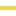

<!doctype html>
<html lang="en">
    <head>
        <meta charset="utf-8">
        <meta http-equiv="X-UA-Compatible" content="IE=edge">
        <meta name="viewport" content="initial-scale=1,user-scalable=no,maximum-scale=1,width=device-width">
        <meta name="mobile-web-app-capable" content="yes">
        <meta name="apple-mobile-web-app-capable" content="yes">
        <link rel="stylesheet" href="css/leaflet.css"><link rel="stylesheet" href="css/L.Control.Locate.min.css">
        <link rel="stylesheet" href="css/qgis2web.css"><link rel="stylesheet" href="css/fontawesome-all.min.css">
        <link rel="stylesheet" href="css/leaflet-search.css">
        <link rel="stylesheet" href="css/filter.css">
<link rel="stylesheet" href="css/nouislider.min.css">
        <link rel="stylesheet" href="css/leaflet-measure.css">
        <style>
        html, body, #map {
            width: 100%;
            height: 100%;
            padding: 0;
            margin: 0;
        }
        </style>
        <title></title>
    </head>
    <body>
        <div id="map">
        </div>
        <script src="js/qgis2web_expressions.js"></script>
        <script src="js/leaflet.js"></script><script src="js/L.Control.Locate.min.js"></script>
        <script src="js/leaflet.rotatedMarker.js"></script>
        <script src="js/leaflet.pattern.js"></script>
        <script src="js/leaflet-hash.js"></script>
        <script src="js/Autolinker.min.js"></script>
        <script src="js/rbush.min.js"></script>
        <script src="js/labelgun.min.js"></script>
        <script src="js/labels.js"></script>
        <script src="js/leaflet-measure.js"></script>
        <script src="js/leaflet-search.js"></script>
        <script src="js/tailDT.js"></script>
<script src="js/nouislider.min.js"></script>
<script src="js/wNumb.js"></script>
        <script src="data/open_data_strecken_eletrifiz_1.js"></script>
        <script src="data/open_data_strecken_bahnart_2.js"></script>
        <script>
        var highlightLayer;
        function highlightFeature(e) {
            highlightLayer = e.target;
            highlightLayer.openPopup();
        }
        var map = L.map('map', {
            zoomControl:true, maxZoom:20, minZoom:1
        }).fitBounds([[46.29007444949115,3.3099841808946247],[54.759438607141284,15.510156853560261]]);
        var hash = new L.Hash(map);
        map.attributionControl.setPrefix('<a href="https://github.com/tomchadwin/qgis2web" target="_blank">qgis2web</a> &middot; <a href="https://leafletjs.com" title="A JS library for interactive maps">Leaflet</a> &middot; <a href="https://qgis.org">QGIS</a>');
        var autolinker = new Autolinker({truncate: {length: 30, location: 'smart'}});
        L.control.locate({locateOptions: {maxZoom: 19}}).addTo(map);
        var measureControl = new L.Control.Measure({
            position: 'topleft',
            primaryLengthUnit: 'meters',
            secondaryLengthUnit: 'kilometers',
            primaryAreaUnit: 'sqmeters',
            secondaryAreaUnit: 'hectares'
        });
        measureControl.addTo(map);
        document.getElementsByClassName('leaflet-control-measure-toggle')[0]
        .innerHTML = '';
        document.getElementsByClassName('leaflet-control-measure-toggle')[0]
        .className += ' fas fa-ruler';
        var bounds_group = new L.featureGroup([]);
        function setBounds() {
        }
        map.createPane('pane_OpenStreetMap_0');
        map.getPane('pane_OpenStreetMap_0').style.zIndex = 400;
        var layer_OpenStreetMap_0 = L.tileLayer('https://tile.openstreetmap.org/{z}/{x}/{y}.png', {
            pane: 'pane_OpenStreetMap_0',
            opacity: 0.556,
            attribution: '',
            minZoom: 1,
            maxZoom: 20,
            minNativeZoom: 0,
            maxNativeZoom: 19
        });
        layer_OpenStreetMap_0;
        map.addLayer(layer_OpenStreetMap_0);
        function pop_open_data_strecken_eletrifiz_1(feature, layer) {
            layer.on({
                mouseout: function(e) {
                    if (typeof layer.closePopup == 'function') {
                        layer.closePopup();
                    } else {
                        layer.eachLayer(function(feature){
                            feature.closePopup()
                        });
                    }
                },
                mouseover: highlightFeature,
            });
        }

        function style_open_data_strecken_eletrifiz_1_0(feature) {
            switch(String(feature.properties['q2wHide_elektrifiz'])) {
                case 'Stromschiene':
                    return {
                pane: 'pane_open_data_strecken_eletrifiz_1',
                opacity: 1,
                color: 'rgba(255,161,0,1.0)',
                dashArray: '',
                lineCap: 'round',
                lineJoin: 'round',
                weight: 6.0,
                fillOpacity: 0,
                interactive: false,
            }
                    break;
                case 'Oberleitung':
                    return {
                pane: 'pane_open_data_strecken_eletrifiz_1',
                opacity: 1,
                color: 'rgba(232,215,84,1.0)',
                dashArray: '',
                lineCap: 'round',
                lineJoin: 'round',
                weight: 6.0,
                fillOpacity: 0,
                interactive: false,
            }
                    break;
                case 'nicht elektrifiziert':
                    return {
                pane: 'pane_open_data_strecken_eletrifiz_1',
                opacity: 1,
                color: 'rgba(214,0,4,1.0)',
                dashArray: '',
                lineCap: 'round',
                lineJoin: 'round',
                weight: 6.0,
                fillOpacity: 0,
                interactive: false,
            }
                    break;
                case 'Lücke am Anfang oder Ende der Strecke':
                    return {
                pane: 'pane_open_data_strecken_eletrifiz_1',
                opacity: 1,
                color: 'rgba(129,129,129,1.0)',
                dashArray: '',
                lineCap: 'round',
                lineJoin: 'round',
                weight: 6.0,
                fillOpacity: 0,
                interactive: false,
            }
                    break;
                default:
                    return {
                pane: 'pane_open_data_strecken_eletrifiz_1',
                opacity: 1,
                color: 'rgba(0,0,0,1.0)',
                dashArray: '',
                lineCap: 'round',
                lineJoin: 'round',
                weight: 2.0,
                fillOpacity: 0,
                interactive: false,
            }
                    break;
            }
        }
        map.createPane('pane_open_data_strecken_eletrifiz_1');
        map.getPane('pane_open_data_strecken_eletrifiz_1').style.zIndex = 401;
        map.getPane('pane_open_data_strecken_eletrifiz_1').style['mix-blend-mode'] = 'normal';
        var layer_open_data_strecken_eletrifiz_1 = new L.geoJson(json_open_data_strecken_eletrifiz_1, {
            attribution: '',
            interactive: false,
            dataVar: 'json_open_data_strecken_eletrifiz_1',
            layerName: 'layer_open_data_strecken_eletrifiz_1',
            pane: 'pane_open_data_strecken_eletrifiz_1',
            onEachFeature: pop_open_data_strecken_eletrifiz_1,
            style: style_open_data_strecken_eletrifiz_1_0,
        });
        bounds_group.addLayer(layer_open_data_strecken_eletrifiz_1);
        map.addLayer(layer_open_data_strecken_eletrifiz_1);
        function pop_open_data_strecken_bahnart_2(feature, layer) {
            layer.on({
                mouseout: function(e) {
                    if (typeof layer.closePopup == 'function') {
                        layer.closePopup();
                    } else {
                        layer.eachLayer(function(feature){
                            feature.closePopup()
                        });
                    }
                },
                mouseover: highlightFeature,
            });
            var popupContent = '<table>\
                    <tr>\
                        <td colspan="2"><strong>Art der Elektrifizierung</strong><br />' + (feature.properties['elektrifiz'] !== null ? autolinker.link(feature.properties['elektrifiz'].toLocaleString()) : '') + '</td>\
                    </tr>\
                    <tr>\
                        <td colspan="2">' + (feature.properties['bahnnutzun'] !== null ? autolinker.link(feature.properties['bahnnutzun'].toLocaleString()) : '') + '</td>\
                    </tr>\
                    <tr>\
                        <td colspan="2">' + (feature.properties['streckenku'] !== null ? autolinker.link(feature.properties['streckenku'].toLocaleString()) : '') + '</td>\
                    </tr>\
                </table>';
            layer.bindPopup(popupContent, {maxHeight: 400});
        }

        function style_open_data_strecken_bahnart_2_0(feature) {
            switch(String(feature.properties['q2wHide_bahnart'])) {
                case 'Hauptbahn':
                    return {
                pane: 'pane_open_data_strecken_bahnart_2',
                opacity: 1,
                color: 'rgba(0,0,0,1.0)',
                dashArray: '',
                lineCap: 'square',
                lineJoin: 'bevel',
                weight: 2.0,
                fillOpacity: 0,
                interactive: true,
            }
                    break;
                case 'Lücke am Anfang oder Ende der Strecke':
                    return {
                pane: 'pane_open_data_strecken_bahnart_2',
                opacity: 1,
                color: 'rgba(255,255,255,1.0)',
                dashArray: '1,5',
                lineCap: 'square',
                lineJoin: 'bevel',
                weight: 2.0,
                fillOpacity: 0,
                interactive: true,
            }
                    break;
                case 'Nebenbahn':
                    return {
                pane: 'pane_open_data_strecken_bahnart_2',
                opacity: 1,
                color: 'rgba(0,0,0,1.0)',
                dashArray: '10,5',
                lineCap: 'square',
                lineJoin: 'bevel',
                weight: 2.0,
                fillOpacity: 0,
                interactive: true,
            }
                    break;
            }
        }
        map.createPane('pane_open_data_strecken_bahnart_2');
        map.getPane('pane_open_data_strecken_bahnart_2').style.zIndex = 402;
        map.getPane('pane_open_data_strecken_bahnart_2').style['mix-blend-mode'] = 'normal';
        var layer_open_data_strecken_bahnart_2 = new L.geoJson(json_open_data_strecken_bahnart_2, {
            attribution: '',
            interactive: true,
            dataVar: 'json_open_data_strecken_bahnart_2',
            layerName: 'layer_open_data_strecken_bahnart_2',
            pane: 'pane_open_data_strecken_bahnart_2',
            onEachFeature: pop_open_data_strecken_bahnart_2,
            style: style_open_data_strecken_bahnart_2_0,
        });
        bounds_group.addLayer(layer_open_data_strecken_bahnart_2);
        map.addLayer(layer_open_data_strecken_bahnart_2);
        var baseMaps = {};
        L.control.layers(baseMaps,{'open_data_strecken_bahnart<br /><table><tr><td style="text-align: center;"></td><td>Hauptbahn</td></tr><tr><td style="text-align: center;"></td><td>Lücke am Anfang oder Ende der Strecke</td></tr><tr><td style="text-align: center;"></td><td>Nebenbahn</td></tr></table>': layer_open_data_strecken_bahnart_2,'open_data_strecken_eletrifiz<br /><table><tr><td style="text-align: center;"></td><td>Stromschiene</td></tr><tr><td style="text-align: center;"></td><td>Oberleitung</td></tr><tr><td style="text-align: center;"></td><td>nicht elektrifiziert</td></tr><tr><td style="text-align: center;"></td><td>Lücke am Anfang oder Ende der Strecke</td></tr><tr><td style="text-align: center;"></td><td></td></tr></table>': layer_open_data_strecken_eletrifiz_1,"OpenStreetMap": layer_OpenStreetMap_0,}).addTo(map);
        setBounds();
        map.addControl(new L.Control.Search({
            layer: layer_open_data_strecken_bahnart_2,
            initial: false,
            hideMarkerOnCollapse: true,
            propertyName: 'streckenku'}));
        document.getElementsByClassName('search-button')[0].className +=
         ' fa fa-binoculars';
        var mapDiv = document.getElementById('map');
        var row = document.createElement('div');
        row.className="row";
        row.id="all";
        row.style.height = "100%";
        var col1 = document.createElement('div');
        col1.className="col9";
        col1.id = "mapWindow";
        col1.style.height = "99%";
        col1.style.width = "80%";
        col1.style.display = "inline-block";
        var col2 = document.createElement('div');
        col2.className="col3";
        col2.id = "menu";
        col2.style.display = "inline-block";
        mapDiv.parentNode.insertBefore(row, mapDiv);
        document.getElementById("all").appendChild(col1);
        document.getElementById("all").appendChild(col2);
        col1.appendChild(mapDiv)
        var Filters = {"streckenku": "str"};
        function filterFunc() {
          map.eachLayer(function(lyr){
          if ("options" in lyr && "dataVar" in lyr["options"]){
            features = this[lyr["options"]["dataVar"]].features.slice(0);
            try{
              for (key in Filters){
                keyS = key.replace(/[^a-zA-Z0-9_]/g, "")
                if (Filters[key] == "str" || Filters[key] == "bool"){
                  var selection = [];
                  var options = document.getElementById("sel_" + keyS).options
                  for (var i=0; i < options.length; i++) {
                    if (options[i].selected) selection.push(options[i].value);
                  }
                    try{
                      if (key in features[0].properties){
                        for (i = features.length - 1;
                          i >= 0; --i){
                          if (selection.indexOf(
                          features[i].properties[key])<0
                          && selection.length>0) {
                          features.splice(i,1);
                          }
                        }
                      }
                    } catch(err){
                  }
                }
                if (Filters[key] == "int"){
                  sliderVals =  document.getElementById(
                    "div_" + keyS).noUiSlider.get();
                  try{
                    if (key in features[0].properties){
                    for (i = features.length - 1; i >= 0; --i){
                      if (parseInt(features[i].properties[key])
                          < sliderVals[0]
                          || parseInt(features[i].properties[key])
                          > sliderVals[1]){
                            features.splice(i,1);
                          }
                        }
                      }
                    } catch(err){
                    }
                  }
                if (Filters[key] == "real"){
                  sliderVals =  document.getElementById(
                    "div_" + keyS).noUiSlider.get();
                  try{
                    if (key in features[0].properties){
                    for (i = features.length - 1; i >= 0; --i){
                      if (features[i].properties[key]
                          < sliderVals[0]
                          || features[i].properties[key]
                          > sliderVals[1]){
                            features.splice(i,1);
                          }
                        }
                      }
                    } catch(err){
                    }
                  }
                if (Filters[key] == "date"
                  || Filters[key] == "datetime"
                  || Filters[key] == "time"){
                  try{
                    if (key in features[0].properties){
                      HTMLkey = key.replace(/[&\/\\#,+()$~%.'":*?<>{} ]/g, '');
                      startdate = document.getElementById("dat_" +
                        HTMLkey + "_date1").value.replace(" ", "T");
                      enddate = document.getElementById("dat_" +
                        HTMLkey + "_date2").value.replace(" ", "T");
                      for (i = features.length - 1; i >= 0; --i){
                        if (features[i].properties[key] < startdate
                          || features[i].properties[key] > enddate){
                          features.splice(i,1);
                        }
                      }
                    }
                  } catch(err){
                  }
                }
              }
            } catch(err){
            }
          this[lyr["options"]["layerName"]].clearLayers();
          this[lyr["options"]["layerName"]].addData(features);
          }
          })
        }
            document.getElementById("menu").appendChild(
                document.createElement("div"));
            var div_streckenku = document.createElement('div');
            div_streckenku.id = "div_streckenku";
            div_streckenku.className= "filterselect";
            document.getElementById("menu").appendChild(div_streckenku);
            sel_streckenku = document.createElement('select');
            sel_streckenku.multiple = true;
            sel_streckenku.size = 10;
            sel_streckenku.id = "sel_streckenku";
            var streckenku_options_str = "<option value='' unselected></option>";
            sel_streckenku.onchange = function(){filterFunc()};
            streckenku_options_str  += '<option value="(DB-Gr.) Herzogenrath - Stw Hs">(DB-Gr.) Herzogenrath - Stw Hs</option>';
            streckenku_options_str  += '<option value="(DB-Grenze) - Passau">(DB-Grenze) - Passau</option>';
            streckenku_options_str  += '<option value="Aachen - Kassel">Aachen - Kassel</option>';
            streckenku_options_str  += '<option value="Aachen West - (DB-Grenze)">Aachen West - (DB-Grenze)</option>';
            streckenku_options_str  += '<option value="Aachen West, W 3 - W 301">Aachen West, W 3 - W 301</option>';
            streckenku_options_str  += '<option value="Aachen-Rothe Erde - Aachen">Aachen-Rothe Erde - Aachen</option>';
            streckenku_options_str  += '<option value="Aalen - Ulm">Aalen - Ulm</option>';
            streckenku_options_str  += '<option value="Abelitz - Aurich">Abelitz - Aurich</option>';
            streckenku_options_str  += '<option value="Abzw Aischbach - Vaihingen N">Abzw Aischbach - Vaihingen N</option>';
            streckenku_options_str  += '<option value="Abzw Ashausen - Maschen Rbf">Abzw Ashausen - Maschen Rbf</option>';
            streckenku_options_str  += '<option value="Abzw Az - Abzw Radebeul Nord">Abzw Az - Abzw Radebeul Nord</option>';
            streckenku_options_str  += '<option value="Abzw Bashaide - Weil am Rhein">Abzw Bashaide - Weil am Rhein</option>';
            streckenku_options_str  += '<option value="Abzw Baukau - Abzw Crange">Abzw Baukau - Abzw Crange</option>';
            streckenku_options_str  += '<option value="Abzw Berg - Abzw Kassel NW">Abzw Berg - Abzw Kassel NW</option>';
            streckenku_options_str  += '<option value="Abzw Berg - Kassel Rbf">Abzw Berg - Kassel Rbf</option>';
            streckenku_options_str  += '<option value="Abzw Bernterode - Werkbf Deuna">Abzw Bernterode - Werkbf Deuna</option>';
            streckenku_options_str  += '<option value="Abzw Blumenthal - Recklinghsn">Abzw Blumenthal - Recklinghsn</option>';
            streckenku_options_str  += '<option value="Abzw Brücke - Mgd-Rothensee">Abzw Brücke - Mgd-Rothensee</option>';
            streckenku_options_str  += '<option value="Abzw Buschstraße - Abzw Deusen">Abzw Buschstraße - Abzw Deusen</option>';
            streckenku_options_str  += '<option value="Abzw Böhl-Iggelheim - Mannheim">Abzw Böhl-Iggelheim - Mannheim</option>';
            streckenku_options_str  += '<option value="Abzw Caltex - Brunnenschneise">Abzw Caltex - Brunnenschneise</option>';
            streckenku_options_str  += '<option value="Abzw Charlottbg - Wusterm Wot">Abzw Charlottbg - Wusterm Wot</option>';
            streckenku_options_str  += '<option value="Abzw D Sturm - D-Lierenfeld">Abzw D Sturm - D-Lierenfeld</option>';
            streckenku_options_str  += '<option value="Abzw D-Reisholz - D-Derendorf">Abzw D-Reisholz - D-Derendorf</option>';
            streckenku_options_str  += '<option value="Abzw DO-Lütgend. Flm - DO Gbf">Abzw DO-Lütgend. Flm - DO Gbf</option>';
            streckenku_options_str  += '<option value="Abzw DO-Nette - DO-Scharnhorst">Abzw DO-Nette - DO-Scharnhorst</option>';
            streckenku_options_str  += '<option value="Abzw DU Sigle - Duisburg Hafen">Abzw DU Sigle - Duisburg Hafen</option>';
            streckenku_options_str  += '<option value="Abzw Dill. Ford - Fordwerke">Abzw Dill. Ford - Fordwerke</option>';
            streckenku_options_str  += '<option value="Abzw Dill. Ford - Röderberg">Abzw Dill. Ford - Röderberg</option>';
            streckenku_options_str  += '<option value="Abzw Dillingen Ford - Hütte">Abzw Dillingen Ford - Hütte</option>';
            streckenku_options_str  += '<option value="Abzw Dillingen Ost - Hütte">Abzw Dillingen Ost - Hütte</option>';
            streckenku_options_str  += '<option value="Abzw Dillingen Süd - Abzw Ost">Abzw Dillingen Süd - Abzw Ost</option>';
            streckenku_options_str  += '<option value="Abzw E-Dellwig - Bottrop Süd">Abzw E-Dellwig - Bottrop Süd</option>';
            streckenku_options_str  += '<option value="Abzw Ernsgaden - Vohburg">Abzw Ernsgaden - Vohburg</option>';
            streckenku_options_str  += '<option value="Abzw Faßdorf - Bebra">Abzw Faßdorf - Bebra</option>';
            streckenku_options_str  += '<option value="Abzw Feldmark - Hamm Rbf">Abzw Feldmark - Hamm Rbf</option>';
            streckenku_options_str  += '<option value="Abzw Ffm Schlachthof - Hanau">Abzw Ffm Schlachthof - Hanau</option>';
            streckenku_options_str  += '<option value="Abzw Finkenkrug - Falkenhagen">Abzw Finkenkrug - Falkenhagen</option>';
            streckenku_options_str  += '<option value="Abzw Fortuna - Abzw Hardt">Abzw Fortuna - Abzw Hardt</option>';
            streckenku_options_str  += '<option value="Abzw Gallberg - Hamm Rbf">Abzw Gallberg - Hamm Rbf</option>';
            streckenku_options_str  += '<option value="Abzw Gerschede - Bottrop">Abzw Gerschede - Bottrop</option>';
            streckenku_options_str  += '<option value="Abzw Glasower Damm Ost - Süd">Abzw Glasower Damm Ost - Süd</option>';
            streckenku_options_str  += '<option value="Abzw Glasower Damm Süd - West">Abzw Glasower Damm Süd - West</option>';
            streckenku_options_str  += '<option value="Abzw Glindenberg - Oebisfelde">Abzw Glindenberg - Oebisfelde</option>';
            streckenku_options_str  += '<option value="Abzw Grünauer Kreuz West - Süd">Abzw Grünauer Kreuz West - Süd</option>';
            streckenku_options_str  += '<option value="Abzw HB Gabelung - Sagehorn">Abzw HB Gabelung - Sagehorn</option>';
            streckenku_options_str  += '<option value="Abzw Heide - Schwerte Ost">Abzw Heide - Schwerte Ost</option>';
            streckenku_options_str  += '<option value="Abzw Herringen - Hamm Rbf">Abzw Herringen - Hamm Rbf</option>';
            streckenku_options_str  += '<option value="Abzw Herzogsweg - Esbacher See">Abzw Herzogsweg - Esbacher See</option>';
            streckenku_options_str  += '<option value="Abzw Hockeroda - Wurzbach">Abzw Hockeroda - Wurzbach</option>';
            streckenku_options_str  += '<option value="Abzw Hohensyburg - Hagen-Kabel">Abzw Hohensyburg - Hagen-Kabel</option>';
            streckenku_options_str  += '<option value="Abzw Hohensyburg - Schwerte O">Abzw Hohensyburg - Schwerte O</option>';
            streckenku_options_str  += '<option value="Abzw Hufschlag - Waging">Abzw Hufschlag - Waging</option>';
            streckenku_options_str  += '<option value="Abzw KR Lohbr. - Rheinhausen">Abzw KR Lohbr. - Rheinhausen</option>';
            streckenku_options_str  += '<option value="Abzw Karow Ost - Berlin-Karow">Abzw Karow Ost - Berlin-Karow</option>';
            streckenku_options_str  += '<option value="Abzw Karow Ost - Bln-Blankenb.">Abzw Karow Ost - Bln-Blankenb.</option>';
            streckenku_options_str  += '<option value="Abzw Karow West - Bergfelde">Abzw Karow West - Bergfelde</option>';
            streckenku_options_str  += '<option value="Abzw Kassel NW - Kassel Rbf">Abzw Kassel NW - Kassel Rbf</option>';
            streckenku_options_str  += '<option value="Abzw Kasseler Bahn - Ammendorf">Abzw Kasseler Bahn - Ammendorf</option>';
            streckenku_options_str  += '<option value="Abzw Kesselheim - KO-Lützel">Abzw Kesselheim - KO-Lützel</option>';
            streckenku_options_str  += '<option value="Abzw Kolkmannshof - Oberhausen">Abzw Kolkmannshof - Oberhausen</option>';
            streckenku_options_str  += '<option value="Abzw Köln Süd - Köln-Kalk Nord">Abzw Köln Süd - Köln-Kalk Nord</option>';
            streckenku_options_str  += '<option value="Abzw Landl - Rohrdorf">Abzw Landl - Rohrdorf</option>';
            streckenku_options_str  += '<option value="Abzw Lechtenberg - Kanal">Abzw Lechtenberg - Kanal</option>';
            streckenku_options_str  += '<option value="Abzw Leckwitz - Abzw Kottewitz">Abzw Leckwitz - Abzw Kottewitz</option>';
            streckenku_options_str  += '<option value="Abzw Lia - Seddin Bla">Abzw Lia - Seddin Bla</option>';
            streckenku_options_str  += '<option value="Abzw Lienewitz Lia - Seddin">Abzw Lienewitz Lia - Seddin</option>';
            streckenku_options_str  += '<option value="Abzw Mainaschaff - Steinerts">Abzw Mainaschaff - Steinerts</option>';
            streckenku_options_str  += '<option value="Abzw Meerbeck - Abzw OB Walzw.">Abzw Meerbeck - Abzw OB Walzw.</option>';
            streckenku_options_str  += '<option value="Abzw Mönchwald - Abzw Mönchhof">Abzw Mönchwald - Abzw Mönchhof</option>';
            streckenku_options_str  += '<option value="Abzw Mühlenberg - Trompet">Abzw Mühlenberg - Trompet</option>';
            streckenku_options_str  += '<option value="Abzw Neugarten - Ketzin">Abzw Neugarten - Ketzin</option>';
            streckenku_options_str  += '<option value="Abzw Neuss Nordkanal, W1 - W7">Abzw Neuss Nordkanal, W1 - W7</option>';
            streckenku_options_str  += '<option value="Abzw Nuttlar - Frankenberg">Abzw Nuttlar - Frankenberg</option>';
            streckenku_options_str  += '<option value="Abzw Rainweg - HH-Eidelstedt">Abzw Rainweg - HH-Eidelstedt</option>';
            streckenku_options_str  += '<option value="Abzw Rauschwald - Wolfgang">Abzw Rauschwald - Wolfgang</option>';
            streckenku_options_str  += '<option value="Abzw Riekdahl - Rostock Seehaf">Abzw Riekdahl - Rostock Seehaf</option>';
            streckenku_options_str  += '<option value="Abzw Ruhrtal - DU-Ruhrort Haf.">Abzw Ruhrtal - DU-Ruhrort Haf.</option>';
            streckenku_options_str  += '<option value="Abzw Saalbach - Graben-Neudorf">Abzw Saalbach - Graben-Neudorf</option>';
            streckenku_options_str  += '<option value="Abzw Saaleck - Saalfeld">Abzw Saaleck - Saalfeld</option>';
            streckenku_options_str  += '<option value="Abzw Seehof - Abzw Werkleitz">Abzw Seehof - Abzw Werkleitz</option>';
            streckenku_options_str  += '<option value="Abzw Selmig - Hamm Rbf">Abzw Selmig - Hamm Rbf</option>';
            streckenku_options_str  += '<option value="Abzw Spreewitz Süd - Graustein">Abzw Spreewitz Süd - Graustein</option>';
            streckenku_options_str  += '<option value="Abzw Stockumer Str. - Dortmund">Abzw Stockumer Str. - Dortmund</option>';
            streckenku_options_str  += '<option value="Abzw Strals SRG - Strals Rügen">Abzw Strals SRG - Strals Rügen</option>';
            streckenku_options_str  += '<option value="Abzw Strecknitz - HL-Schlutup">Abzw Strecknitz - HL-Schlutup</option>';
            streckenku_options_str  += '<option value="Abzw Särichen - Abzw Mückenh.">Abzw Särichen - Abzw Mückenh.</option>';
            streckenku_options_str  += '<option value="Abzw Thüring Bahn - Ammendorf">Abzw Thüring Bahn - Ammendorf</option>';
            streckenku_options_str  += '<option value="Abzw Thüringer Bahn - Kanena">Abzw Thüringer Bahn - Kanena</option>';
            streckenku_options_str  += '<option value="Abzw Tornitz - Calbe Ost">Abzw Tornitz - Calbe Ost</option>';
            streckenku_options_str  += '<option value="Abzw Völklingen Walzw. - Bous">Abzw Völklingen Walzw. - Bous</option>';
            streckenku_options_str  += '<option value="Abzw WI-Wäschbach Nord - Süd">Abzw WI-Wäschbach Nord - Süd</option>';
            streckenku_options_str  += '<option value="Abzw Warnowbr. W - Dalwitzhof">Abzw Warnowbr. W - Dalwitzhof</option>';
            streckenku_options_str  += '<option value="Abzw Weißenbrunn - Creidlitz">Abzw Weißenbrunn - Creidlitz</option>';
            streckenku_options_str  += '<option value="Abzw Werd. W3 - Abzw Werd. W12">Abzw Werd. W3 - Abzw Werd. W12</option>';
            streckenku_options_str  += '<option value="Abzw Windschläg - Offenburg">Abzw Windschläg - Offenburg</option>';
            streckenku_options_str  += '<option value="Abzw Zeithain - Elsterwerda">Abzw Zeithain - Elsterwerda</option>';
            streckenku_options_str  += '<option value="Ahlem - Abzw Hannover Kurve">Ahlem - Abzw Hannover Kurve</option>';
            streckenku_options_str  += '<option value="Ahrensfelde - Wriezen">Ahrensfelde - Wriezen</option>';
            streckenku_options_str  += '<option value="Alsfeld - Niederaula">Alsfeld - Niederaula</option>';
            streckenku_options_str  += '<option value="Altenbeken - Warburg">Altenbeken - Warburg</option>';
            streckenku_options_str  += '<option value="Altenbeken, W 154 - W 85">Altenbeken, W 154 - W 85</option>';
            streckenku_options_str  += '<option value="Altenglan - Kusel">Altenglan - Kusel</option>';
            streckenku_options_str  += '<option value="Altshausen - Burgweiler">Altshausen - Burgweiler</option>';
            streckenku_options_str  += '<option value="Amberg - Schnaittenbach">Amberg - Schnaittenbach</option>';
            streckenku_options_str  += '<option value="Andernach - Gerolstein">Andernach - Gerolstein</option>';
            streckenku_options_str  += '<option value="Angermünde - Schwedt">Angermünde - Schwedt</option>';
            streckenku_options_str  += '<option value="Angermünde - Tantow (DB-Gr.)">Angermünde - Tantow (DB-Gr.)</option>';
            streckenku_options_str  += '<option value="Angersdorf Awo - Hal-Nietleben">Angersdorf Awo - Hal-Nietleben</option>';
            streckenku_options_str  += '<option value="Annaberg-Buchh - Schwarzenberg">Annaberg-Buchh - Schwarzenberg</option>';
            streckenku_options_str  += '<option value="Annaberg-Buchholz - Flöha">Annaberg-Buchholz - Flöha</option>';
            streckenku_options_str  += '<option value="Appenweier - Bad Griesbach">Appenweier - Bad Griesbach</option>';
            streckenku_options_str  += '<option value="Appenweier - Kehl">Appenweier - Kehl</option>';
            streckenku_options_str  += '<option value="Appenweier-Muhrhaag - Kurve">Appenweier-Muhrhaag - Kurve</option>';
            streckenku_options_str  += '<option value="Arnsdorf N - Arnsdorf W">Arnsdorf N - Arnsdorf W</option>';
            streckenku_options_str  += '<option value="Arnstadt Hbf - Saalfeld">Arnstadt Hbf - Saalfeld</option>';
            streckenku_options_str  += '<option value="Aschaffenb. Hbf, W 602 - W 274">Aschaffenb. Hbf, W 602 - W 274</option>';
            streckenku_options_str  += '<option value="Aschaffenburg - Miltenberg">Aschaffenburg - Miltenberg</option>';
            streckenku_options_str  += '<option value="Aschaffenburg Süd - Höchst">Aschaffenburg Süd - Höchst</option>';
            streckenku_options_str  += '<option value="Augsburg - Buchloe">Augsburg - Buchloe</option>';
            streckenku_options_str  += '<option value="Augsburg - Nördlingen">Augsburg - Nördlingen</option>';
            streckenku_options_str  += '<option value="Augsburg - Ulm">Augsburg - Ulm</option>';
            streckenku_options_str  += '<option value="Augsburg Hbf - Hirblinger Str.">Augsburg Hbf - Hirblinger Str.</option>';
            streckenku_options_str  += '<option value="Augsburg Hbf - Morellstraße">Augsburg Hbf - Morellstraße</option>';
            streckenku_options_str  += '<option value="Augsburg Hbf - Oberhausen">Augsburg Hbf - Oberhausen</option>';
            streckenku_options_str  += '<option value="Augsburg Morellstr. - Bbf Süd">Augsburg Morellstr. - Bbf Süd</option>';
            streckenku_options_str  += '<option value="Aumühle, W 805 - Gl 803">Aumühle, W 805 - Gl 803</option>';
            streckenku_options_str  += '<option value="BO Präsid. Strw - DO,Abzw Flm">BO Präsid. Strw - DO,Abzw Flm</option>';
            streckenku_options_str  += '<option value="BO Präsident Strw - BO-Riemke">BO Präsident Strw - BO-Riemke</option>';
            streckenku_options_str  += '<option value="BO-Langendreer, W 210 - W 87">BO-Langendreer, W 210 - W 87</option>';
            streckenku_options_str  += '<option value="BS Gabelung - BS-Buchhorst">BS Gabelung - BS-Buchhorst</option>';
            streckenku_options_str  += '<option value="BS Schmiedekamp - Rbf">BS Schmiedekamp - Rbf</option>';
            streckenku_options_str  += '<option value="Backnang - Ludwigsburg">Backnang - Ludwigsburg</option>';
            streckenku_options_str  += '<option value="Bad Belzig - Preußnitz Prb">Bad Belzig - Preußnitz Prb</option>';
            streckenku_options_str  += '<option value="Bad Dürkheim - Monsheim">Bad Dürkheim - Monsheim</option>';
            streckenku_options_str  += '<option value="Bad Endorf - Obing">Bad Endorf - Obing</option>';
            streckenku_options_str  += '<option value="Bad Gandersheim - Groß Düngen">Bad Gandersheim - Groß Düngen</option>';
            streckenku_options_str  += '<option value="Bad Hersfeld - Treysa">Bad Hersfeld - Treysa</option>';
            streckenku_options_str  += '<option value="Bad Reichenh. - Berchtesgaden">Bad Reichenh. - Berchtesgaden</option>';
            streckenku_options_str  += '<option value="Bad Schandau Gr - Drsd-Neust.">Bad Schandau Gr - Drsd-Neust.</option>';
            streckenku_options_str  += '<option value="Bad Vilbel - Lauterbach Nord">Bad Vilbel - Lauterbach Nord</option>';
            streckenku_options_str  += '<option value="Bad-Lauchstädt - Angersdorf">Bad-Lauchstädt - Angersdorf</option>';
            streckenku_options_str  += '<option value="Balingen - Rottweil">Balingen - Rottweil</option>';
            streckenku_options_str  += '<option value="Ballstädt - Straußfurt">Ballstädt - Straußfurt</option>';
            streckenku_options_str  += '<option value="Bamberg - Hof">Bamberg - Hof</option>';
            streckenku_options_str  += '<option value="Bamberg - Rottendorf">Bamberg - Rottendorf</option>';
            streckenku_options_str  += '<option value="Barnten - Rössing">Barnten - Rössing</option>';
            streckenku_options_str  += '<option value="Basel - Zell">Basel - Zell</option>';
            streckenku_options_str  += '<option value="Basel Bad Bf - Basel Bad Rbf">Basel Bad Bf - Basel Bad Rbf</option>';
            streckenku_options_str  += '<option value="Basel Bad Bf - Basel SBB">Basel Bad Bf - Basel SBB</option>';
            streckenku_options_str  += '<option value="Basel Bad Rbf - Basel Grenze">Basel Bad Rbf - Basel Grenze</option>';
            streckenku_options_str  += '<option value="Basel SBB - Basel Bad Bf">Basel SBB - Basel Bad Bf</option>';
            streckenku_options_str  += '<option value="Bautzen - Bad Schandau">Bautzen - Bad Schandau</option>';
            streckenku_options_str  += '<option value="Bayreuth - Warmensteinach">Bayreuth - Warmensteinach</option>';
            streckenku_options_str  += '<option value="Bayreuth Altstadt - Kulmbach">Bayreuth Altstadt - Kulmbach</option>';
            streckenku_options_str  += '<option value="Bebra - Bebra Umladebahnhof">Bebra - Bebra Umladebahnhof</option>';
            streckenku_options_str  += '<option value="Bebra, W 106 - W 6">Bebra, W 106 - W 6</option>';
            streckenku_options_str  += '<option value="Bebra, W 108 - W 23">Bebra, W 108 - W 23</option>';
            streckenku_options_str  += '<option value="Bedburg - Strw 2581/2601">Bedburg - Strw 2581/2601</option>';
            streckenku_options_str  += '<option value="Beelitz  - Potsd Park S - Golm">Beelitz  - Potsd Park S - Golm</option>';
            streckenku_options_str  += '<option value="Beelitz-Heilstätten - Abzw Lia">Beelitz-Heilstätten - Abzw Lia</option>';
            streckenku_options_str  += '<option value="Beienheim - Nidda">Beienheim - Nidda</option>';
            streckenku_options_str  += '<option value="Bentwisch - Poppendorf">Bentwisch - Poppendorf</option>';
            streckenku_options_str  += '<option value="Bentwisch - Rostock Seehafen">Bentwisch - Rostock Seehafen</option>';
            streckenku_options_str  += '<option value="Berchtesgaden - Salzbergwerk">Berchtesgaden - Salzbergwerk</option>';
            streckenku_options_str  += '<option value="Berga-Kelbra - Stolberg (Harz)">Berga-Kelbra - Stolberg (Harz)</option>';
            streckenku_options_str  += '<option value="Bergen auf Rügen - Lauterbach">Bergen auf Rügen - Lauterbach</option>';
            streckenku_options_str  += '<option value="Bergfelde Ost - Hoh. Neuendorf">Bergfelde Ost - Hoh. Neuendorf</option>';
            streckenku_options_str  += '<option value="Berleburg, Hörre - Allendorf">Berleburg, Hörre - Allendorf</option>';
            streckenku_options_str  += '<option value="Berlin Görlitzer Bf - Görlitz">Berlin Görlitzer Bf - Görlitz</option>';
            streckenku_options_str  += '<option value="Berlin Hbf-Le Bf - Lehrte">Berlin Hbf-Le Bf - Lehrte</option>';
            streckenku_options_str  += '<option value="Berlin Nordbf - Bln-Schöneberg">Berlin Nordbf - Bln-Schöneberg</option>';
            streckenku_options_str  += '<option value="Berlin Nordbf Strw - Bernau">Berlin Nordbf Strw - Bernau</option>';
            streckenku_options_str  += '<option value="Berlin Ostbf - Berlin-Spandau">Berlin Ostbf - Berlin-Spandau</option>';
            streckenku_options_str  += '<option value="Berlin Ostbf - Erkner">Berlin Ostbf - Erkner</option>';
            streckenku_options_str  += '<option value="Berlin Ostbf - Potsdam Hbf">Berlin Ostbf - Potsdam Hbf</option>';
            streckenku_options_str  += '<option value="Berlin Südkreuz - Halle Hbf">Berlin Südkreuz - Halle Hbf</option>';
            streckenku_options_str  += '<option value="Berlin-Karow - Abzw Karow West">Berlin-Karow - Abzw Karow West</option>';
            streckenku_options_str  += '<option value="Berlin-Karow - Fichtengrund">Berlin-Karow - Fichtengrund</option>';
            streckenku_options_str  += '<option value="Berlin-Moabit, W 381 - W 361">Berlin-Moabit, W 381 - W 361</option>';
            streckenku_options_str  += '<option value="Berlin-Neukölln - Zossen">Berlin-Neukölln - Zossen</option>';
            streckenku_options_str  += '<option value="Bernburg-Waldau - Calbe West">Bernburg-Waldau - Calbe West</option>';
            streckenku_options_str  += '<option value="Beucha - Trebsen">Beucha - Trebsen</option>';
            streckenku_options_str  += '<option value="Bexbach - Petrocarbona">Bexbach - Petrocarbona</option>';
            streckenku_options_str  += '<option value="Bhv-Speckenbüttel - Bederkesa">Bhv-Speckenbüttel - Bederkesa</option>';
            streckenku_options_str  += '<option value="Bhv-Speckenbüttel - Cuxhaven">Bhv-Speckenbüttel - Cuxhaven</option>';
            streckenku_options_str  += '<option value="Biederitz - Altengrabow">Biederitz - Altengrabow</option>';
            streckenku_options_str  += '<option value="Biederitz - Trebnitz">Biederitz - Trebnitz</option>';
            streckenku_options_str  += '<option value="Biesdf Kr N - Bln-Hohenschönh.">Biesdf Kr N - Bln-Hohenschönh.</option>';
            streckenku_options_str  += '<option value="Biesdf Kr Nord - Biesdf Kr Ost">Biesdf Kr Nord - Biesdf Kr Ost</option>';
            streckenku_options_str  += '<option value="Biesdf Kr Nord - Karower Kreuz">Biesdf Kr Nord - Karower Kreuz</option>';
            streckenku_options_str  += '<option value="Biesdf Kr Süd - Biesdf Kr SW">Biesdf Kr Süd - Biesdf Kr SW</option>';
            streckenku_options_str  += '<option value="Biesdorfer Kr Mitte - Ost">Biesdorfer Kr Mitte - Ost</option>';
            streckenku_options_str  += '<option value="Biesdorfer Kr Süd - Südost">Biesdorfer Kr Süd - Südost</option>';
            streckenku_options_str  += '<option value="Biesdorfer Kr W - Biesdf Kr SW">Biesdorfer Kr W - Biesdf Kr SW</option>';
            streckenku_options_str  += '<option value="Biesdorfer Kreuz - Ahrensfelde">Biesdorfer Kreuz - Ahrensfelde</option>';
            streckenku_options_str  += '<option value="Biessenhofen - Marktoberdorf">Biessenhofen - Marktoberdorf</option>';
            streckenku_options_str  += '<option value="Bietigheim - Osterburken">Bietigheim - Osterburken</option>';
            streckenku_options_str  += '<option value="Bingen Hbf - Mainz">Bingen Hbf - Mainz</option>';
            streckenku_options_str  += '<option value="Bingen Hbf - Saarbrücken">Bingen Hbf - Saarbrücken</option>';
            streckenku_options_str  += '<option value="Bingen Hbf, W 220 - W 162">Bingen Hbf, W 220 - W 162</option>';
            streckenku_options_str  += '<option value="Birkengr. Süd - Genshag.H. Ost">Birkengr. Süd - Genshag.H. Ost</option>';
            streckenku_options_str  += '<option value="Birkengrund Süd - Ludwigsfelde">Birkengrund Süd - Ludwigsfelde</option>';
            streckenku_options_str  += '<option value="Birkenwerder - Abzw Schönfließ">Birkenwerder - Abzw Schönfließ</option>';
            streckenku_options_str  += '<option value="Birkenwerder - Hohen Neuendorf">Birkenwerder - Hohen Neuendorf</option>';
            streckenku_options_str  += '<option value="Bitburg - Igel">Bitburg - Igel</option>';
            streckenku_options_str  += '<option value="Bitterfeld - Abzw Roitzsch">Bitterfeld - Abzw Roitzsch</option>';
            streckenku_options_str  += '<option value="Blankenburg - Michaelstein">Blankenburg - Michaelstein</option>';
            streckenku_options_str  += '<option value="Blankenburg(Harz),W 2 - W 132">Blankenburg(Harz),W 2 - W 132</option>';
            streckenku_options_str  += '<option value="Blankenese - Wedel">Blankenese - Wedel</option>';
            streckenku_options_str  += '<option value="Blankenheim - Bebra">Blankenheim - Bebra</option>';
            streckenku_options_str  += '<option value="Bln Anhalter Bf - Yorckstraße">Bln Anhalter Bf - Yorckstraße</option>';
            streckenku_options_str  += '<option value="Bln Bornh. Str - Schönh. Allee">Bln Bornh. Str - Schönh. Allee</option>';
            streckenku_options_str  += '<option value="Bln Bornholmer - Schönh. Allee">Bln Bornholmer - Schönh. Allee</option>';
            streckenku_options_str  += '<option value="Bln Eichgestell - Biesdf Kr N">Bln Eichgestell - Biesdf Kr N</option>';
            streckenku_options_str  += '<option value="Bln Eichgestell - Stadtforst">Bln Eichgestell - Stadtforst</option>';
            streckenku_options_str  += '<option value="Bln Hbf - Bln Südkreuz">Bln Hbf - Bln Südkreuz</option>';
            streckenku_options_str  += '<option value="Bln Hmb u L Bf - Bln-Moabit">Bln Hmb u L Bf - Bln-Moabit</option>';
            streckenku_options_str  += '<option value="Bln Neukölln - Baumschulenweg">Bln Neukölln - Baumschulenweg</option>';
            streckenku_options_str  += '<option value="Bln Ostbahnhof - Strausberg">Bln Ostbahnhof - Strausberg</option>';
            streckenku_options_str  += '<option value="Bln Ostbf - Bln-Rummels">Bln Ostbf - Bln-Rummels</option>';
            streckenku_options_str  += '<option value="Bln Ostbf - Guben (DB-Grenze)">Bln Ostbf - Guben (DB-Grenze)</option>';
            streckenku_options_str  += '<option value="Bln Ostkreuz - Bln-Lichtenberg">Bln Ostkreuz - Bln-Lichtenberg</option>';
            streckenku_options_str  += '<option value="Bln Potsd. Gbf - Griebnitzsee">Bln Potsd. Gbf - Griebnitzsee</option>';
            streckenku_options_str  += '<option value="Bln Springpfuhl - Karow West">Bln Springpfuhl - Karow West</option>';
            streckenku_options_str  += '<option value="Bln Südkreuz - Elsterwerda">Bln Südkreuz - Elsterwerda</option>';
            streckenku_options_str  += '<option value="Bln Treptower Park - Treptow">Bln Treptower Park - Treptow</option>';
            streckenku_options_str  += '<option value="Bln Westkreuz - Bln-Spandau">Bln Westkreuz - Bln-Spandau</option>';
            streckenku_options_str  += '<option value="Bln Wriezener Bf - Küstrin-K.">Bln Wriezener Bf - Küstrin-K.</option>';
            streckenku_options_str  += '<option value="Bln Yorckstraße - Blankenfelde">Bln Yorckstraße - Blankenfelde</option>';
            streckenku_options_str  += '<option value="Bln-Blankenb. - Karow West">Bln-Blankenb. - Karow West</option>';
            streckenku_options_str  += '<option value="Bln-Blankenb. - Karow West, W2">Bln-Blankenb. - Karow West, W2</option>';
            streckenku_options_str  += '<option value="Bln-Charlottenb - Bln-Grunewld">Bln-Charlottenb - Bln-Grunewld</option>';
            streckenku_options_str  += '<option value="Bln-Charlottenb - Bln-Halensee">Bln-Charlottenb - Bln-Halensee</option>';
            streckenku_options_str  += '<option value="Bln-Charlottenb. - Blankenheim">Bln-Charlottenb. - Blankenheim</option>';
            streckenku_options_str  += '<option value="Bln-Gesund --Ebersw-- - Strals">Bln-Gesund --Ebersw-- - Strals</option>';
            streckenku_options_str  += '<option value="Bln-Gesund --Neubra-- - Strals">Bln-Gesund --Neubra-- - Strals</option>';
            streckenku_options_str  += '<option value="Bln-Gesundbrunnen - Oranienbg.">Bln-Gesundbrunnen - Oranienbg.</option>';
            streckenku_options_str  += '<option value="Bln-Grunewald - Bln-Halensee">Bln-Grunewald - Bln-Halensee</option>';
            streckenku_options_str  += '<option value="Bln-Grunewald Gdr - Gds">Bln-Grunewald Gdr - Gds</option>';
            streckenku_options_str  += '<option value="Bln-Grünau - Bln-Schönef. Süd">Bln-Grünau - Bln-Schönef. Süd</option>';
            streckenku_options_str  += '<option value="Bln-Grünau - Grünauer Kr Nord">Bln-Grünau - Grünauer Kr Nord</option>';
            streckenku_options_str  += '<option value="Bln-Grünau - Grünauer Kr Süd">Bln-Grünau - Grünauer Kr Süd</option>';
            streckenku_options_str  += '<option value="Bln-Halensee, W 82 - W 709 S-B">Bln-Halensee, W 82 - W 709 S-B</option>';
            streckenku_options_str  += '<option value="Bln-Lichtenberg - Ahrensfelde">Bln-Lichtenberg - Ahrensfelde</option>';
            streckenku_options_str  += '<option value="Bln-Lichtenberg - Rummelsburg">Bln-Lichtenberg - Rummelsburg</option>';
            streckenku_options_str  += '<option value="Bln-Lichtenbg - Biesdf Kr Nord">Bln-Lichtenbg - Biesdf Kr Nord</option>';
            streckenku_options_str  += '<option value="Bln-Moa - Bln-Moa, Ring">Bln-Moa - Bln-Moa, Ring</option>';
            streckenku_options_str  += '<option value="Bln-Moa - Bln-Moa, Ring S-Bahn">Bln-Moa - Bln-Moa, Ring S-Bahn</option>';
            streckenku_options_str  += '<option value="Bln-Neukölln - Baumschulenweg">Bln-Neukölln - Baumschulenweg</option>';
            streckenku_options_str  += '<option value="Bln-Rummelsb. - Biesdf Kr Nord">Bln-Rummelsb. - Biesdf Kr Nord</option>';
            streckenku_options_str  += '<option value="Bln-Schöneberg - Bln-Wannsee">Bln-Schöneberg - Bln-Wannsee</option>';
            streckenku_options_str  += '<option value="Bln-Schöneweide - Spindlersfld">Bln-Schöneweide - Spindlersfld</option>';
            streckenku_options_str  += '<option value="Bln-Schöneweide - Wendenheide">Bln-Schöneweide - Wendenheide</option>';
            streckenku_options_str  += '<option value="Bln-Schönholz - Kremmen">Bln-Schönholz - Kremmen</option>';
            streckenku_options_str  += '<option value="Bln-Schönholz - Reinickendorf">Bln-Schönholz - Reinickendorf</option>';
            streckenku_options_str  += '<option value="Bln-Spandau - Hamburg-Altona">Bln-Spandau - Hamburg-Altona</option>';
            streckenku_options_str  += '<option value="Bln-Spandau - Oebisfelde">Bln-Spandau - Oebisfelde</option>';
            streckenku_options_str  += '<option value="Bln-Tempelhof - Atillastraße">Bln-Tempelhof - Atillastraße</option>';
            streckenku_options_str  += '<option value="Bln-Wedding - Bln Südkreuz">Bln-Wedding - Bln Südkreuz</option>';
            streckenku_options_str  += '<option value="Bln-Zehlendorf - Bln-Wannsee">Bln-Zehlendorf - Bln-Wannsee</option>';
            streckenku_options_str  += '<option value="Bobingen - Kaufering">Bobingen - Kaufering</option>';
            streckenku_options_str  += '<option value="Bochum - Abzw GE Nordstern">Bochum - Abzw GE Nordstern</option>';
            streckenku_options_str  += '<option value="Bochum - Dortmund">Bochum - Dortmund</option>';
            streckenku_options_str  += '<option value="Bochum - Dortmund Hbf, W 207">Bochum - Dortmund Hbf, W 207</option>';
            streckenku_options_str  += '<option value="Bochum - Prinz von Preußen">Bochum - Prinz von Preußen</option>';
            streckenku_options_str  += '<option value="Bochum Hbf - Bochum West">Bochum Hbf - Bochum West</option>';
            streckenku_options_str  += '<option value="Bochum-Dahlhausen, W301 - W397">Bochum-Dahlhausen, W301 - W397</option>';
            streckenku_options_str  += '<option value="Bochum-Langendreer - Witten">Bochum-Langendreer - Witten</option>';
            streckenku_options_str  += '<option value="Bodenwöhr Nord - Nittenau">Bodenwöhr Nord - Nittenau</option>';
            streckenku_options_str  += '<option value="Bonn - Euskirchen">Bonn - Euskirchen</option>';
            streckenku_options_str  += '<option value="Borsdorf (S) - Coswig">Borsdorf (S) - Coswig</option>';
            streckenku_options_str  += '<option value="Borstel - Niedergörne">Borstel - Niedergörne</option>';
            streckenku_options_str  += '<option value="Bottrop Nord - Quakenbrück">Bottrop Nord - Quakenbrück</option>';
            streckenku_options_str  += '<option value="Brackwede - Osnabrück">Brackwede - Osnabrück</option>';
            streckenku_options_str  += '<option value="Brandenburg - Neustadt (Dosse)">Brandenburg - Neustadt (Dosse)</option>';
            streckenku_options_str  += '<option value="Braunschw. Rbf - Lünischteich">Braunschw. Rbf - Lünischteich</option>';
            streckenku_options_str  += '<option value="Braunschweig - Bad Harzburg">Braunschweig - Bad Harzburg</option>';
            streckenku_options_str  += '<option value="Braunschweig - Gifhorn">Braunschweig - Gifhorn</option>';
            streckenku_options_str  += '<option value="Braunschweig - Helmstedt">Braunschweig - Helmstedt</option>';
            streckenku_options_str  += '<option value="Braunschweig Nordkurve - Rbf">Braunschweig Nordkurve - Rbf</option>';
            streckenku_options_str  += '<option value="Braunschweig Rbf - Okerbrücke">Braunschweig Rbf - Okerbrücke</option>';
            streckenku_options_str  += '<option value="Brebach - Halberger Hütte">Brebach - Halberger Hütte</option>';
            streckenku_options_str  += '<option value="Breckenheim - Wiesbaden Hbf">Breckenheim - Wiesbaden Hbf</option>';
            streckenku_options_str  += '<option value="Breitengüßb. - Maroldsweisach">Breitengüßb. - Maroldsweisach</option>';
            streckenku_options_str  += '<option value="Bremen Hbf - HB Rbf, W 17005">Bremen Hbf - HB Rbf, W 17005</option>';
            streckenku_options_str  += '<option value="Bremen Inlandsh. - Stahlwerke">Bremen Inlandsh. - Stahlwerke</option>';
            streckenku_options_str  += '<option value="Bremen Neustadt - HB-Grolland">Bremen Neustadt - HB-Grolland</option>';
            streckenku_options_str  += '<option value="Bremen Rbf - Inlandshafen">Bremen Rbf - Inlandshafen</option>';
            streckenku_options_str  += '<option value="Bremen Rbf, W 147 - W 322">Bremen Rbf, W 147 - W 322</option>';
            streckenku_options_str  += '<option value="Bremen Rbf, W 2 - 17W001">Bremen Rbf, W 2 - 17W001</option>';
            streckenku_options_str  += '<option value="Bremen Utbremen - Bremen Rbf">Bremen Utbremen - Bremen Rbf</option>';
            streckenku_options_str  += '<option value="Bremen, 11W601 - 11W524">Bremen, 11W601 - 11W524</option>';
            streckenku_options_str  += '<option value="Bremen-Burg - Bremen-Vegesack">Bremen-Burg - Bremen-Vegesack</option>';
            streckenku_options_str  += '<option value="Bremen-Hastedt - Bremen-Vahr">Bremen-Hastedt - Bremen-Vahr</option>';
            streckenku_options_str  += '<option value="Bremen-Sebaldsbrück, W 61-W 48">Bremen-Sebaldsbrück, W 61-W 48</option>';
            streckenku_options_str  += '<option value="Bremerhv-Wulsdorf - Buchholz">Bremerhv-Wulsdorf - Buchholz</option>';
            streckenku_options_str  += '<option value="Brieselang - Abzw Hasselberg">Brieselang - Abzw Hasselberg</option>';
            streckenku_options_str  += '<option value="Brieselang - Falkenhagen (b N)">Brieselang - Falkenhagen (b N)</option>';
            streckenku_options_str  += '<option value="Brieske - Hosena">Brieske - Hosena</option>';
            streckenku_options_str  += '<option value="Britz - Fürstenberg">Britz - Fürstenberg</option>';
            streckenku_options_str  += '<option value="Bruchsal - Abzw Bruchsal Ost">Bruchsal - Abzw Bruchsal Ost</option>';
            streckenku_options_str  += '<option value="Bruchsal - Bretten">Bruchsal - Bretten</option>';
            streckenku_options_str  += '<option value="Bruchsal - Rheinsheim">Bruchsal - Rheinsheim</option>';
            streckenku_options_str  += '<option value="Bruchsal Nord - Rollenberg">Bruchsal Nord - Rollenberg</option>';
            streckenku_options_str  += '<option value="Brügge - Lüdenscheid">Brügge - Lüdenscheid</option>';
            streckenku_options_str  += '<option value="Buchholz - HH-Allermöhe">Buchholz - HH-Allermöhe</option>';
            streckenku_options_str  += '<option value="Buchloe - Lindau Hbf">Buchloe - Lindau Hbf</option>';
            streckenku_options_str  += '<option value="Buchloe - Memmingen">Buchloe - Memmingen</option>';
            streckenku_options_str  += '<option value="Buchschlag - Ober Roden">Buchschlag - Ober Roden</option>';
            streckenku_options_str  += '<option value="Buna Werke - Schafstädt">Buna Werke - Schafstädt</option>';
            streckenku_options_str  += '<option value="Burg (F) Abzw - Burg (F) W">Burg (F) Abzw - Burg (F) W</option>';
            streckenku_options_str  += '<option value="Burg u.N. Gemünden - Kirchhain">Burg u.N. Gemünden - Kirchhain</option>';
            streckenku_options_str  += '<option value="Burghausen - Wackerwerk">Burghausen - Wackerwerk</option>';
            streckenku_options_str  += '<option value="Burgsinn - Bbf">Burgsinn - Bbf</option>';
            streckenku_options_str  += '<option value="Burgsinn Bbf - Sinnberg">Burgsinn Bbf - Sinnberg</option>';
            streckenku_options_str  += '<option value="Buschhof - Thurow">Buschhof - Thurow</option>';
            streckenku_options_str  += '<option value="Buxtehude, W 413 - W 418">Buxtehude, W 413 - W 418</option>';
            streckenku_options_str  += '<option value="Bärenstein - Annaberg-Buchholz">Bärenstein - Annaberg-Buchholz</option>';
            streckenku_options_str  += '<option value="Böblingen - Dettenhausen">Böblingen - Dettenhausen</option>';
            streckenku_options_str  += '<option value="Böblingen - Renningen">Böblingen - Renningen</option>';
            streckenku_options_str  += '<option value="Böhlen - Espenhain DB-Grenze">Böhlen - Espenhain DB-Grenze</option>';
            streckenku_options_str  += '<option value="Bönen - Hamm Rbf">Bönen - Hamm Rbf</option>';
            streckenku_options_str  += '<option value="Büdesheim-Drom. - Bingen Stadt">Büdesheim-Drom. - Bingen Stadt</option>';
            streckenku_options_str  += '<option value="Bünde - Bassum">Bünde - Bassum</option>';
            streckenku_options_str  += '<option value="Bützow - Rostock Hbf">Bützow - Rostock Hbf</option>';
            streckenku_options_str  += '<option value="Cannstatt - Untertürkheim">Cannstatt - Untertürkheim</option>';
            streckenku_options_str  += '<option value="Celle - Braunschw.-Gliesmarode">Celle - Braunschw.-Gliesmarode</option>';
            streckenku_options_str  += '<option value="Celle - NE-Strecke 9170">Celle - NE-Strecke 9170</option>';
            streckenku_options_str  += '<option value="Cham - Bad Kötzting">Cham - Bad Kötzting</option>';
            streckenku_options_str  += '<option value="Cham - Waldmünchen">Cham - Waldmünchen</option>';
            streckenku_options_str  += '<option value="Chemnitz Hbf - Blauenthal">Chemnitz Hbf - Blauenthal</option>';
            streckenku_options_str  += '<option value="Chemnitz-Hilb. - Chemnitz Hbf">Chemnitz-Hilb. - Chemnitz Hbf</option>';
            streckenku_options_str  += '<option value="Cloppenburg - Westerst.-Ocholt">Cloppenburg - Westerst.-Ocholt</option>';
            streckenku_options_str  += '<option value="Coburg - Bad Rodach">Coburg - Bad Rodach</option>';
            streckenku_options_str  += '<option value="Coburg - Lauscha">Coburg - Lauscha</option>';
            streckenku_options_str  += '<option value="Cottbus - Forst (Lausitz)">Cottbus - Forst (Lausitz)</option>';
            streckenku_options_str  += '<option value="Cottbus Cbn - 20W112">Cottbus Cbn - 20W112</option>';
            streckenku_options_str  += '<option value="Cottbus Cfw - 20W34">Cottbus Cfw - 20W34</option>';
            streckenku_options_str  += '<option value="Cottbus Cfw - Cottbus">Cottbus Cfw - Cottbus</option>';
            streckenku_options_str  += '<option value="Cottbus Südwest - Cottbus">Cottbus Südwest - Cottbus</option>';
            streckenku_options_str  += '<option value="Crailsheim - Bad Mergentheim">Crailsheim - Bad Mergentheim</option>';
            streckenku_options_str  += '<option value="Crailsheim - Eppingen">Crailsheim - Eppingen</option>';
            streckenku_options_str  += '<option value="Crailsheim - Schnelldorf">Crailsheim - Schnelldorf</option>';
            streckenku_options_str  += '<option value="Cuxhaven - Amerika Bahnhof">Cuxhaven - Amerika Bahnhof</option>';
            streckenku_options_str  += '<option value="D Flugh Term - Unterrath, W761">D Flugh Term - Unterrath, W761</option>';
            streckenku_options_str  += '<option value="D Flugh Term - Unterrath, W852">D Flugh Term - Unterrath, W852</option>';
            streckenku_options_str  += '<option value="D-Derendorf - Abzw Vogelsang">D-Derendorf - Abzw Vogelsang</option>';
            streckenku_options_str  += '<option value="D-Derendorf - D-Unterrath">D-Derendorf - D-Unterrath</option>';
            streckenku_options_str  += '<option value="D-Gerresheim - Abzw D Hardt">D-Gerresheim - Abzw D Hardt</option>';
            streckenku_options_str  += '<option value="D-Gerresheim - DO Signal Iduna">D-Gerresheim - DO Signal Iduna</option>';
            streckenku_options_str  += '<option value="DA Nord - Groß-Umstadt-Wiebel.">DA Nord - Groß-Umstadt-Wiebel.</option>';
            streckenku_options_str  += '<option value="DA-Arheilgen - Darmstadt Nord">DA-Arheilgen - Darmstadt Nord</option>';
            streckenku_options_str  += '<option value="DA-Eberstadt - Pfungstadt">DA-Eberstadt - Pfungstadt</option>';
            streckenku_options_str  += '<option value="DO-Dorstfeld - DO-Huckarde Süd">DO-Dorstfeld - DO-Huckarde Süd</option>';
            streckenku_options_str  += '<option value="DO-Dorstfeld - Dortmund Süd">DO-Dorstfeld - Dortmund Süd</option>';
            streckenku_options_str  += '<option value="DO-Lütg Flm - DO Signal Iduna">DO-Lütg Flm - DO Signal Iduna</option>';
            streckenku_options_str  += '<option value="DO-Lütgend. - DO-Dorstfeld">DO-Lütgend. - DO-Dorstfeld</option>';
            streckenku_options_str  += '<option value="DO-Mengede - DO-Dorstfeld">DO-Mengede - DO-Dorstfeld</option>';
            streckenku_options_str  += '<option value="DO-Obereving - DO-Kirchderne">DO-Obereving - DO-Kirchderne</option>';
            streckenku_options_str  += '<option value="DU-Duissern - Kaiserberg">DU-Duissern - Kaiserberg</option>';
            streckenku_options_str  += '<option value="DU-Großenbaum - Abzw Buchholz">DU-Großenbaum - Abzw Buchholz</option>';
            streckenku_options_str  += '<option value="DU-Hochfeld S.,W147 - Duisburg">DU-Hochfeld S.,W147 - Duisburg</option>';
            streckenku_options_str  += '<option value="DU-Hochfeld Süd - Abzw Sigle">DU-Hochfeld Süd - Abzw Sigle</option>';
            streckenku_options_str  += '<option value="DU-Hochfeld Süd - Duisb.,W 602">DU-Hochfeld Süd - Duisb.,W 602</option>';
            streckenku_options_str  += '<option value="DU-Hochfeld Süd - Mannesmann">DU-Hochfeld Süd - Mannesmann</option>';
            streckenku_options_str  += '<option value="DU-Meiderich Ost - OB West">DU-Meiderich Ost - OB West</option>';
            streckenku_options_str  += '<option value="DU-Meiderich Süd - Essen">DU-Meiderich Süd - Essen</option>';
            streckenku_options_str  += '<option value="DU-Ruhrort Hafen - OB Mathilde">DU-Ruhrort Hafen - OB Mathilde</option>';
            streckenku_options_str  += '<option value="DU-Ruhrort Hafen - OB West">DU-Ruhrort Hafen - OB West</option>';
            streckenku_options_str  += '<option value="DU-Wedau - Oberhausen">DU-Wedau - Oberhausen</option>';
            streckenku_options_str  += '<option value="DU-Wedau Bissingh. - Duisburg">DU-Wedau Bissingh. - Duisburg</option>';
            streckenku_options_str  += '<option value="Dachau - Altomünster">Dachau - Altomünster</option>';
            streckenku_options_str  += '<option value="Dalwitzhof - Dalwitzhof Nordk">Dalwitzhof - Dalwitzhof Nordk</option>';
            streckenku_options_str  += '<option value="Dalwitzhof - Sanitz">Dalwitzhof - Sanitz</option>';
            streckenku_options_str  += '<option value="Dalwitzhof, W 1 - Rostock Gbf">Dalwitzhof, W 1 - Rostock Gbf</option>';
            streckenku_options_str  += '<option value="Dannenberg Ost - Jesteburg">Dannenberg Ost - Jesteburg</option>';
            streckenku_options_str  += '<option value="Darmstadt - Aschaffenburg">Darmstadt - Aschaffenburg</option>';
            streckenku_options_str  += '<option value="Darmstadt Hbf - Darmstadt Nord">Darmstadt Hbf - Darmstadt Nord</option>';
            streckenku_options_str  += '<option value="Deggendorf - Kalteneck">Deggendorf - Kalteneck</option>';
            streckenku_options_str  += '<option value="Delitzsch Gbf - unt Bf Ah">Delitzsch Gbf - unt Bf Ah</option>';
            streckenku_options_str  += '<option value="Delitzsch unterer Bf - Gbf">Delitzsch unterer Bf - Gbf</option>';
            streckenku_options_str  += '<option value="Delmenhorst - Hesepe">Delmenhorst - Hesepe</option>';
            streckenku_options_str  += '<option value="Denzlingen - Elzach">Denzlingen - Elzach</option>';
            streckenku_options_str  += '<option value="Dessau - Köthen">Dessau - Köthen</option>';
            streckenku_options_str  += '<option value="Dessau - Wörlitz">Dessau - Wörlitz</option>';
            streckenku_options_str  += '<option value="Dillenburg - Ewersbach">Dillenburg - Ewersbach</option>';
            streckenku_options_str  += '<option value="Dillingen - Primsweiler">Dillingen - Primsweiler</option>';
            streckenku_options_str  += '<option value="Doberlug-Kirchh unt Bf - ob Bf">Doberlug-Kirchh unt Bf - ob Bf</option>';
            streckenku_options_str  += '<option value="Donauwörth - Treuchtlingen">Donauwörth - Treuchtlingen</option>';
            streckenku_options_str  += '<option value="Dornap-Hahnenfurth - W-Dornap">Dornap-Hahnenfurth - W-Dornap</option>';
            streckenku_options_str  += '<option value="Dortmund - Abzw Körne">Dortmund - Abzw Körne</option>';
            streckenku_options_str  += '<option value="Dortmund - Gronau">Dortmund - Gronau</option>';
            streckenku_options_str  += '<option value="Dortmund - Soest">Dortmund - Soest</option>';
            streckenku_options_str  += '<option value="Dortmund-Hörde - Schwerte">Dortmund-Hörde - Schwerte</option>';
            streckenku_options_str  += '<option value="Dre Freibg Str - Dre Altstadt">Dre Freibg Str - Dre Altstadt</option>';
            streckenku_options_str  += '<option value="Dre Hbf - Abzw Werdau Bogendr.">Dre Hbf - Abzw Werdau Bogendr.</option>';
            streckenku_options_str  += '<option value="Dre-Friedr - Dre Mitte">Dre-Friedr - Dre Mitte</option>';
            streckenku_options_str  += '<option value="Dre-Friedr. - Dre Freibg Str">Dre-Friedr. - Dre Freibg Str</option>';
            streckenku_options_str  += '<option value="Dre-Friedrichstadt - Dre-Cotta">Dre-Friedrichstadt - Dre-Cotta</option>';
            streckenku_options_str  += '<option value="Dre-Klotzsche - Dre Flughafen">Dre-Klotzsche - Dre Flughafen</option>';
            streckenku_options_str  += '<option value="Dre-Klotzsche - Straßgräbchen">Dre-Klotzsche - Straßgräbchen</option>';
            streckenku_options_str  += '<option value="Dre-Pieschen - Dre-Neustadt">Dre-Pieschen - Dre-Neustadt</option>';
            streckenku_options_str  += '<option value="Dresden Hbf - Dresden-Neustadt">Dresden Hbf - Dresden-Neustadt</option>';
            streckenku_options_str  += '<option value="Dresden-Friedr. - Elsterwerda">Dresden-Friedr. - Elsterwerda</option>';
            streckenku_options_str  += '<option value="Dudweiler - Saarbrücken Rbf">Dudweiler - Saarbrücken Rbf</option>';
            streckenku_options_str  += '<option value="Duisburg-Großenbaum - Duisburg">Duisburg-Großenbaum - Duisburg</option>';
            streckenku_options_str  += '<option value="Duisburg-Wedau - Osterfeld">Duisburg-Wedau - Osterfeld</option>';
            streckenku_options_str  += '<option value="Dutenhofen - Gießen-Bergwald">Dutenhofen - Gießen-Bergwald</option>';
            streckenku_options_str  += '<option value="Dömitz - Wismar">Dömitz - Wismar</option>';
            streckenku_options_str  += '<option value="Dü Hbf - Abstellbf (Wechselgl)">Dü Hbf - Abstellbf (Wechselgl)</option>';
            streckenku_options_str  += '<option value="Dü Hbf - Dü Abstellbf (Hochgl)">Dü Hbf - Dü Abstellbf (Hochgl)</option>';
            streckenku_options_str  += '<option value="Düren - Abzw Neuss Erftkanal">Düren - Abzw Neuss Erftkanal</option>';
            streckenku_options_str  += '<option value="Düren - Euskirchen">Düren - Euskirchen</option>';
            streckenku_options_str  += '<option value="Düren - NE-Strecke 9306">Düren - NE-Strecke 9306</option>';
            streckenku_options_str  += '<option value="Düsseldorf - D-Unterrath">Düsseldorf - D-Unterrath</option>';
            streckenku_options_str  += '<option value="Düsseldorf - Hagen">Düsseldorf - Hagen</option>';
            streckenku_options_str  += '<option value="Düsseldorf Dora - D-Grafenberg">Düsseldorf Dora - D-Grafenberg</option>';
            streckenku_options_str  += '<option value="Düsseldorf Emma - Dü Abstellbf">Düsseldorf Emma - Dü Abstellbf</option>';
            streckenku_options_str  += '<option value="Düsseldorf Hbf, W 34 - Dü Hbf">Düsseldorf Hbf, W 34 - Dü Hbf</option>';
            streckenku_options_str  += '<option value="Düsseldorf Rethel - Abzw Dora">Düsseldorf Rethel - Abzw Dora</option>';
            streckenku_options_str  += '<option value="Düsseldorf-Eller - Abzw Sturm">Düsseldorf-Eller - Abzw Sturm</option>';
            streckenku_options_str  += '<option value="Düsseldorf-Eller - Düsseldorf">Düsseldorf-Eller - Düsseldorf</option>';
            streckenku_options_str  += '<option value="Düsseldorf-Eller - Hilden">Düsseldorf-Eller - Hilden</option>';
            streckenku_options_str  += '<option value="E Pr.-Levin - Strw 2244/2280">E Pr.-Levin - Strw 2244/2280</option>';
            streckenku_options_str  += '<option value="E-Dellwig Ost - Bottrop">E-Dellwig Ost - Bottrop</option>';
            streckenku_options_str  += '<option value="E-Katernb. N. - Strw 2172/2230">E-Katernb. N. - Strw 2172/2230</option>';
            streckenku_options_str  += '<option value="E-Katernberg N - OB-Osterfeld">E-Katernberg N - OB-Osterfeld</option>';
            streckenku_options_str  += '<option value="E-Kray Nord - Gelsenkirchen">E-Kray Nord - Gelsenkirchen</option>';
            streckenku_options_str  += '<option value="E-Überruhr - BO-Langendreer">E-Überruhr - BO-Langendreer</option>';
            streckenku_options_str  += '<option value="Ebenhausen - Bad Kissingen">Ebenhausen - Bad Kissingen</option>';
            streckenku_options_str  += '<option value="Eberbach - Hanau">Eberbach - Hanau</option>';
            streckenku_options_str  += '<option value="Ebersbach - Niedercunnersdorf">Ebersbach - Niedercunnersdorf</option>';
            streckenku_options_str  += '<option value="Ebersbach Grenze - Ebersbach">Ebersbach Grenze - Ebersbach</option>';
            streckenku_options_str  += '<option value="Eberswalde - Werbig oben">Eberswalde - Werbig oben</option>';
            streckenku_options_str  += '<option value="Edesheim (L) - Edesheim (L)Süd">Edesheim (L) - Edesheim (L)Süd</option>';
            streckenku_options_str  += '<option value="Edesheim (Leine), W103 - W 106">Edesheim (Leine), W103 - W 106</option>';
            streckenku_options_str  += '<option value="Eggenstein - Karlsruhe">Eggenstein - Karlsruhe</option>';
            streckenku_options_str  += '<option value="Ehrang - Biewer">Ehrang - Biewer</option>';
            streckenku_options_str  += '<option value="Ehrang - Igel Grenze">Ehrang - Igel Grenze</option>';
            streckenku_options_str  += '<option value="Ehrang - Trier Hbf, W 202">Ehrang - Trier Hbf, W 202</option>';
            streckenku_options_str  += '<option value="Ehrang - Trier Hbf, W 204">Ehrang - Trier Hbf, W 204</option>';
            streckenku_options_str  += '<option value="Ehrang, W 102 - W 197">Ehrang, W 102 - W 197</option>';
            streckenku_options_str  += '<option value="Ehrang, W 3 - W 10">Ehrang, W 3 - W 10</option>';
            streckenku_options_str  += '<option value="Ehrang, W 51 - W 311">Ehrang, W 51 - W 311</option>';
            streckenku_options_str  += '<option value="Eichenberg, W 64 - 88">Eichenberg, W 64 - 88</option>';
            streckenku_options_str  += '<option value="Eichgestell N - Bln Stadtforst">Eichgestell N - Bln Stadtforst</option>';
            streckenku_options_str  += '<option value="Eichstätt - Kinding">Eichstätt - Kinding</option>';
            streckenku_options_str  += '<option value="Eilsleben - Helmstedt">Eilsleben - Helmstedt</option>';
            streckenku_options_str  += '<option value="Einsiedlerhof - Opel">Einsiedlerhof - Opel</option>';
            streckenku_options_str  += '<option value="Eisenach - Lichtenfels">Eisenach - Lichtenfels</option>';
            streckenku_options_str  += '<option value="Eisfeld - Rauenstein (Thür)">Eisfeld - Rauenstein (Thür)</option>';
            streckenku_options_str  += '<option value="Elmshorn - Westerland">Elmshorn - Westerland</option>';
            streckenku_options_str  += '<option value="Elsterwerda - Elsterw.-Biehla">Elsterwerda - Elsterw.-Biehla</option>';
            streckenku_options_str  += '<option value="Eltersdorf - Leipzig Hbf">Eltersdorf - Leipzig Hbf</option>';
            streckenku_options_str  += '<option value="Elze - Löhne">Elze - Löhne</option>';
            streckenku_options_str  += '<option value="Emden - EMD Volkswagenwerk">Emden - EMD Volkswagenwerk</option>';
            streckenku_options_str  += '<option value="Emden - Emden Außenhafen">Emden - Emden Außenhafen</option>';
            streckenku_options_str  += '<option value="Emden - Jever">Emden - Jever</option>';
            streckenku_options_str  += '<option value="Emden - Südkai">Emden - Südkai</option>';
            streckenku_options_str  += '<option value="Empel-Rees - Münster (Westf)">Empel-Rees - Münster (Westf)</option>';
            streckenku_options_str  += '<option value="Engelsdorf - Lpz Tabak Strw">Engelsdorf - Lpz Tabak Strw</option>';
            streckenku_options_str  += '<option value="Engelsdorf Ost - Borsdorf">Engelsdorf Ost - Borsdorf</option>';
            streckenku_options_str  += '<option value="Engers - Au (Sieg)">Engers - Au (Sieg)</option>';
            streckenku_options_str  += '<option value="Ensdorf - Dampfkraftwerk VSE">Ensdorf - Dampfkraftwerk VSE</option>';
            streckenku_options_str  += '<option value="Erdbach - Montabaur (Regio)">Erdbach - Montabaur (Regio)</option>';
            streckenku_options_str  += '<option value="Erfurt Dieselstr - Erfurt Werk">Erfurt Dieselstr - Erfurt Werk</option>';
            streckenku_options_str  += '<option value="Erfurt Hbf - Neudietendorf">Erfurt Hbf - Neudietendorf</option>';
            streckenku_options_str  += '<option value="Erfurt Ost - Erf Leipziger Str">Erfurt Ost - Erf Leipziger Str</option>';
            streckenku_options_str  += '<option value="Erlangen - Herzogenaurach">Erlangen - Herzogenaurach</option>';
            streckenku_options_str  += '<option value="Erndtebrück - Bad Berleburg">Erndtebrück - Bad Berleburg</option>';
            streckenku_options_str  += '<option value="Essen (Oldb) - NE-Strecke 9201">Essen (Oldb) - NE-Strecke 9201</option>';
            streckenku_options_str  += '<option value="Essen - Essen-Kray Nord">Essen - Essen-Kray Nord</option>';
            streckenku_options_str  += '<option value="Essen - Essen-Kray Süd Abzw">Essen - Essen-Kray Süd Abzw</option>';
            streckenku_options_str  += '<option value="Essen - Essen-Steele">Essen - Essen-Steele</option>';
            streckenku_options_str  += '<option value="Essen --Wattensch.-- - Bochum">Essen --Wattensch.-- - Bochum</option>';
            streckenku_options_str  += '<option value="Essen Hbf, W 10 - W 184">Essen Hbf, W 10 - W 184</option>';
            streckenku_options_str  += '<option value="Essen-Steele, W 106 - W 103">Essen-Steele, W 106 - W 103</option>';
            streckenku_options_str  += '<option value="Essen-Steele, W 107 - W 79">Essen-Steele, W 107 - W 79</option>';
            streckenku_options_str  += '<option value="Essen-Werden - Essen">Essen-Werden - Essen</option>';
            streckenku_options_str  += '<option value="Euskirchen - Bad Münstereifel">Euskirchen - Bad Münstereifel</option>';
            streckenku_options_str  += '<option value="Eutin - Bad Schwartau">Eutin - Bad Schwartau</option>';
            streckenku_options_str  += '<option value="Eutingen - Schiltach">Eutingen - Schiltach</option>';
            streckenku_options_str  += '<option value="Eutingen, W 528 - W 531">Eutingen, W 528 - W 531</option>';
            streckenku_options_str  += '<option value="F-Niederrad - Abzw Gutleuthof">F-Niederrad - Abzw Gutleuthof</option>';
            streckenku_options_str  += '<option value="F-Niederrad - F-Griesheim">F-Niederrad - F-Griesheim</option>';
            streckenku_options_str  += '<option value="F-Niederrad - Frankf. Außenbf">F-Niederrad - Frankf. Außenbf</option>';
            streckenku_options_str  += '<option value="FFB Steinw. - Mü-Waldtrudering">FFB Steinw. - Mü-Waldtrudering</option>';
            streckenku_options_str  += '<option value="Falkenberg W 519 - W 415">Falkenberg W 519 - W 415</option>';
            streckenku_options_str  += '<option value="Falkenberg W 654 - W 468">Falkenberg W 654 - W 468</option>';
            streckenku_options_str  += '<option value="Falkenberg, W 260 - W 914">Falkenberg, W 260 - W 914</option>';
            streckenku_options_str  += '<option value="Falkenstein - Muldenberg">Falkenstein - Muldenberg</option>';
            streckenku_options_str  += '<option value="Fehmarn-Burg - Orth (Fehmarn)">Fehmarn-Burg - Orth (Fehmarn)</option>';
            streckenku_options_str  += '<option value="Fellbach - Waiblingen">Fellbach - Waiblingen</option>';
            streckenku_options_str  += '<option value="Feucht - Altdorf">Feucht - Altdorf</option>';
            streckenku_options_str  += '<option value="Ffm Flughafen - Zeppelinheim">Ffm Flughafen - Zeppelinheim</option>';
            streckenku_options_str  += '<option value="Ffm Gallusw. - Main-Neckar-Br.">Ffm Gallusw. - Main-Neckar-Br.</option>';
            streckenku_options_str  += '<option value="Ffm Galluswarte - F-Griesheim">Ffm Galluswarte - F-Griesheim</option>';
            streckenku_options_str  += '<option value="Ffm Hbf - Mainzer Landstraße">Ffm Hbf - Mainzer Landstraße</option>';
            streckenku_options_str  += '<option value="Ffm Kleyerstraße - Kelsterbach">Ffm Kleyerstraße - Kelsterbach</option>';
            streckenku_options_str  += '<option value="Ffo Pbf - Ffo Grenze">Ffo Pbf - Ffo Grenze</option>';
            streckenku_options_str  += '<option value="Finnentrop - Freudenberg">Finnentrop - Freudenberg</option>';
            streckenku_options_str  += '<option value="Flensburg - Abzw Friedensweg">Flensburg - Abzw Friedensweg</option>';
            streckenku_options_str  += '<option value="Flensburg-Weiche - Flensb. Gr">Flensburg-Weiche - Flensb. Gr</option>';
            streckenku_options_str  += '<option value="Flieden - Gemünden">Flieden - Gemünden</option>';
            streckenku_options_str  += '<option value="Forchheim - Ebermannstadt">Forchheim - Ebermannstadt</option>';
            streckenku_options_str  += '<option value="Frankf. (tief) - F Galluswarte">Frankf. (tief) - F Galluswarte</option>';
            streckenku_options_str  += '<option value="Frankf. Stadion, W 553 - W 511">Frankf. Stadion, W 553 - W 511</option>';
            streckenku_options_str  += '<option value="Frankf. West, W 1 - Friedberg">Frankf. West, W 1 - Friedberg</option>';
            streckenku_options_str  += '<option value="Frankf.-Griesheim - DB-Grenze">Frankf.-Griesheim - DB-Grenze</option>';
            streckenku_options_str  += '<option value="Frankfurt (M) Hbf - Göttingen">Frankfurt (M) Hbf - Göttingen</option>';
            streckenku_options_str  += '<option value="Frankfurt (M) Süd, W217 - W347">Frankfurt (M) Süd, W217 - W347</option>';
            streckenku_options_str  += '<option value="Frankfurt (tief) - Eschhofen">Frankfurt (tief) - Eschhofen</option>';
            streckenku_options_str  += '<option value="Frankfurt (tief) - Friedberg">Frankfurt (tief) - Friedberg</option>';
            streckenku_options_str  += '<option value="Frankfurt - Heidelberg">Frankfurt - Heidelberg</option>';
            streckenku_options_str  += '<option value="Frankfurt - Wiesbaden">Frankfurt - Wiesbaden</option>';
            streckenku_options_str  += '<option value="Frankfurt Hbf - F Außenbahnhof">Frankfurt Hbf - F Außenbahnhof</option>';
            streckenku_options_str  += '<option value="Frankfurt Hbf - Ffm-Rödelheim">Frankfurt Hbf - Ffm-Rödelheim</option>';
            streckenku_options_str  += '<option value="Frankfurt Stadion - Ffm Süd">Frankfurt Stadion - Ffm Süd</option>';
            streckenku_options_str  += '<option value="Frankfurt Süd - Aschaffenburg">Frankfurt Süd - Aschaffenburg</option>';
            streckenku_options_str  += '<option value="Frankfurt Süd - Darmstadt Hbf">Frankfurt Süd - Darmstadt Hbf</option>';
            streckenku_options_str  += '<option value="Frankfurt Süd - Frankf.-Louisa">Frankfurt Süd - Frankf.-Louisa</option>';
            streckenku_options_str  += '<option value="Frankfurt Süd, W 204 - W 247">Frankfurt Süd, W 204 - W 247</option>';
            streckenku_options_str  += '<option value="Frankfurt West, W 73 - W 16">Frankfurt West, W 73 - W 16</option>';
            streckenku_options_str  += '<option value="Frankfurt(O) Strw - Ffo Pbf">Frankfurt(O) Strw - Ffo Pbf</option>';
            streckenku_options_str  += '<option value="Frankfurt(tief) - F Süd">Frankfurt(tief) - F Süd</option>';
            streckenku_options_str  += '<option value="Frankfurt(tief) - Frankf. Süd">Frankfurt(tief) - Frankf. Süd</option>';
            streckenku_options_str  += '<option value="Frankfurt-Höchst - Bad Soden">Frankfurt-Höchst - Bad Soden</option>';
            streckenku_options_str  += '<option value="Frankfurt-Höchst, W 111 - W354">Frankfurt-Höchst, W 111 - W354</option>';
            streckenku_options_str  += '<option value="Frankfurt-Louisa - F-Niederrad">Frankfurt-Louisa - F-Niederrad</option>';
            streckenku_options_str  += '<option value="Frankfurt-Rödelheim - Kronberg">Frankfurt-Rödelheim - Kronberg</option>';
            streckenku_options_str  += '<option value="Fredersdorf - DB-Grenze">Fredersdorf - DB-Grenze</option>';
            streckenku_options_str  += '<option value="Freiburg - Breisach">Freiburg - Breisach</option>';
            streckenku_options_str  += '<option value="Freiburg - Donaueschingen">Freiburg - Donaueschingen</option>';
            streckenku_options_str  += '<option value="Freiburg Gbf - Neue Messe/Uni">Freiburg Gbf - Neue Messe/Uni</option>';
            streckenku_options_str  += '<option value="Freilassing - Bad Reichenhall">Freilassing - Bad Reichenhall</option>';
            streckenku_options_str  += '<option value="Freilassing - Salzburg Grenze">Freilassing - Salzburg Grenze</option>';
            streckenku_options_str  += '<option value="Freinsheim - Frankenthal">Freinsheim - Frankenthal</option>';
            streckenku_options_str  += '<option value="Freital Ost - Tharandt">Freital Ost - Tharandt</option>';
            streckenku_options_str  += '<option value="Friedberg - Abzw Görbelheim">Friedberg - Abzw Görbelheim</option>';
            streckenku_options_str  += '<option value="Friedberg - Hanau">Friedberg - Hanau</option>';
            streckenku_options_str  += '<option value="Friedberg - Laubach">Friedberg - Laubach</option>';
            streckenku_options_str  += '<option value="Friedberg, W 112 - W 200">Friedberg, W 112 - W 200</option>';
            streckenku_options_str  += '<option value="Friedrichsh. - Lindau-Aeschach">Friedrichsh. - Lindau-Aeschach</option>';
            streckenku_options_str  += '<option value="Friedrichshafen Stadt - Hafen">Friedrichshafen Stadt - Hafen</option>';
            streckenku_options_str  += '<option value="Fröndenberg - Unna">Fröndenberg - Unna</option>';
            streckenku_options_str  += '<option value="Fröttstädt - Friedrichroda">Fröttstädt - Friedrichroda</option>';
            streckenku_options_str  += '<option value="Fulda - Gersfeld">Fulda - Gersfeld</option>';
            streckenku_options_str  += '<option value="Fulda, W 112 - W 229">Fulda, W 112 - W 229</option>';
            streckenku_options_str  += '<option value="Furth im Wald Grenze - Furth">Furth im Wald Grenze - Furth</option>';
            streckenku_options_str  += '<option value="Fürstenwalde - Beeskow">Fürstenwalde - Beeskow</option>';
            streckenku_options_str  += '<option value="Fürth - Cadolzburg">Fürth - Cadolzburg</option>';
            streckenku_options_str  += '<option value="Fürth - Würzburg">Fürth - Würzburg</option>';
            streckenku_options_str  += '<option value="GE-Bismarck - Borken (DB-Gr.)">GE-Bismarck - Borken (DB-Gr.)</option>';
            streckenku_options_str  += '<option value="GE-Buer Nord - Abzw Marl Lippe">GE-Buer Nord - Abzw Marl Lippe</option>';
            streckenku_options_str  += '<option value="GE-Rotthausen - Gelsenkirchen">GE-Rotthausen - Gelsenkirchen</option>';
            streckenku_options_str  += '<option value="GG-Dornberg - Abzw Eichmühle">GG-Dornberg - Abzw Eichmühle</option>';
            streckenku_options_str  += '<option value="GG-Dornberg - Groß-Gerau">GG-Dornberg - Groß-Gerau</option>';
            streckenku_options_str  += '<option value="Garmisch-Partenk. - Griesen">Garmisch-Partenk. - Griesen</option>';
            streckenku_options_str  += '<option value="Gaschwitz - Böhlen">Gaschwitz - Böhlen</option>';
            streckenku_options_str  += '<option value="Gau Algesheim - Bad Kreuznach">Gau Algesheim - Bad Kreuznach</option>';
            streckenku_options_str  += '<option value="Gelsenk. Hugo - OB-Osterfeld">Gelsenk. Hugo - OB-Osterfeld</option>';
            streckenku_options_str  += '<option value="Gelsenk.- Wanne-Eickel, W 25">Gelsenk.- Wanne-Eickel, W 25</option>';
            streckenku_options_str  += '<option value="Gelsenkirchen - Wanne-Eickel">Gelsenkirchen - Wanne-Eickel</option>';
            streckenku_options_str  += '<option value="Gemünden - Bad Kissingen">Gemünden - Bad Kissingen</option>';
            streckenku_options_str  += '<option value="Genshagen Heide - Ludwigsfelde">Genshagen Heide - Ludwigsfelde</option>';
            streckenku_options_str  += '<option value="Genshagener Heide - Großbeeren">Genshagener Heide - Großbeeren</option>';
            streckenku_options_str  += '<option value="Genshagener Heide - Nord">Genshagener Heide - Nord</option>';
            streckenku_options_str  += '<option value="Gera-Debschwitz - Weischlitz">Gera-Debschwitz - Weischlitz</option>';
            streckenku_options_str  += '<option value="Gera-Tinz - Gera Hbf">Gera-Tinz - Gera Hbf</option>';
            streckenku_options_str  += '<option value="Gerstungen - Vacha">Gerstungen - Vacha</option>';
            streckenku_options_str  += '<option value="Geseke - Büren">Geseke - Büren</option>';
            streckenku_options_str  += '<option value="Gessertshausen - Türkheim">Gessertshausen - Türkheim</option>';
            streckenku_options_str  += '<option value="Gießen - Fulda">Gießen - Fulda</option>';
            streckenku_options_str  += '<option value="Gießen - Gelnhausen">Gießen - Gelnhausen</option>';
            streckenku_options_str  += '<option value="Gießen, W 230 - W 5">Gießen, W 230 - W 5</option>';
            streckenku_options_str  += '<option value="Gießen, W178 - GI-Bergw., W254">Gießen, W178 - GI-Bergw., W254</option>';
            streckenku_options_str  += '<option value="Gifhorn - Wieren">Gifhorn - Wieren</option>';
            streckenku_options_str  += '<option value="Gladbeck West - Abzw Zweckel">Gladbeck West - Abzw Zweckel</option>';
            streckenku_options_str  += '<option value="Glasower Damm N - Bohnsdorf S">Glasower Damm N - Bohnsdorf S</option>';
            streckenku_options_str  += '<option value="Glauchau-Schönbörn. - Gößnitz">Glauchau-Schönbörn. - Gößnitz</option>';
            streckenku_options_str  += '<option value="Goldshöfe - Crailsheim">Goldshöfe - Crailsheim</option>';
            streckenku_options_str  += '<option value="Golm - Priort">Golm - Priort</option>';
            streckenku_options_str  += '<option value="Golm - Saarmund">Golm - Saarmund</option>';
            streckenku_options_str  += '<option value="Golm - Werder (Havel)">Golm - Werder (Havel)</option>';
            streckenku_options_str  += '<option value="Gotha - Gräfenroda">Gotha - Gräfenroda</option>';
            streckenku_options_str  += '<option value="Gotha - Leinefelde">Gotha - Leinefelde</option>';
            streckenku_options_str  += '<option value="Gotha W 1603 - W 1610">Gotha W 1603 - W 1610</option>';
            streckenku_options_str  += '<option value="Grafenwöhr W1 - Lager">Grafenwöhr W1 - Lager</option>';
            streckenku_options_str  += '<option value="Grafing Bf - Wasserburg Bf">Grafing Bf - Wasserburg Bf</option>';
            streckenku_options_str  += '<option value="Grambow Gr - Strasburg">Grambow Gr - Strasburg</option>';
            streckenku_options_str  += '<option value="Groß Gleidingen - Beddingen">Groß Gleidingen - Beddingen</option>';
            streckenku_options_str  += '<option value="Groß Gleidingen - Braunschweig">Groß Gleidingen - Braunschweig</option>';
            streckenku_options_str  += '<option value="Groß Gleidingen - Wolfenbüttel">Groß Gleidingen - Wolfenbüttel</option>';
            streckenku_options_str  += '<option value="Großbeeren - Großb. West">Großbeeren - Großb. West</option>';
            streckenku_options_str  += '<option value="Großenh Cottb Bf - Priestewitz">Großenh Cottb Bf - Priestewitz</option>';
            streckenku_options_str  += '<option value="Großenh. Berl. Bf - Cottb. Bf">Großenh. Berl. Bf - Cottb. Bf</option>';
            streckenku_options_str  += '<option value="Großenhain Cottb Bf - Ffo Strw">Großenhain Cottb Bf - Ffo Strw</option>';
            streckenku_options_str  += '<option value="Großheringen - Abzw Ghs">Großheringen - Abzw Ghs</option>';
            streckenku_options_str  += '<option value="Großkorbetha - Deuben">Großkorbetha - Deuben</option>';
            streckenku_options_str  += '<option value="Gruiten - Abzw Wuppert. Linden">Gruiten - Abzw Wuppert. Linden</option>';
            streckenku_options_str  += '<option value="Gruiten - Köln Neurather Ring">Gruiten - Köln Neurather Ring</option>';
            streckenku_options_str  += '<option value="Grunewald - Halensee Nordkopf">Grunewald - Halensee Nordkopf</option>';
            streckenku_options_str  += '<option value="Grunow - Königs Wusterhausen">Grunow - Königs Wusterhausen</option>';
            streckenku_options_str  += '<option value="Gräfentonna - Bad Langensalza">Gräfentonna - Bad Langensalza</option>';
            streckenku_options_str  += '<option value="Gröbers - Gröbers Ost">Gröbers - Gröbers Ost</option>';
            streckenku_options_str  += '<option value="Gröbers W - Gröbers S">Gröbers W - Gröbers S</option>';
            streckenku_options_str  += '<option value="Grötzingen - Eppingen">Grötzingen - Eppingen</option>';
            streckenku_options_str  += '<option value="Grünauer Kr - Bln Flughafen">Grünauer Kr - Bln Flughafen</option>';
            streckenku_options_str  += '<option value="Grünstadt - Enkenbach">Grünstadt - Enkenbach</option>';
            streckenku_options_str  += '<option value="Guben - Guben DB-Grenze">Guben - Guben DB-Grenze</option>';
            streckenku_options_str  += '<option value="Gumnitz - Pasewalk Ost">Gumnitz - Pasewalk Ost</option>';
            streckenku_options_str  += '<option value="Gundelfingen - Leutersberg">Gundelfingen - Leutersberg</option>';
            streckenku_options_str  += '<option value="Görlitz - Dresden-Neustadt">Görlitz - Dresden-Neustadt</option>';
            streckenku_options_str  += '<option value="Görlitz - Hagenwerder">Görlitz - Hagenwerder</option>';
            streckenku_options_str  += '<option value="Görlitz Grenze - Görlitz">Görlitz Grenze - Görlitz</option>';
            streckenku_options_str  += '<option value="Göttingen - Bodenfelde">Göttingen - Bodenfelde</option>';
            streckenku_options_str  += '<option value="Göttingen - Grone">Göttingen - Grone</option>';
            streckenku_options_str  += '<option value="Göttingen - Siekweg">Göttingen - Siekweg</option>';
            streckenku_options_str  += '<option value="Gößnitz - Gera-Debschwitz">Gößnitz - Gera-Debschwitz</option>';
            streckenku_options_str  += '<option value="Günzburg - Mindelheim">Günzburg - Mindelheim</option>';
            streckenku_options_str  += '<option value="Güstrow - Schwaan">Güstrow - Schwaan</option>';
            streckenku_options_str  += '<option value="H-Hainholz - Bremervörde">H-Hainholz - Bremervörde</option>';
            streckenku_options_str  += '<option value="H-Hainholz - H Nordhafen DB Gr">H-Hainholz - H Nordhafen DB Gr</option>';
            streckenku_options_str  += '<option value="HA Rehsiepen - Strw 2811/2823">HA Rehsiepen - Strw 2811/2823</option>';
            streckenku_options_str  += '<option value="HA-Eckesey - Abzw Hohensyburg">HA-Eckesey - Abzw Hohensyburg</option>';
            streckenku_options_str  += '<option value="HA-Oberhagen - Dieringhausen">HA-Oberhagen - Dieringhausen</option>';
            streckenku_options_str  += '<option value="HB-Sebaldsbrück - Bremen Rbf">HB-Sebaldsbrück - Bremen Rbf</option>';
            streckenku_options_str  += '<option value="HH Holstenstr. D - Pinneberg">HH Holstenstr. D - Pinneberg</option>';
            streckenku_options_str  += '<option value="HH Norderelbbrücke - HH Ericus">HH Norderelbbrücke - HH Ericus</option>';
            streckenku_options_str  += '<option value="HH Oberhafen - Hamburg Hbf">HH Oberhafen - Hamburg Hbf</option>';
            streckenku_options_str  += '<option value="HH Süderelbbr. - Dradenau">HH Süderelbbr. - Dradenau</option>';
            streckenku_options_str  += '<option value="HH-Altona - HH-Langenfelde">HH-Altona - HH-Langenfelde</option>';
            streckenku_options_str  += '<option value="HH-Bahrenfeld - HH-Langenfelde">HH-Bahrenfeld - HH-Langenfelde</option>';
            streckenku_options_str  += '<option value="HH-Eidelstedt - Rothenburgsort">HH-Eidelstedt - Rothenburgsort</option>';
            streckenku_options_str  += '<option value="HH-Hausbruch - HH-Hausb. Mitte">HH-Hausbruch - HH-Hausb. Mitte</option>';
            streckenku_options_str  += '<option value="HH-Ohlsdorf - Hamburg Airport">HH-Ohlsdorf - Hamburg Airport</option>';
            streckenku_options_str  += '<option value="HH-Rothenburgsort - HH Ericus">HH-Rothenburgsort - HH Ericus</option>';
            streckenku_options_str  += '<option value="HH-Rothenburgsort - HH Hbf">HH-Rothenburgsort - HH Hbf</option>';
            streckenku_options_str  += '<option value="HH-Wilhelmsbg. - Hohe Schaar S">HH-Wilhelmsbg. - Hohe Schaar S</option>';
            streckenku_options_str  += '<option value="HL-Dänischburg - HL-Herrenwyk">HL-Dänischburg - HL-Herrenwyk</option>';
            streckenku_options_str  += '<option value="HN-Klingenberg - Heilbronn Hbf">HN-Klingenberg - Heilbronn Hbf</option>';
            streckenku_options_str  += '<option value="Haan-Gruiten - W-Vohwinkel">Haan-Gruiten - W-Vohwinkel</option>';
            streckenku_options_str  += '<option value="Haan-Gruiten - Wuppertal-Vohw.">Haan-Gruiten - Wuppertal-Vohw.</option>';
            streckenku_options_str  += '<option value="Hagen - Dortmund">Hagen - Dortmund</option>';
            streckenku_options_str  += '<option value="Hagen - Hagen-Heubing">Hagen - Hagen-Heubing</option>';
            streckenku_options_str  += '<option value="Hagen - Hagen-Oberhagen">Hagen - Hagen-Oberhagen</option>';
            streckenku_options_str  += '<option value="Hagen - Haiger">Hagen - Haiger</option>';
            streckenku_options_str  += '<option value="Hagen-Haspe - EN-Altenvoerde">Hagen-Haspe - EN-Altenvoerde</option>';
            streckenku_options_str  += '<option value="Hagen-Vorhalle - Hagen Gbf">Hagen-Vorhalle - Hagen Gbf</option>';
            streckenku_options_str  += '<option value="Hagen-Vorhalle - Hagen-Kabel">Hagen-Vorhalle - Hagen-Kabel</option>';
            streckenku_options_str  += '<option value="Hagen-Vorhalle - Herdecke">Hagen-Vorhalle - Herdecke</option>';
            streckenku_options_str  += '<option value="Hagen-Vorhalle, W 421 - W 505">Hagen-Vorhalle, W 421 - W 505</option>';
            streckenku_options_str  += '<option value="Hagen-Vorhalle, W 422 - W 584">Hagen-Vorhalle, W 422 - W 584</option>';
            streckenku_options_str  += '<option value="Hagenow Land - Bad Oldesloe">Hagenow Land - Bad Oldesloe</option>';
            streckenku_options_str  += '<option value="Hagenow Land - Holthusen">Hagenow Land - Holthusen</option>';
            streckenku_options_str  += '<option value="Halberstadt - Blankenburg">Halberstadt - Blankenburg</option>';
            streckenku_options_str  += '<option value="Halberstadt Ost - Harsleben">Halberstadt Ost - Harsleben</option>';
            streckenku_options_str  += '<option value="Haldensleben - Weferlingen">Haldensleben - Weferlingen</option>';
            streckenku_options_str  += '<option value="Halle (S) Hbf - Hann Münden">Halle (S) Hbf - Hann Münden</option>';
            streckenku_options_str  += '<option value="Halle (Saale) Gbf - Hbf">Halle (Saale) Gbf - Hbf</option>';
            streckenku_options_str  += '<option value="Halle - Baunat. Guntershausen">Halle - Baunat. Guntershausen</option>';
            streckenku_options_str  += '<option value="Halle - Vienenburg">Halle - Vienenburg</option>';
            streckenku_options_str  += '<option value="Halle Gbf - Abzw Kasseler Bahn">Halle Gbf - Abzw Kasseler Bahn</option>';
            streckenku_options_str  += '<option value="Halle Gbf - Halle Hbf">Halle Gbf - Halle Hbf</option>';
            streckenku_options_str  += '<option value="Halle Gbf - Halle Leuchtturm">Halle Gbf - Halle Leuchtturm</option>';
            streckenku_options_str  += '<option value="Halle Gbf Ab - Halle Gbf">Halle Gbf Ab - Halle Gbf</option>';
            streckenku_options_str  += '<option value="Halle Gbf N - Peißen">Halle Gbf N - Peißen</option>';
            streckenku_options_str  += '<option value="Halle Hbf - Gröbers">Halle Hbf - Gröbers</option>';
            streckenku_options_str  += '<option value="Halle Hbf - Guben">Halle Hbf - Guben</option>';
            streckenku_options_str  += '<option value="Halle Leuchtturm - Halle Gbf_N">Halle Leuchtturm - Halle Gbf_N</option>';
            streckenku_options_str  += '<option value="Halle Steintorbf - Hal-Trotha">Halle Steintorbf - Hal-Trotha</option>';
            streckenku_options_str  += '<option value="Halle-Planena - Ammendorf">Halle-Planena - Ammendorf</option>';
            streckenku_options_str  += '<option value="Hallstadt - Höflein">Hallstadt - Höflein</option>';
            streckenku_options_str  += '<option value="Haltingen - Basel">Haltingen - Basel</option>';
            streckenku_options_str  += '<option value="Haltingen - Weil">Haltingen - Weil</option>';
            streckenku_options_str  += '<option value="Hamburg Hbf SB - Hmb-Altona">Hamburg Hbf SB - Hmb-Altona</option>';
            streckenku_options_str  += '<option value="Hamburg Hbf SB - Hmb-Neugraben">Hamburg Hbf SB - Hmb-Neugraben</option>';
            streckenku_options_str  += '<option value="Hamburg Hbf(S-Bahn) - Aumühle">Hamburg Hbf(S-Bahn) - Aumühle</option>';
            streckenku_options_str  += '<option value="Hamburg Süd - Hamburg-Veddel">Hamburg Süd - Hamburg-Veddel</option>';
            streckenku_options_str  += '<option value="Hamburg Unterelbe - Seehafen">Hamburg Unterelbe - Seehafen</option>';
            streckenku_options_str  += '<option value="Hamburg-Altona - HH-Blankenese">Hamburg-Altona - HH-Blankenese</option>';
            streckenku_options_str  += '<option value="Hamburg-Altona - Kiel">Hamburg-Altona - Kiel</option>';
            streckenku_options_str  += '<option value="Hamburg-Wandsbek - HH-Horn">Hamburg-Wandsbek - HH-Horn</option>';
            streckenku_options_str  += '<option value="Hamm (Westf) - Emden Rbf">Hamm (Westf) - Emden Rbf</option>';
            streckenku_options_str  += '<option value="Hamm Rbf, W 431  - Hamm Pbf">Hamm Rbf, W 431  - Hamm Pbf</option>';
            streckenku_options_str  += '<option value="Hamm Rbf, W 7 - W 702">Hamm Rbf, W 7 - W 702</option>';
            streckenku_options_str  += '<option value="Han. Bismarckstraße - Wülfel">Han. Bismarckstraße - Wülfel</option>';
            streckenku_options_str  += '<option value="Hanau Hbf, W 403 - W 12">Hanau Hbf, W 403 - W 12</option>';
            streckenku_options_str  += '<option value="Hanau Hbf, W 404 - W 9">Hanau Hbf, W 404 - W 9</option>';
            streckenku_options_str  += '<option value="Hanau, W 516 - W 150">Hanau, W 516 - W 150</option>';
            streckenku_options_str  += '<option value="Hannover - Braunschweig">Hannover - Braunschweig</option>';
            streckenku_options_str  += '<option value="Hannover - Celle">Hannover - Celle</option>';
            streckenku_options_str  += '<option value="Hannover - Hamm (Westf)">Hannover - Hamm (Westf)</option>';
            streckenku_options_str  += '<option value="Hannover - Kassel">Hannover - Kassel</option>';
            streckenku_options_str  += '<option value="Hannover - Seelze">Hannover - Seelze</option>';
            streckenku_options_str  += '<option value="Hannover - Soest">Hannover - Soest</option>';
            streckenku_options_str  += '<option value="Hannover --Kassel-- - Würzburg">Hannover --Kassel-- - Würzburg</option>';
            streckenku_options_str  += '<option value="Hannover Hbf - Lehrte">Hannover Hbf - Lehrte</option>';
            streckenku_options_str  += '<option value="Hannover Hbf - Seelze Pbf">Hannover Hbf - Seelze Pbf</option>';
            streckenku_options_str  += '<option value="Hannover Waldhausen - Wülfel">Hannover Waldhausen - Wülfel</option>';
            streckenku_options_str  += '<option value="Hannover Wülfel - Waldheim">Hannover Wülfel - Waldheim</option>';
            streckenku_options_str  += '<option value="Hannover-Hainholz - Leinhausen">Hannover-Hainholz - Leinhausen</option>';
            streckenku_options_str  += '<option value="Hannover-L. Hafen - Empelde">Hannover-L. Hafen - Empelde</option>';
            streckenku_options_str  += '<option value="Hattingen - Hattingen Mitte">Hattingen - Hattingen Mitte</option>';
            streckenku_options_str  += '<option value="Hausach - Schiltach">Hausach - Schiltach</option>';
            streckenku_options_str  += '<option value="Heide - Büsum">Heide - Büsum</option>';
            streckenku_options_str  += '<option value="Heidelberg - Neckarelz">Heidelberg - Neckarelz</option>';
            streckenku_options_str  += '<option value="Heidelberg Hbf - HD-Altstadt">Heidelberg Hbf - HD-Altstadt</option>';
            streckenku_options_str  += '<option value="Heidenau - Altenberg (Erzgeb)">Heidenau - Altenberg (Erzgeb)</option>';
            streckenku_options_str  += '<option value="Heimbach - Baumholder">Heimbach - Baumholder</option>';
            streckenku_options_str  += '<option value="Helmstedt - Grasleben">Helmstedt - Grasleben</option>';
            streckenku_options_str  += '<option value="Helmstedt - Holzminden">Helmstedt - Holzminden</option>';
            streckenku_options_str  += '<option value="Hemmersdorf - Dillingen">Hemmersdorf - Dillingen</option>';
            streckenku_options_str  += '<option value="Hennersdf West - Doberl-K Nord">Hennersdf West - Doberl-K Nord</option>';
            streckenku_options_str  += '<option value="Hennigsdorf - Hennigsdf N Hdo">Hennigsdorf - Hennigsdf N Hdo</option>';
            streckenku_options_str  += '<option value="Hennigsdorf - Hennigsdf N Hdw">Hennigsdorf - Hennigsdf N Hdw</option>';
            streckenku_options_str  += '<option value="Herbertingen - Isny">Herbertingen - Isny</option>';
            streckenku_options_str  += '<option value="Herford - Himmighausen">Herford - Himmighausen</option>';
            streckenku_options_str  += '<option value="Herford - Kirchlengern">Herford - Kirchlengern</option>';
            streckenku_options_str  += '<option value="Herlasgrün - Oelsnitz (Vogtl)">Herlasgrün - Oelsnitz (Vogtl)</option>';
            streckenku_options_str  += '<option value="Herne - Castrop-Rauxel Süd">Herne - Castrop-Rauxel Süd</option>';
            streckenku_options_str  += '<option value="Herne --Castrop S-- - Dortmund">Herne --Castrop S-- - Dortmund</option>';
            streckenku_options_str  += '<option value="Herne-Rottbruch - Herne">Herne-Rottbruch - Herne</option>';
            streckenku_options_str  += '<option value="Herne-Rottbruch - Wanne-Eickel">Herne-Rottbruch - Wanne-Eickel</option>';
            streckenku_options_str  += '<option value="Hersbruck - Abzw Pommelsbrunn">Hersbruck - Abzw Pommelsbrunn</option>';
            streckenku_options_str  += '<option value="Hesedorf - Stade">Hesedorf - Stade</option>';
            streckenku_options_str  += '<option value="Heudeber-Danstedt - Oker">Heudeber-Danstedt - Oker</option>';
            streckenku_options_str  += '<option value="Hilden - Solingen Hbf">Hilden - Solingen Hbf</option>';
            streckenku_options_str  += '<option value="Hildesheim - Goslar">Hildesheim - Goslar</option>';
            streckenku_options_str  += '<option value="Hildesheim - Groß Gleidingen">Hildesheim - Groß Gleidingen</option>';
            streckenku_options_str  += '<option value="Hinterweidenthal - Bundenthal">Hinterweidenthal - Bundenthal</option>';
            streckenku_options_str  += '<option value="Hmb Hbf SB - Hmb Diebsteich">Hmb Hbf SB - Hmb Diebsteich</option>';
            streckenku_options_str  += '<option value="Hmb Hbf SB - Hmb-Poppenbüttel">Hmb Hbf SB - Hmb-Poppenbüttel</option>';
            streckenku_options_str  += '<option value="Hmb-Harburg, W 47 - Nordkopf">Hmb-Harburg, W 47 - Nordkopf</option>';
            streckenku_options_str  += '<option value="Hochspeyer - Bad Münster">Hochspeyer - Bad Münster</option>';
            streckenku_options_str  += '<option value="Hochspeyer, W 50 - W 45">Hochspeyer, W 50 - W 45</option>';
            streckenku_options_str  += '<option value="Hochst.-Marktz. - Probstzella">Hochst.-Marktz. - Probstzella</option>';
            streckenku_options_str  += '<option value="Hof - Bad Steben">Hof - Bad Steben</option>';
            streckenku_options_str  += '<option value="Hofheim - Bensheim">Hofheim - Bensheim</option>';
            streckenku_options_str  += '<option value="Hohen Neuendorf - Bergfelde">Hohen Neuendorf - Bergfelde</option>';
            streckenku_options_str  += '<option value="Hohen Neuendorf - Schönfließ">Hohen Neuendorf - Schönfließ</option>';
            streckenku_options_str  += '<option value="Holzkirchen - Rosenheim">Holzkirchen - Rosenheim</option>';
            streckenku_options_str  += '<option value="Holzkirchen - Schliersee">Holzkirchen - Schliersee</option>';
            streckenku_options_str  += '<option value="Homburg - Ludwigshafen">Homburg - Ludwigshafen</option>';
            streckenku_options_str  += '<option value="Homburg - Neunkirchen">Homburg - Neunkirchen</option>';
            streckenku_options_str  += '<option value="Homburg - Staudernheim">Homburg - Staudernheim</option>';
            streckenku_options_str  += '<option value="Horka Gbf - Horka Pbf">Horka Gbf - Horka Pbf</option>';
            streckenku_options_str  += '<option value="Horka Grenze - Roßlau">Horka Grenze - Roßlau</option>';
            streckenku_options_str  += '<option value="Hornstorf - Karow">Hornstorf - Karow</option>';
            streckenku_options_str  += '<option value="Horrem, W 11 - W 82">Horrem, W 11 - W 82</option>';
            streckenku_options_str  += '<option value="Hude - Nordenham">Hude - Nordenham</option>';
            streckenku_options_str  += '<option value="Husum, Abzw Hörn - Tönning">Husum, Abzw Hörn - Tönning</option>';
            streckenku_options_str  += '<option value="Hörpolding - Traunreut">Hörpolding - Traunreut</option>';
            streckenku_options_str  += '<option value="Hürth-Kalscheuren - Ehrang">Hürth-Kalscheuren - Ehrang</option>';
            streckenku_options_str  += '<option value="Hürth-Kalscheuren, W 62 - W 36">Hürth-Kalscheuren, W 62 - W 36</option>';
            streckenku_options_str  += '<option value="Ihrhove - Weener (DB-Grenze)">Ihrhove - Weener (DB-Grenze)</option>';
            streckenku_options_str  += '<option value="Ilsenburg - Vienenburg">Ilsenburg - Vienenburg</option>';
            streckenku_options_str  += '<option value="Immenstadt - Oberstdorf">Immenstadt - Oberstdorf</option>';
            streckenku_options_str  += '<option value="Ingolstadt - Augsburg-Hochzoll">Ingolstadt - Augsburg-Hochzoll</option>';
            streckenku_options_str  += '<option value="Ingolstadt N - Werkbf Terreno">Ingolstadt N - Werkbf Terreno</option>';
            streckenku_options_str  += '<option value="Ingolstadt Schmidtmühle - Esso">Ingolstadt Schmidtmühle - Esso</option>';
            streckenku_options_str  += '<option value="Iserlohn - Schwerte">Iserlohn - Schwerte</option>';
            streckenku_options_str  += '<option value="Jatznick - Ueckermünde">Jatznick - Ueckermünde</option>';
            streckenku_options_str  += '<option value="Johanngeorgenst - Schwarzenbg">Johanngeorgenst - Schwarzenbg</option>';
            streckenku_options_str  += '<option value="Jübek - Husum">Jübek - Husum</option>';
            streckenku_options_str  += '<option value="Jüterbog - Abzw Zeithain Bogdr">Jüterbog - Abzw Zeithain Bogdr</option>';
            streckenku_options_str  += '<option value="Jüterbog - Beelitz Stadt">Jüterbog - Beelitz Stadt</option>';
            streckenku_options_str  += '<option value="K M/Deutz - K Bruder Kl.Siedl.">K M/Deutz - K Bruder Kl.Siedl.</option>';
            streckenku_options_str  += '<option value="K M/Deutz - K-Mülheim, W 221">K M/Deutz - K-Mülheim, W 221</option>';
            streckenku_options_str  += '<option value="K M/Deutz, W 645 - K Deutzerf.">K M/Deutz, W 645 - K Deutzerf.</option>';
            streckenku_options_str  += '<option value="K M/Deutz, W613 - Neurather R.">K M/Deutz, W613 - Neurather R.</option>';
            streckenku_options_str  += '<option value="K M/Deutz, W615 - Neurather R.">K M/Deutz, W615 - Neurather R.</option>';
            streckenku_options_str  += '<option value="K-Kalk N - Abzw Berliner Str.">K-Kalk N - Abzw Berliner Str.</option>';
            streckenku_options_str  += '<option value="K-Mülh. Berl. Str., W241 - W51">K-Mülh. Berl. Str., W241 - W51</option>';
            streckenku_options_str  += '<option value="K-Mülheim - Abzw Berliner Str.">K-Mülheim - Abzw Berliner Str.</option>';
            streckenku_options_str  += '<option value="K-Mülheim - Berliner Str., W50">K-Mülheim - Berliner Str., W50</option>';
            streckenku_options_str  += '<option value="KO-Pfaffend. - Horchheimer Br.">KO-Pfaffend. - Horchheimer Br.</option>';
            streckenku_options_str  += '<option value="KR-Uerdingen - Abzw Mühlenberg">KR-Uerdingen - Abzw Mühlenberg</option>';
            streckenku_options_str  += '<option value="Kaiserbr. Ost - WI Ost, W 494">Kaiserbr. Ost - WI Ost, W 494</option>';
            streckenku_options_str  += '<option value="Kaiserslautern - Enkenbach">Kaiserslautern - Enkenbach</option>';
            streckenku_options_str  += '<option value="Kaiserslautern - Lauterecken">Kaiserslautern - Lauterecken</option>';
            streckenku_options_str  += '<option value="Kaiserslautern - Pirmasens">Kaiserslautern - Pirmasens</option>';
            streckenku_options_str  += '<option value="Kall - Hellenthal">Kall - Hellenthal</option>';
            streckenku_options_str  += '<option value="Kamenz (Sachs) - Pirna">Kamenz (Sachs) - Pirna</option>';
            streckenku_options_str  += '<option value="Karlsruhe - Mühlacker">Karlsruhe - Mühlacker</option>';
            streckenku_options_str  += '<option value="Karlsruhe Gbf - Brunnenstück">Karlsruhe Gbf - Brunnenstück</option>';
            streckenku_options_str  += '<option value="Karlsruhe Gbf - Dammerstock">Karlsruhe Gbf - Dammerstock</option>';
            streckenku_options_str  += '<option value="Karlsruhe Gbf - Durlach, W 51">Karlsruhe Gbf - Durlach, W 51</option>';
            streckenku_options_str  += '<option value="Karlsruhe Gbf - Durlach, W 52">Karlsruhe Gbf - Durlach, W 52</option>';
            streckenku_options_str  += '<option value="Karlsruhe Gbf - Hagsfeld">Karlsruhe Gbf - Hagsfeld</option>';
            streckenku_options_str  += '<option value="Karlsruhe Gbf - West">Karlsruhe Gbf - West</option>';
            streckenku_options_str  += '<option value="Karlsruhe West - KA Hafen">Karlsruhe West - KA Hafen</option>';
            streckenku_options_str  += '<option value="Karower Kreuz - Priort">Karower Kreuz - Priort</option>';
            streckenku_options_str  += '<option value="Karthaus Moselbrücke - Mitte">Karthaus Moselbrücke - Mitte</option>';
            streckenku_options_str  += '<option value="Karthaus NW - Moselbrücke">Karthaus NW - Moselbrücke</option>';
            streckenku_options_str  += '<option value="Karthaus Nordost - West">Karthaus Nordost - West</option>';
            streckenku_options_str  += '<option value="Kassel - Frankfurt">Kassel - Frankfurt</option>';
            streckenku_options_str  += '<option value="Kassel - Waldkappel">Kassel - Waldkappel</option>';
            streckenku_options_str  += '<option value="Kassel Rbf - Abzw Kassel NW">Kassel Rbf - Abzw Kassel NW</option>';
            streckenku_options_str  += '<option value="Kassel Rbf, W 1228 - W 90">Kassel Rbf, W 1228 - W 90</option>';
            streckenku_options_str  += '<option value="Kassel Rbf, W 8 - W 496">Kassel Rbf, W 8 - W 496</option>';
            streckenku_options_str  += '<option value="Kassel, Niedervellmar - KS Rbf">Kassel, Niedervellmar - KS Rbf</option>';
            streckenku_options_str  += '<option value="Kaufering - Landsberg">Kaufering - Landsberg</option>';
            streckenku_options_str  += '<option value="Kavelstorf - Rostock Seehafen">Kavelstorf - Rostock Seehafen</option>';
            streckenku_options_str  += '<option value="Kempten - Neu-Ulm">Kempten - Neu-Ulm</option>';
            streckenku_options_str  += '<option value="Kempten - Pfronten-Steinach">Kempten - Pfronten-Steinach</option>';
            streckenku_options_str  += '<option value="Kiel - Neustadt(Holst)">Kiel - Neustadt(Holst)</option>';
            streckenku_options_str  += '<option value="Kiel - Osterrönfeld">Kiel - Osterrönfeld</option>';
            streckenku_options_str  += '<option value="Kiel-Hassee C. - Flensburg">Kiel-Hassee C. - Flensburg</option>';
            streckenku_options_str  += '<option value="Kitzingen - Schweinfurt">Kitzingen - Schweinfurt</option>';
            streckenku_options_str  += '<option value="Kißlegg - Hergatz">Kißlegg - Hergatz</option>';
            streckenku_options_str  += '<option value="Klostermansfeld - Wippra">Klostermansfeld - Wippra</option>';
            streckenku_options_str  += '<option value="Knappenrode - Sornoer Buden W">Knappenrode - Sornoer Buden W</option>';
            streckenku_options_str  += '<option value="Koblenz - Perl (DB-Grenze)">Koblenz - Perl (DB-Grenze)</option>';
            streckenku_options_str  += '<option value="Koblenz, Moselbrücke - Koblenz">Koblenz, Moselbrücke - Koblenz</option>';
            streckenku_options_str  += '<option value="Koblenz-Lützel - Mayen Ost">Koblenz-Lützel - Mayen Ost</option>';
            streckenku_options_str  += '<option value="Koblenz-Lützel, W 15 - W 103">Koblenz-Lützel, W 15 - W 103</option>';
            streckenku_options_str  += '<option value="Konstanz - Konstanz Grenze">Konstanz - Konstanz Grenze</option>';
            streckenku_options_str  += '<option value="Konz - Karthaus Moselbrücke">Konz - Karthaus Moselbrücke</option>';
            streckenku_options_str  += '<option value="Kornwestheim - Korntal">Kornwestheim - Korntal</option>';
            streckenku_options_str  += '<option value="Kornwestheim Rbf - Karlshöhe">Kornwestheim Rbf - Karlshöhe</option>';
            streckenku_options_str  += '<option value="Kostheim - Kostheim Ost">Kostheim - Kostheim Ost</option>';
            streckenku_options_str  += '<option value="Krefeld - Krefeld-Linn">Krefeld - Krefeld-Linn</option>';
            streckenku_options_str  += '<option value="Krefeld-Oppum - Bochum Nord">Krefeld-Oppum - Bochum Nord</option>';
            streckenku_options_str  += '<option value="Kremmen - Wittstock (Dosse)">Kremmen - Wittstock (Dosse)</option>';
            streckenku_options_str  += '<option value="Kreuztal - Cölbe">Kreuztal - Cölbe</option>';
            streckenku_options_str  += '<option value="Köln - Aachen (DB-Grenze)">Köln - Aachen (DB-Grenze)</option>';
            streckenku_options_str  += '<option value="Köln - Bingen">Köln - Bingen</option>';
            streckenku_options_str  += '<option value="Köln - Duisburg">Köln - Duisburg</option>';
            streckenku_options_str  += '<option value="Köln - Düren">Köln - Düren</option>';
            streckenku_options_str  += '<option value="Köln - Frankfurt am M. Stadion">Köln - Frankfurt am M. Stadion</option>';
            streckenku_options_str  += '<option value="Köln - K Messe/Deutz (Außengl)">Köln - K Messe/Deutz (Außengl)</option>';
            streckenku_options_str  += '<option value="Köln - K Messe/Deutz (Innengl)">Köln - K Messe/Deutz (Innengl)</option>';
            streckenku_options_str  += '<option value="Köln - Kranenburg (DB-Grenze)">Köln - Kranenburg (DB-Grenze)</option>';
            streckenku_options_str  += '<option value="Köln - Köln Bbf">Köln - Köln Bbf</option>';
            streckenku_options_str  += '<option value="Köln - Köln-Worringen">Köln - Köln-Worringen</option>';
            streckenku_options_str  += '<option value="Köln Eifeltor - Köln Bonntor">Köln Eifeltor - Köln Bonntor</option>';
            streckenku_options_str  += '<option value="Köln Flugh. NO - K Frankf. Str">Köln Flugh. NO - K Frankf. Str</option>';
            streckenku_options_str  += '<option value="Köln Flughafen NW - Porz-Wahn">Köln Flughafen NW - Porz-Wahn</option>';
            streckenku_options_str  += '<option value="Köln Hbf - Köln West">Köln Hbf - Köln West</option>';
            streckenku_options_str  += '<option value="Köln M/Deutz - Hamm (Westf)">Köln M/Deutz - Hamm (Westf)</option>';
            streckenku_options_str  += '<option value="Köln M/Deutz - K Deutzerfeld">Köln M/Deutz - K Deutzerfeld</option>';
            streckenku_options_str  += '<option value="Köln Messe/Deutz - Gießen">Köln Messe/Deutz - Gießen</option>';
            streckenku_options_str  += '<option value="Köln Posthof - Köln Steinstr.">Köln Posthof - Köln Steinstr.</option>';
            streckenku_options_str  += '<option value="Köln Süd - Köln Bonntor">Köln Süd - Köln Bonntor</option>';
            streckenku_options_str  += '<option value="Köln Südbrücke - Gremberg Nord">Köln Südbrücke - Gremberg Nord</option>';
            streckenku_options_str  += '<option value="Köln West - Hürth-Kalscheuren">Köln West - Hürth-Kalscheuren</option>';
            streckenku_options_str  += '<option value="Köln West - Köln-Ehrenfeld">Köln West - Köln-Ehrenfeld</option>';
            streckenku_options_str  += '<option value="Köln West - Köln-Longerich">Köln West - Köln-Longerich</option>';
            streckenku_options_str  += '<option value="Köln-Ehrenfeld - Rheydt">Köln-Ehrenfeld - Rheydt</option>';
            streckenku_options_str  += '<option value="Köln-Ehrenfeld, W 44 - W 90">Köln-Ehrenfeld, W 44 - W 90</option>';
            streckenku_options_str  += '<option value="Köln-Kalk Nord - Abzw Vingst">Köln-Kalk Nord - Abzw Vingst</option>';
            streckenku_options_str  += '<option value="Köln-Kalk Nord - Gremberg Süd">Köln-Kalk Nord - Gremberg Süd</option>';
            streckenku_options_str  += '<option value="Köln-Kalk Nord - Köln-Mülheim">Köln-Kalk Nord - Köln-Mülheim</option>';
            streckenku_options_str  += '<option value="Köln-Mülheim - Abzw Höhenhaus">Köln-Mülheim - Abzw Höhenhaus</option>';
            streckenku_options_str  += '<option value="Köln-Mülheim - Berg. Gladbach">Köln-Mülheim - Berg. Gladbach</option>';
            streckenku_options_str  += '<option value="Köln-Mülheim - Köln-Kalk">Köln-Mülheim - Köln-Kalk</option>';
            streckenku_options_str  += '<option value="Köln-Mülheim - Köln-Kalk Nord">Köln-Mülheim - Köln-Kalk Nord</option>';
            streckenku_options_str  += '<option value="Köln-Nippes - Köln-Ehrenfeld">Köln-Nippes - Köln-Ehrenfeld</option>';
            streckenku_options_str  += '<option value="Königshofen - Bad Mergentheim">Königshofen - Bad Mergentheim</option>';
            streckenku_options_str  += '<option value="Könnern - Baalberge">Könnern - Baalberge</option>';
            streckenku_options_str  += '<option value="Köthen - Aken">Köthen - Aken</option>';
            streckenku_options_str  += '<option value="Köthen - Aschersleben">Köthen - Aschersleben</option>';
            streckenku_options_str  += '<option value="Köthen West - Süd">Köthen West - Süd</option>';
            streckenku_options_str  += '<option value="Kühnhausen - Döllstädt">Kühnhausen - Döllstädt</option>';
            streckenku_options_str  += '<option value="LU-Oggersheim - Rotes Kreuz">LU-Oggersheim - Rotes Kreuz</option>';
            streckenku_options_str  += '<option value="Lage - Bielefeld">Lage - Bielefeld</option>';
            streckenku_options_str  += '<option value="Lage - Hameln">Lage - Hameln</option>';
            streckenku_options_str  += '<option value="Lalendorf Ost - Lalendorf">Lalendorf Ost - Lalendorf</option>';
            streckenku_options_str  += '<option value="Landsberg - Schongau">Landsberg - Schongau</option>';
            streckenku_options_str  += '<option value="Landshut - Bayer. Eisenstein">Landshut - Bayer. Eisenstein</option>';
            streckenku_options_str  += '<option value="Landshut - Rottenburg">Landshut - Rottenburg</option>';
            streckenku_options_str  += '<option value="Landstuhl - Glan-Münchweiler">Landstuhl - Glan-Münchweiler</option>';
            streckenku_options_str  += '<option value="Langeland - Holzminden">Langeland - Holzminden</option>';
            streckenku_options_str  += '<option value="Langenbach - Enzelhausen">Langenbach - Enzelhausen</option>';
            streckenku_options_str  += '<option value="Langenhagen - Flughafen">Langenhagen - Flughafen</option>';
            streckenku_options_str  += '<option value="Langenlonsheim - Hermeskeil">Langenlonsheim - Hermeskeil</option>';
            streckenku_options_str  += '<option value="Langmeil - Morschheim">Langmeil - Morschheim</option>';
            streckenku_options_str  += '<option value="Lauchringen - Hintschingen">Lauchringen - Hintschingen</option>';
            streckenku_options_str  += '<option value="Lauda - Wertheim">Lauda - Wertheim</option>';
            streckenku_options_str  += '<option value="Laupheim West - Schwendi">Laupheim West - Schwendi</option>';
            streckenku_options_str  += '<option value="Laupheim West, W 232 - W 251">Laupheim West, W 232 - W 251</option>';
            streckenku_options_str  += '<option value="Lebach - Völklingen">Lebach - Völklingen</option>';
            streckenku_options_str  += '<option value="Lehndorf (Kr A.) - Abzw Saara">Lehndorf (Kr A.) - Abzw Saara</option>';
            streckenku_options_str  += '<option value="Lehrte - Cuxhaven">Lehrte - Cuxhaven</option>';
            streckenku_options_str  += '<option value="Lehrte - Nordstemmen">Lehrte - Nordstemmen</option>';
            streckenku_options_str  += '<option value="Lehrte, W 316 - W 828">Lehrte, W 316 - W 828</option>';
            streckenku_options_str  += '<option value="Leiferde (BS) - Salzgitter-Bad">Leiferde (BS) - Salzgitter-Bad</option>';
            streckenku_options_str  += '<option value="Leipzig Bayer Bf - Gaschwitz">Leipzig Bayer Bf - Gaschwitz</option>';
            streckenku_options_str  += '<option value="Leipzig Hbf - Dresden-Neustadt">Leipzig Hbf - Dresden-Neustadt</option>';
            streckenku_options_str  += '<option value="Leipzig Hbf - Geithain">Leipzig Hbf - Geithain</option>';
            streckenku_options_str  += '<option value="Leipzig Hbf - Großkorbetha">Leipzig Hbf - Großkorbetha</option>';
            streckenku_options_str  += '<option value="Leipzig N - Eilenburg">Leipzig N - Eilenburg</option>';
            streckenku_options_str  += '<option value="Leipzig Tabak Strw - Lpz-Semme">Leipzig Tabak Strw - Lpz-Semme</option>';
            streckenku_options_str  += '<option value="Leipzig-Leutzsch - Le-Wahren">Leipzig-Leutzsch - Le-Wahren</option>';
            streckenku_options_str  += '<option value="Leipzig-Leutzsch - Probstzella">Leipzig-Leutzsch - Probstzella</option>';
            streckenku_options_str  += '<option value="Leipzig-Plagwitz - Gaschwitz">Leipzig-Plagwitz - Gaschwitz</option>';
            streckenku_options_str  += '<option value="Leipzig-Wahren - Leipzig Hbf">Leipzig-Wahren - Leipzig Hbf</option>';
            streckenku_options_str  += '<option value="Letmathe - Fröndenberg">Letmathe - Fröndenberg</option>';
            streckenku_options_str  += '<option value="Leutkirch - Memmingen">Leutkirch - Memmingen</option>';
            streckenku_options_str  += '<option value="Leverkusen Werkst. - Opladen">Leverkusen Werkst. - Opladen</option>';
            streckenku_options_str  += '<option value="Lichterfelde - Teltow Stadt">Lichterfelde - Teltow Stadt</option>';
            streckenku_options_str  += '<option value="Lietzow (Rügen) - Binz">Lietzow (Rügen) - Binz</option>';
            streckenku_options_str  += '<option value="Limburg - Altenkirchen">Limburg - Altenkirchen</option>';
            streckenku_options_str  += '<option value="Lindau-Aeschach - Reutin">Lindau-Aeschach - Reutin</option>';
            streckenku_options_str  += '<option value="Lindau-Insel - Lindau-Reutin">Lindau-Insel - Lindau-Reutin</option>';
            streckenku_options_str  += '<option value="Lindern - Heinsberg">Lindern - Heinsberg</option>';
            streckenku_options_str  += '<option value="Lindthal - Altdöbern Süd">Lindthal - Altdöbern Süd</option>';
            streckenku_options_str  += '<option value="Linz - Flammersfeld">Linz - Flammersfeld</option>';
            streckenku_options_str  += '<option value="Lippstadt - Rheda-Wiedenbrück">Lippstadt - Rheda-Wiedenbrück</option>';
            streckenku_options_str  += '<option value="Lohr - Wertheim">Lohr - Wertheim</option>';
            streckenku_options_str  += '<option value="Lpz Anger - Lpz-Heiterblick">Lpz Anger - Lpz-Heiterblick</option>';
            streckenku_options_str  += '<option value="Lpz Bayer Bf - Lpz Nordkopf">Lpz Bayer Bf - Lpz Nordkopf</option>';
            streckenku_options_str  += '<option value="Lpz Hbf - Lpz Strw 6361/6362">Lpz Hbf - Lpz Strw 6361/6362</option>';
            streckenku_options_str  += '<option value="Lpz Messe - Lpz-Mockau">Lpz Messe - Lpz-Mockau</option>';
            streckenku_options_str  += '<option value="Lpz Strw 6361/6362 - Hof">Lpz Strw 6361/6362 - Hof</option>';
            streckenku_options_str  += '<option value="Lpz-Plagwitz - Miltitzer Allee">Lpz-Plagwitz - Miltitzer Allee</option>';
            streckenku_options_str  += '<option value="Lpz-Wahren - Lpz-Engelsdorf">Lpz-Wahren - Lpz-Engelsdorf</option>';
            streckenku_options_str  += '<option value="Ludwigshafen Hbf - BASF">Ludwigshafen Hbf - BASF</option>';
            streckenku_options_str  += '<option value="Ludwigshafen Hbf, W 97 - W 14">Ludwigshafen Hbf, W 97 - W 14</option>';
            streckenku_options_str  += '<option value="Ludwigshafen W 389 - W 156">Ludwigshafen W 389 - W 156</option>';
            streckenku_options_str  += '<option value="Ludwigshafen W107 - W159">Ludwigshafen W107 - W159</option>';
            streckenku_options_str  += '<option value="Ludwigshafen-Oggersheim - BASF">Ludwigshafen-Oggersheim - BASF</option>';
            streckenku_options_str  += '<option value="Ludwigslust - Waren">Ludwigslust - Waren</option>';
            streckenku_options_str  += '<option value="Löhne - Rheine">Löhne - Rheine</option>';
            streckenku_options_str  += '<option value="Löhne, W 19 - W 291">Löhne, W 19 - W 291</option>';
            streckenku_options_str  += '<option value="Löwenberg - Prenzlau">Löwenberg - Prenzlau</option>';
            streckenku_options_str  += '<option value="Löwenberg - Rheinsberg">Löwenberg - Rheinsberg</option>';
            streckenku_options_str  += '<option value="Lübbenau(Spreew) - Senftenberg">Lübbenau(Spreew) - Senftenberg</option>';
            streckenku_options_str  += '<option value="Lübeck - Büchen">Lübeck - Büchen</option>';
            streckenku_options_str  += '<option value="Lübeck - Hamburg">Lübeck - Hamburg</option>';
            streckenku_options_str  += '<option value="Lübeck - Puttgarden">Lübeck - Puttgarden</option>';
            streckenku_options_str  += '<option value="Lübeck - Strasburg (Uckerm)">Lübeck - Strasburg (Uckerm)</option>';
            streckenku_options_str  += '<option value="Lübeck Hbf - Lübeck Hgbf">Lübeck Hbf - Lübeck Hgbf</option>';
            streckenku_options_str  += '<option value="Lüneburg - Büchen">Lüneburg - Büchen</option>';
            streckenku_options_str  += '<option value="Lüneburg - Stelle">Lüneburg - Stelle</option>';
            streckenku_options_str  += '<option value="Lünen - Münster">Lünen - Münster</option>';
            streckenku_options_str  += '<option value="Lünen Preußen - Abzw Horstmar">Lünen Preußen - Abzw Horstmar</option>';
            streckenku_options_str  += '<option value="Lünen Süd - Lünen">Lünen Süd - Lünen</option>';
            streckenku_options_str  += '<option value="M-Berg am Laim - Grafing Bf">M-Berg am Laim - Grafing Bf</option>';
            streckenku_options_str  += '<option value="M-Nymphenburg - M-Neulustheim">M-Nymphenburg - M-Neulustheim</option>';
            streckenku_options_str  += '<option value="MA Käfertal - Preußen-Kai">MA Käfertal - Preußen-Kai</option>';
            streckenku_options_str  += '<option value="MG - Rheydt-Odenkirchen">MG - Rheydt-Odenkirchen</option>';
            streckenku_options_str  += '<option value="MH-Speldorf - Niederlahnstein">MH-Speldorf - Niederlahnstein</option>';
            streckenku_options_str  += '<option value="MZ Kaiserbr. Ost - Wiesbaden">MZ Kaiserbr. Ost - Wiesbaden</option>';
            streckenku_options_str  += '<option value="MZ-Gustavsburg - W 10">MZ-Gustavsburg - W 10</option>';
            streckenku_options_str  += '<option value="MZ-Mombach - MZ-Bischofsheim">MZ-Mombach - MZ-Bischofsheim</option>';
            streckenku_options_str  += '<option value="Magdeburg - Leipzig Messe Süd">Magdeburg - Leipzig Messe Süd</option>';
            streckenku_options_str  += '<option value="Magdeburg Hbf - Halberstadt">Magdeburg Hbf - Halberstadt</option>';
            streckenku_options_str  += '<option value="Magdeburg Hbf - Stendal">Magdeburg Hbf - Stendal</option>';
            streckenku_options_str  += '<option value="Mainz - Frankfurt">Mainz - Frankfurt</option>';
            streckenku_options_str  += '<option value="Mainz Hbf - Mannheim Hbf">Mainz Hbf - Mannheim Hbf</option>';
            streckenku_options_str  += '<option value="Mainz Hbf, W 134 - W 329">Mainz Hbf, W 134 - W 329</option>';
            streckenku_options_str  += '<option value="Mainz, Gl 13 - Abzw Kaiserbr.">Mainz, Gl 13 - Abzw Kaiserbr.</option>';
            streckenku_options_str  += '<option value="Mainz, Gl 5 - Abzw Kaiserbr.">Mainz, Gl 5 - Abzw Kaiserbr.</option>';
            streckenku_options_str  += '<option value="Mainz-Bischofsheim - Darmstadt">Mainz-Bischofsheim - Darmstadt</option>';
            streckenku_options_str  += '<option value="Mainz-Bischofsheim, W34 - W136">Mainz-Bischofsheim, W34 - W136</option>';
            streckenku_options_str  += '<option value="Mainzer Landstr. - F-Niederrad">Mainzer Landstr. - F-Niederrad</option>';
            streckenku_options_str  += '<option value="Mannheim - Frankfurt Stadion">Mannheim - Frankfurt Stadion</option>';
            streckenku_options_str  += '<option value="Mannheim - Heidelberg-Kirchh.">Mannheim - Heidelberg-Kirchh.</option>';
            streckenku_options_str  += '<option value="Mannheim - Mannheim-Waldhof">Mannheim - Mannheim-Waldhof</option>';
            streckenku_options_str  += '<option value="Mannheim - Rastatt">Mannheim - Rastatt</option>';
            streckenku_options_str  += '<option value="Mannheim - Schwetzingen">Mannheim - Schwetzingen</option>';
            streckenku_options_str  += '<option value="Mannheim - Stg-Zuffenhausen">Mannheim - Stg-Zuffenhausen</option>';
            streckenku_options_str  += '<option value="Mannheim --Basel-- - Konstanz">Mannheim --Basel-- - Konstanz</option>';
            streckenku_options_str  += '<option value="Mannheim Hafen - Industriestr.">Mannheim Hafen - Industriestr.</option>';
            streckenku_options_str  += '<option value="Mannheim Hbf - Mannheim Hgbf">Mannheim Hbf - Mannheim Hgbf</option>';
            streckenku_options_str  += '<option value="Mannheim Hbf, W 55 - W 323">Mannheim Hbf, W 55 - W 323</option>';
            streckenku_options_str  += '<option value="Mannheim Hbf, W 89 - W 272">Mannheim Hbf, W 89 - W 272</option>';
            streckenku_options_str  += '<option value="Mannheim Rbf - Abzw Rennplatz">Mannheim Rbf - Abzw Rennplatz</option>';
            streckenku_options_str  += '<option value="Mannheim Rbf - MA Ziehbrunnen">Mannheim Rbf - MA Ziehbrunnen</option>';
            streckenku_options_str  += '<option value="Mannheim Rbf, W 105 - W 580">Mannheim Rbf, W 105 - W 580</option>';
            streckenku_options_str  += '<option value="Mannheim Rheinau - Staatshafen">Mannheim Rheinau - Staatshafen</option>';
            streckenku_options_str  += '<option value="Mannheim Rheinlust - Stw Mgbf">Mannheim Rheinlust - Stw Mgbf</option>';
            streckenku_options_str  += '<option value="Mannheim Rheinlust - Stw Mgr">Mannheim Rheinlust - Stw Mgr</option>';
            streckenku_options_str  += '<option value="Mannheim Stw Mgn - Neckarhafen">Mannheim Stw Mgn - Neckarhafen</option>';
            streckenku_options_str  += '<option value="Mannheim-Fr.feld, W 11 - W 907">Mannheim-Fr.feld, W 11 - W 907</option>';
            streckenku_options_str  += '<option value="Mannheim-Fr.feld, W 5 - W 908">Mannheim-Fr.feld, W 5 - W 908</option>';
            streckenku_options_str  += '<option value="Mannheim-Neckarau - Mannh. Rbf">Mannheim-Neckarau - Mannh. Rbf</option>';
            streckenku_options_str  += '<option value="Markt Schwaben - Mü Flugh Term">Markt Schwaben - Mü Flugh Term</option>';
            streckenku_options_str  += '<option value="Marktoberdorf - Füssen">Marktoberdorf - Füssen</option>';
            streckenku_options_str  += '<option value="Marnheim - Monsheim">Marnheim - Monsheim</option>';
            streckenku_options_str  += '<option value="Maschen Rbf - Hamburg Süd Gr">Maschen Rbf - Hamburg Süd Gr</option>';
            streckenku_options_str  += '<option value="Maulbronn West - Maulbronn">Maulbronn West - Maulbronn</option>';
            streckenku_options_str  += '<option value="Maxh.-Haidhof - Burglengenfeld">Maxh.-Haidhof - Burglengenfeld</option>';
            streckenku_options_str  += '<option value="Meckesheim - Friedrichshall">Meckesheim - Friedrichshall</option>';
            streckenku_options_str  += '<option value="Mecklenbeck - Sudmühle">Mecklenbeck - Sudmühle</option>';
            streckenku_options_str  += '<option value="Meimersdorf - Kiel Ss">Meimersdorf - Kiel Ss</option>';
            streckenku_options_str  += '<option value="Meimersdorf - Kiel-Hassee C.">Meimersdorf - Kiel-Hassee C.</option>';
            streckenku_options_str  += '<option value="Meimersdorf Ost - Kiel Hbf">Meimersdorf Ost - Kiel Hbf</option>';
            streckenku_options_str  += '<option value="Meinerzhagen - Krummenerl">Meinerzhagen - Krummenerl</option>';
            streckenku_options_str  += '<option value="Meit. Stahlw. - Herbertsh. Süd">Meit. Stahlw. - Herbertsh. Süd</option>';
            streckenku_options_str  += '<option value="Melsungen - Melsungen Süd">Melsungen - Melsungen Süd</option>';
            streckenku_options_str  += '<option value="Menden - Neuenrade">Menden - Neuenrade</option>';
            streckenku_options_str  += '<option value="Merchweiler - Göttelborn Grube">Merchweiler - Göttelborn Grube</option>';
            streckenku_options_str  += '<option value="Mering - Weilheim">Mering - Weilheim</option>';
            streckenku_options_str  += '<option value="Merseburg - Elisabethhöhe">Merseburg - Elisabethhöhe</option>';
            streckenku_options_str  += '<option value="Merseburg - Halle-Nietleben">Merseburg - Halle-Nietleben</option>';
            streckenku_options_str  += '<option value="Merseburg - Leipzig-Leutzsch">Merseburg - Leipzig-Leutzsch</option>';
            streckenku_options_str  += '<option value="Merseburg - Querfurt">Merseburg - Querfurt</option>';
            streckenku_options_str  += '<option value="Merzdorf Strw - Peitz Ost Strw">Merzdorf Strw - Peitz Ost Strw</option>';
            streckenku_options_str  += '<option value="Metzingen - Urach">Metzingen - Urach</option>';
            streckenku_options_str  += '<option value="Meyenburg - Güstrow">Meyenburg - Güstrow</option>';
            streckenku_options_str  += '<option value="Mg Hbf - Mg-Südseite">Mg Hbf - Mg-Südseite</option>';
            streckenku_options_str  += '<option value="Mgd-Sudenburg - Mgd-Buckau">Mgd-Sudenburg - Mgd-Buckau</option>';
            streckenku_options_str  += '<option value="Michendorf - Beelitz Bea Strw">Michendorf - Beelitz Bea Strw</option>';
            streckenku_options_str  += '<option value="Michendorf - Saarmund">Michendorf - Saarmund</option>';
            streckenku_options_str  += '<option value="Michendorf - Seddin">Michendorf - Seddin</option>';
            streckenku_options_str  += '<option value="Miltenberg - Schneeberg">Miltenberg - Schneeberg</option>';
            streckenku_options_str  += '<option value="Miltenberg - Wertheim">Miltenberg - Wertheim</option>';
            streckenku_options_str  += '<option value="Minden (Westf) - Hamm Rbf">Minden (Westf) - Hamm Rbf</option>';
            streckenku_options_str  += '<option value="Mittelherwigsdorf (S) - Eibau">Mittelherwigsdorf (S) - Eibau</option>';
            streckenku_options_str  += '<option value="Morschheim - Mainz">Morschheim - Mainz</option>';
            streckenku_options_str  += '<option value="Mukran/Borchtitz - Mukran">Mukran/Borchtitz - Mukran</option>';
            streckenku_options_str  += '<option value="Murnau - Oberammergau">Murnau - Oberammergau</option>';
            streckenku_options_str  += '<option value="Mz-Gustavsburg - Mz-Bischofsh.">Mz-Gustavsburg - Mz-Bischofsh.</option>';
            streckenku_options_str  += '<option value="Mödrath - Rommerskirchen">Mödrath - Rommerskirchen</option>';
            streckenku_options_str  += '<option value="Mönchengladbach - KR-Oppum">Mönchengladbach - KR-Oppum</option>';
            streckenku_options_str  += '<option value="Mü Flugh. West - Flugh. Tankl.">Mü Flugh. West - Flugh. Tankl.</option>';
            streckenku_options_str  += '<option value="Mü Frankenwaldstr. - Kreuzstr.">Mü Frankenwaldstr. - Kreuzstr.</option>';
            streckenku_options_str  += '<option value="Mü Leuchtenbergring - Daglfing">Mü Leuchtenbergring - Daglfing</option>';
            streckenku_options_str  += '<option value="Mü Nord Forstweg - Karlsfeld">Mü Nord Forstweg - Karlsfeld</option>';
            streckenku_options_str  += '<option value="Mü Nord Rbf, W 707 - W 705">Mü Nord Rbf, W 707 - W 705</option>';
            streckenku_options_str  += '<option value="Mü Ost Pbf, W 92 - Steinhausen">Mü Ost Pbf, W 92 - Steinhausen</option>';
            streckenku_options_str  += '<option value="Mü-Allach - Mü Nord Forstweg">Mü-Allach - Mü Nord Forstweg</option>';
            streckenku_options_str  += '<option value="Mü-Feldmoching - Mü Nord Rbf">Mü-Feldmoching - Mü Nord Rbf</option>';
            streckenku_options_str  += '<option value="Mü-Johannesk. - Mü Flugh. Term">Mü-Johannesk. - Mü Flugh. Term</option>';
            streckenku_options_str  += '<option value="Mü-Laim - Abzw Obermenzing">Mü-Laim - Abzw Obermenzing</option>';
            streckenku_options_str  += '<option value="Mü-Laim - Mü Nord Lasallestr.">Mü-Laim - Mü Nord Lasallestr.</option>';
            streckenku_options_str  += '<option value="Mü-Laim Rbf - Mittersendling">Mü-Laim Rbf - Mittersendling</option>';
            streckenku_options_str  += '<option value="Mü-Pasing - Friedenh. Brücke">Mü-Pasing - Friedenh. Brücke</option>';
            streckenku_options_str  += '<option value="Mü-Solln - Großhess. Isartalbf">Mü-Solln - Großhess. Isartalbf</option>';
            streckenku_options_str  += '<option value="Mühlacker, W 183 - W 127">Mühlacker, W 183 - W 127</option>';
            streckenku_options_str  += '<option value="Mühldorf - Freilassing">Mühldorf - Freilassing</option>';
            streckenku_options_str  += '<option value="Mülheim-Styrum - Bochum">Mülheim-Styrum - Bochum</option>';
            streckenku_options_str  += '<option value="Mülheim-Styrum - Duisburg">Mülheim-Styrum - Duisburg</option>';
            streckenku_options_str  += '<option value="Mülheim-Styrum - Duisburg,W604">Mülheim-Styrum - Duisburg,W604</option>';
            streckenku_options_str  += '<option value="Mülheim-Styrum - Oberhausen">Mülheim-Styrum - Oberhausen</option>';
            streckenku_options_str  += '<option value="Mülheim-Styrum, 38W14 - 38W4">Mülheim-Styrum, 38W14 - 38W4</option>';
            streckenku_options_str  += '<option value="Müllheim - Neuenburg">Müllheim - Neuenburg</option>';
            streckenku_options_str  += '<option value="Münchberg - Helmbrechts">Münchberg - Helmbrechts</option>';
            streckenku_options_str  += '<option value="München - Augsburg">München - Augsburg</option>';
            streckenku_options_str  += '<option value="München - Gauting">München - Gauting</option>';
            streckenku_options_str  += '<option value="München - Lenggries">München - Lenggries</option>';
            streckenku_options_str  += '<option value="München - Mittenwald">München - Mittenwald</option>';
            streckenku_options_str  += '<option value="München - Regensburg">München - Regensburg</option>';
            streckenku_options_str  += '<option value="München - Rosenheim">München - Rosenheim</option>';
            streckenku_options_str  += '<option value="München - Treuchtlingen">München - Treuchtlingen</option>';
            streckenku_options_str  += '<option value="München Hbf - München Ost">München Hbf - München Ost</option>';
            streckenku_options_str  += '<option value="München Kanal - M-Pasing Bbf">München Kanal - M-Pasing Bbf</option>';
            streckenku_options_str  += '<option value="München Ost - Deisenhofen">München Ost - Deisenhofen</option>';
            streckenku_options_str  += '<option value="München Ost - M-Steinhausen">München Ost - M-Steinhausen</option>';
            streckenku_options_str  += '<option value="München Ost - München-Giesing">München Ost - München-Giesing</option>';
            streckenku_options_str  += '<option value="München Ost - Simbach (Inn)">München Ost - Simbach (Inn)</option>';
            streckenku_options_str  += '<option value="München Ost Pbf - München-Riem">München Ost Pbf - München-Riem</option>';
            streckenku_options_str  += '<option value="München Ost Pbf - Rbf">München Ost Pbf - Rbf</option>';
            streckenku_options_str  += '<option value="München Ost Pbf, Gl 61 - W 76">München Ost Pbf, Gl 61 - W 76</option>';
            streckenku_options_str  += '<option value="München Ost Rbf - München-Riem">München Ost Rbf - München-Riem</option>';
            streckenku_options_str  += '<option value="München Ost Rbf - Trudering">München Ost Rbf - Trudering</option>';
            streckenku_options_str  += '<option value="München Süd - Wolfratshausen">München Süd - Wolfratshausen</option>';
            streckenku_options_str  += '<option value="München-Laim - München Hbf">München-Laim - München Hbf</option>';
            streckenku_options_str  += '<option value="München-Laim - München Süd">München-Laim - München Süd</option>';
            streckenku_options_str  += '<option value="München-Laim - Petershausen">München-Laim - Petershausen</option>';
            streckenku_options_str  += '<option value="München-Laim Rbf - Mü-Pasing">München-Laim Rbf - Mü-Pasing</option>';
            streckenku_options_str  += '<option value="München-Pasing - Buchloe">München-Pasing - Buchloe</option>';
            streckenku_options_str  += '<option value="München-Pasing - Mammendorf">München-Pasing - Mammendorf</option>';
            streckenku_options_str  += '<option value="München-Pasing - Mü-Pasing Bbf">München-Pasing - Mü-Pasing Bbf</option>';
            streckenku_options_str  += '<option value="München-Pasing Ost - Mü-Pasing">München-Pasing Ost - Mü-Pasing</option>';
            streckenku_options_str  += '<option value="München-Pasing, W 305 - W 363">München-Pasing, W 305 - W 363</option>';
            streckenku_options_str  += '<option value="München-Pasing, W 336 - W 366">München-Pasing, W 336 - W 366</option>';
            streckenku_options_str  += '<option value="München-Pasing, W 352 - Bbf">München-Pasing, W 352 - Bbf</option>';
            streckenku_options_str  += '<option value="München-Westkreuz - Herrsching">München-Westkreuz - Herrsching</option>';
            streckenku_options_str  += '<option value="Münster - Rheda-Wiedenbrück">Münster - Rheda-Wiedenbrück</option>';
            streckenku_options_str  += '<option value="N Minervabr - Rbf Einf ü Gl761">N Minervabr - Rbf Einf ü Gl761</option>';
            streckenku_options_str  += '<option value="N Minervabr - Rbf Einf ü Gl763">N Minervabr - Rbf Einf ü Gl763</option>';
            streckenku_options_str  += '<option value="N Minervabr - Rbf Einf, Gl 485">N Minervabr - Rbf Einf, Gl 485</option>';
            streckenku_options_str  += '<option value="N Reichswald - Ingolstadt Nord">N Reichswald - Ingolstadt Nord</option>';
            streckenku_options_str  += '<option value="N-Mögeldorf - Dutzendteich">N-Mögeldorf - Dutzendteich</option>';
            streckenku_options_str  += '<option value="NE Nordkanal - Abzw Weißenberg">NE Nordkanal - Abzw Weißenberg</option>';
            streckenku_options_str  += '<option value="NE,Erftkanal - Abzw Weißenberg">NE,Erftkanal - Abzw Weißenberg</option>';
            streckenku_options_str  += '<option value="NE-Strecke 9213 - Münster">NE-Strecke 9213 - Münster</option>';
            streckenku_options_str  += '<option value="Nantenbach - Rohrbach">Nantenbach - Rohrbach</option>';
            streckenku_options_str  += '<option value="Naumburg (Saale) - Artern">Naumburg (Saale) - Artern</option>';
            streckenku_options_str  += '<option value="Naumburg (Saale) - Teuchern">Naumburg (Saale) - Teuchern</option>';
            streckenku_options_str  += '<option value="Neckarelz - WÜ-Heidingsf. West">Neckarelz - WÜ-Heidingsf. West</option>';
            streckenku_options_str  += '<option value="Neckargemünd - Friedrichshall">Neckargemünd - Friedrichshall</option>';
            streckenku_options_str  += '<option value="Neckarsulm Grenze - Neckarsulm">Neckarsulm Grenze - Neckarsulm</option>';
            streckenku_options_str  += '<option value="Neu-Isenburg - Abzw Forsthaus">Neu-Isenburg - Abzw Forsthaus</option>';
            streckenku_options_str  += '<option value="Neu-Isenburg - Buchschlag">Neu-Isenburg - Buchschlag</option>';
            streckenku_options_str  += '<option value="Neubeckum - NE-Strecke 9213">Neubeckum - NE-Strecke 9213</option>';
            streckenku_options_str  += '<option value="Neuburxdorf - Mühlberg">Neuburxdorf - Mühlberg</option>';
            streckenku_options_str  += '<option value="Neudietendorf - Ritschenhausen">Neudietendorf - Ritschenhausen</option>';
            streckenku_options_str  += '<option value="Neuekrug-Hahausen - Goslar">Neuekrug-Hahausen - Goslar</option>';
            streckenku_options_str  += '<option value="Neuenmarkt-Wirsb., W124 - W121">Neuenmarkt-Wirsb., W124 - W121</option>';
            streckenku_options_str  += '<option value="Neufahrn - Mü Flughafen West">Neufahrn - Mü Flughafen West</option>';
            streckenku_options_str  += '<option value="Neufahrn - Radldorf">Neufahrn - Radldorf</option>';
            streckenku_options_str  += '<option value="Neufahrn Ost - Neufahrn Nord">Neufahrn Ost - Neufahrn Nord</option>';
            streckenku_options_str  += '<option value="Neukieritzsch - Chemnitz Hbf">Neukieritzsch - Chemnitz Hbf</option>';
            streckenku_options_str  += '<option value="Neukirch (L) W - Bischofswerda">Neukirch (L) W - Bischofswerda</option>';
            streckenku_options_str  += '<option value="Neukirchen - Weiden">Neukirchen - Weiden</option>';
            streckenku_options_str  += '<option value="Neumarkt-St. Veit - Landshut">Neumarkt-St. Veit - Landshut</option>';
            streckenku_options_str  += '<option value="Neumünster - Bad Oldesloe">Neumünster - Bad Oldesloe</option>';
            streckenku_options_str  += '<option value="Neumünster - Flensburg">Neumünster - Flensburg</option>';
            streckenku_options_str  += '<option value="Neumünster - Heide">Neumünster - Heide</option>';
            streckenku_options_str  += '<option value="Neunkirchen (S) - Nordanschl.">Neunkirchen (S) - Nordanschl.</option>';
            streckenku_options_str  += '<option value="Neunkirchen - Simmelsdorf">Neunkirchen - Simmelsdorf</option>';
            streckenku_options_str  += '<option value="Neuss - Abzw Neuss Erftkanal">Neuss - Abzw Neuss Erftkanal</option>';
            streckenku_options_str  += '<option value="Neuss - Neersen">Neuss - Neersen</option>';
            streckenku_options_str  += '<option value="Neuss --Schwelm-- - Linderhsn.">Neuss --Schwelm-- - Linderhsn.</option>';
            streckenku_options_str  += '<option value="Neuss, Steinhausstr, W31 - W56">Neuss, Steinhausstr, W31 - W56</option>';
            streckenku_options_str  += '<option value="Neustadt - Bad Dürkheim">Neustadt - Bad Dürkheim</option>';
            streckenku_options_str  += '<option value="Neustadt - Bad Windsheim">Neustadt - Bad Windsheim</option>';
            streckenku_options_str  += '<option value="Neustadt - Kapsweyer (DB-Gr.)">Neustadt - Kapsweyer (DB-Gr.)</option>';
            streckenku_options_str  += '<option value="Neustadt - Meyenburg">Neustadt - Meyenburg</option>';
            streckenku_options_str  += '<option value="Neustadt(S) - Weißig-Bühlau">Neustadt(S) - Weißig-Bühlau</option>';
            streckenku_options_str  += '<option value="Neustrelitz - Warnemünde">Neustrelitz - Warnemünde</option>';
            streckenku_options_str  += '<option value="Neuwied - Koblenz Mosel Gbf">Neuwied - Koblenz Mosel Gbf</option>';
            streckenku_options_str  += '<option value="Nevinghof - Gronau,(DB-Grenze)">Nevinghof - Gronau,(DB-Grenze)</option>';
            streckenku_options_str  += '<option value="Niebüll - Süderlügum">Niebüll - Süderlügum</option>';
            streckenku_options_str  += '<option value="Niederhone - Eschwege West">Niederhone - Eschwege West</option>';
            streckenku_options_str  += '<option value="Niederhöchstadt - Bad Soden">Niederhöchstadt - Bad Soden</option>';
            streckenku_options_str  += '<option value="Nienburg - Diepholz">Nienburg - Diepholz</option>';
            streckenku_options_str  += '<option value="Nienburg - Minden">Nienburg - Minden</option>';
            streckenku_options_str  += '<option value="Nienburg - Rahden">Nienburg - Rahden</option>';
            streckenku_options_str  += '<option value="Norden - Norddeich Mole">Norden - Norddeich Mole</option>';
            streckenku_options_str  += '<option value="Northeim - Nordhausen">Northeim - Nordhausen</option>';
            streckenku_options_str  += '<option value="Nossen - Hermsdorf-Rehefeld">Nossen - Hermsdorf-Rehefeld</option>';
            streckenku_options_str  += '<option value="Nördlingen - Dombühl">Nördlingen - Dombühl</option>';
            streckenku_options_str  += '<option value="Nördlingen - Pleinfeld">Nördlingen - Pleinfeld</option>';
            streckenku_options_str  += '<option value="Nür Minervabr. - Reichelsdorf">Nür Minervabr. - Reichelsdorf</option>';
            streckenku_options_str  += '<option value="Nürnberg - Roth">Nürnberg - Roth</option>';
            streckenku_options_str  += '<option value="Nürnberg Hbf - Bamberg">Nürnberg Hbf - Bamberg</option>';
            streckenku_options_str  += '<option value="Nürnberg Hbf - Eltersdorf">Nürnberg Hbf - Eltersdorf</option>';
            streckenku_options_str  += '<option value="Nürnberg Hbf - Fürth Hbf">Nürnberg Hbf - Fürth Hbf</option>';
            streckenku_options_str  += '<option value="Nürnberg Hbf - Irrenlohe">Nürnberg Hbf - Irrenlohe</option>';
            streckenku_options_str  += '<option value="Nürnberg Hbf - Schirnding">Nürnberg Hbf - Schirnding</option>';
            streckenku_options_str  += '<option value="Nürnberg Hbf - Schnelldorf">Nürnberg Hbf - Schnelldorf</option>';
            streckenku_options_str  += '<option value="Nürnberg Nordost - Gräfenberg">Nürnberg Nordost - Gräfenberg</option>';
            streckenku_options_str  += '<option value="Nürnberg Ost - Dutzendteich">Nürnberg Ost - Dutzendteich</option>';
            streckenku_options_str  += '<option value="Nürnberg Ost - N Großmarkt">Nürnberg Ost - N Großmarkt</option>';
            streckenku_options_str  += '<option value="Nürnberg Rbf - Abzw Jansenbr.">Nürnberg Rbf - Abzw Jansenbr.</option>';
            streckenku_options_str  += '<option value="Nürnberg Rbf - Dutzendteich">Nürnberg Rbf - Dutzendteich</option>';
            streckenku_options_str  += '<option value="Nürnberg Rbf - Fürth">Nürnberg Rbf - Fürth</option>';
            streckenku_options_str  += '<option value="Nürnberg Rbf - Langwasser">Nürnberg Rbf - Langwasser</option>';
            streckenku_options_str  += '<option value="Nürnberg Rbf - Nürnberg-Eibach">Nürnberg Rbf - Nürnberg-Eibach</option>';
            streckenku_options_str  += '<option value="Nürnberg Rbf - Nürnberg-Stein">Nürnberg Rbf - Nürnberg-Stein</option>';
            streckenku_options_str  += '<option value="Nürnberg Rbf - Reichswald">Nürnberg Rbf - Reichswald</option>';
            streckenku_options_str  += '<option value="Nürnberg-Dürrenhof - Feucht">Nürnberg-Dürrenhof - Feucht</option>';
            streckenku_options_str  += '<option value="Nürnberg-Eibach - Hafen Gl10">Nürnberg-Eibach - Hafen Gl10</option>';
            streckenku_options_str  += '<option value="Nürnberg-Eibach - Hohe Marter">Nürnberg-Eibach - Hohe Marter</option>';
            streckenku_options_str  += '<option value="Nürnberg-Muggenhof - Fürth Hbf">Nürnberg-Muggenhof - Fürth Hbf</option>';
            streckenku_options_str  += '<option value="OB-Osterfeld - Hamm (Westf)Pbf">OB-Osterfeld - Hamm (Westf)Pbf</option>';
            streckenku_options_str  += '<option value="OL-Hemmelsberg - OL Tweelbäke">OL-Hemmelsberg - OL Tweelbäke</option>';
            streckenku_options_str  += '<option value="Oberhausen - Abzw Grafenbusch">Oberhausen - Abzw Grafenbusch</option>';
            streckenku_options_str  += '<option value="Oberhausen - Abzw OB Mathilde">Oberhausen - Abzw OB Mathilde</option>';
            streckenku_options_str  += '<option value="Oberhausen - Duisburg-Ruhrort">Oberhausen - Duisburg-Ruhrort</option>';
            streckenku_options_str  += '<option value="Oberhausen - Emmerich Grenze">Oberhausen - Emmerich Grenze</option>';
            streckenku_options_str  += '<option value="Oberhausen - Essen-Altenessen">Oberhausen - Essen-Altenessen</option>';
            streckenku_options_str  += '<option value="Oberhausen - Oberhausen West">Oberhausen - Oberhausen West</option>';
            streckenku_options_str  += '<option value="Oberhausen --Spellen-- - Wesel">Oberhausen --Spellen-- - Wesel</option>';
            streckenku_options_str  += '<option value="Oberhausen Walzw. - Essen West">Oberhausen Walzw. - Essen West</option>';
            streckenku_options_str  += '<option value="Oberhausen West, W 82 - W 253">Oberhausen West, W 82 - W 253</option>';
            streckenku_options_str  += '<option value="Oberhausen, W 512 - W 257">Oberhausen, W 512 - W 257</option>';
            streckenku_options_str  += '<option value="Oberoderwitz - Wilthen">Oberoderwitz - Wilthen</option>';
            streckenku_options_str  += '<option value="Obervellmar - KS-Wilhelmshöhe">Obervellmar - KS-Wilhelmshöhe</option>';
            streckenku_options_str  += '<option value="Obstfelderschmiede - Cursdorf">Obstfelderschmiede - Cursdorf</option>';
            streckenku_options_str  += '<option value="Oebisfelde - Abzw Sülfeld">Oebisfelde - Abzw Sülfeld</option>';
            streckenku_options_str  += '<option value="Offenbach - Reinheim">Offenbach - Reinheim</option>';
            streckenku_options_str  += '<option value="Offenbach Hbf, W 205 - W 226">Offenbach Hbf, W 205 - W 226</option>';
            streckenku_options_str  += '<option value="Offenbach-Bieber - Dietzenbach">Offenbach-Bieber - Dietzenbach</option>';
            streckenku_options_str  += '<option value="Offenburg - Singen">Offenburg - Singen</option>';
            streckenku_options_str  += '<option value="Olching - Augsburg">Olching - Augsburg</option>';
            streckenku_options_str  += '<option value="Olching - Olching, Strw">Olching - Olching, Strw</option>';
            streckenku_options_str  += '<option value="Oldenburg - Bremen">Oldenburg - Bremen</option>';
            streckenku_options_str  += '<option value="Oldenburg - Leer">Oldenburg - Leer</option>';
            streckenku_options_str  += '<option value="Oldenburg - Osnabrück">Oldenburg - Osnabrück</option>';
            streckenku_options_str  += '<option value="Oldenburg - Wilhelmshaven">Oldenburg - Wilhelmshaven</option>';
            streckenku_options_str  += '<option value="Orlamünde - Pößneck unt Bf">Orlamünde - Pößneck unt Bf</option>';
            streckenku_options_str  += '<option value="Osnabrück Hbf - Osnabrück Rbf">Osnabrück Hbf - Osnabrück Rbf</option>';
            streckenku_options_str  += '<option value="Osnabrück Hbf, W 220 - W 212">Osnabrück Hbf, W 220 - W 212</option>';
            streckenku_options_str  += '<option value="Osnabrück Hbf, W 323 - W 277">Osnabrück Hbf, W 323 - W 277</option>';
            streckenku_options_str  += '<option value="Osnabrück Hbf, W 510 - W 273">Osnabrück Hbf, W 510 - W 273</option>';
            streckenku_options_str  += '<option value="Osnabrück Hbf, W 52 - W 208">Osnabrück Hbf, W 52 - W 208</option>';
            streckenku_options_str  += '<option value="Osnabrück Hbf, W 77 - W 225">Osnabrück Hbf, W 77 - W 225</option>';
            streckenku_options_str  += '<option value="Ostendgestell - Eichgestell">Ostendgestell - Eichgestell</option>';
            streckenku_options_str  += '<option value="Osthofen - Guntersblum">Osthofen - Guntersblum</option>';
            streckenku_options_str  += '<option value="Ottbergen - Northeim">Ottbergen - Northeim</option>';
            streckenku_options_str  += '<option value="Ottweiler - Schwarzerden">Ottweiler - Schwarzerden</option>';
            streckenku_options_str  += '<option value="PB Nord - Bad Lippspringe">PB Nord - Bad Lippspringe</option>';
            streckenku_options_str  += '<option value="Paderborn - Brackwede">Paderborn - Brackwede</option>';
            streckenku_options_str  += '<option value="Paderborn - Brilon Wald">Paderborn - Brilon Wald</option>';
            streckenku_options_str  += '<option value="Passau - Freyung">Passau - Freyung</option>';
            streckenku_options_str  += '<option value="Passau - Neumarkt-St. Veit">Passau - Neumarkt-St. Veit</option>';
            streckenku_options_str  += '<option value="Passau - Obertraubling">Passau - Obertraubling</option>';
            streckenku_options_str  += '<option value="Passau Hbf, W 15 - W 414">Passau Hbf, W 15 - W 414</option>';
            streckenku_options_str  += '<option value="Peickwitz Strw - Hosena">Peickwitz Strw - Hosena</option>';
            streckenku_options_str  += '<option value="Pforzheim - Hochdorf">Pforzheim - Hochdorf</option>';
            streckenku_options_str  += '<option value="Pirmasens Nord - Pirmasens Hbf">Pirmasens Nord - Pirmasens Hbf</option>';
            streckenku_options_str  += '<option value="Pirna - Coswig">Pirna - Coswig</option>';
            streckenku_options_str  += '<option value="Plaue (Thür) - Rennsteig">Plaue (Thür) - Rennsteig</option>';
            streckenku_options_str  += '<option value="Plauen ob Bf - Bad Brambach Gr">Plauen ob Bf - Bad Brambach Gr</option>';
            streckenku_options_str  += '<option value="Plochingen - Immendingen">Plochingen - Immendingen</option>';
            streckenku_options_str  += '<option value="Pockau-Lengefeld - Neuhausen">Pockau-Lengefeld - Neuhausen</option>';
            streckenku_options_str  += '<option value="Porz-Heumar - Overath">Porz-Heumar - Overath</option>';
            streckenku_options_str  += '<option value="Porz-Wahn, W 312 - W 304">Porz-Wahn, W 312 - W 304</option>';
            streckenku_options_str  += '<option value="Porz-Wahn, W 313 - W 303">Porz-Wahn, W 313 - W 303</option>';
            streckenku_options_str  += '<option value="Potsd Griebnitzsee - Eilsleben">Potsd Griebnitzsee - Eilsleben</option>';
            streckenku_options_str  += '<option value="Potsdam Wildpark S - Wildp. O">Potsdam Wildpark S - Wildp. O</option>';
            streckenku_options_str  += '<option value="Pratau - Torgau">Pratau - Torgau</option>';
            streckenku_options_str  += '<option value="Pressath - Kirchenthumbach">Pressath - Kirchenthumbach</option>';
            streckenku_options_str  += '<option value="Pretzsch - Eilenburg">Pretzsch - Eilenburg</option>';
            streckenku_options_str  += '<option value="Preußnitz Abzw - Bad Belzig">Preußnitz Abzw - Bad Belzig</option>';
            streckenku_options_str  += '<option value="Priemerburg - Plaaz">Priemerburg - Plaaz</option>';
            streckenku_options_str  += '<option value="Prien am Chiemsee - Aschau">Prien am Chiemsee - Aschau</option>';
            streckenku_options_str  += '<option value="Priesterweg - Lichterfelde Süd">Priesterweg - Lichterfelde Süd</option>';
            streckenku_options_str  += '<option value="Priort - Nauen">Priort - Nauen</option>';
            streckenku_options_str  += '<option value="Priort - Wustermark Rbf, W 228">Priort - Wustermark Rbf, W 228</option>';
            streckenku_options_str  += '<option value="Pünderich - Traben-Trarbach">Pünderich - Traben-Trarbach</option>';
            streckenku_options_str  += '<option value="RE Ost - Recklinghausen">RE Ost - Recklinghausen</option>';
            streckenku_options_str  += '<option value="RS-Lennep - RS-Hasten">RS-Lennep - RS-Hasten</option>';
            streckenku_options_str  += '<option value="Radebeul-Naundorf - Coswig">Radebeul-Naundorf - Coswig</option>';
            streckenku_options_str  += '<option value="Radolfzell - Mengen">Radolfzell - Mengen</option>';
            streckenku_options_str  += '<option value="Rastatt - Freudenstadt">Rastatt - Freudenstadt</option>';
            streckenku_options_str  += '<option value="Rastatt - Wintersdorf">Rastatt - Wintersdorf</option>';
            streckenku_options_str  += '<option value="Ratingen West - Wülfrath">Ratingen West - Wülfrath</option>';
            streckenku_options_str  += '<option value="Rauschwald - Großkrotzenburg">Rauschwald - Großkrotzenburg</option>';
            streckenku_options_str  += '<option value="Recklinghausen Süd - Herne">Recklinghausen Süd - Herne</option>';
            streckenku_options_str  += '<option value="Recklinghausen Süd - RE Ost">Recklinghausen Süd - RE Ost</option>';
            streckenku_options_str  += '<option value="Regensburg - Ingolstadt Nord">Regensburg - Ingolstadt Nord</option>';
            streckenku_options_str  += '<option value="Regensburg - Nürnberg">Regensburg - Nürnberg</option>';
            streckenku_options_str  += '<option value="Regensburg - Weiden">Regensburg - Weiden</option>';
            streckenku_options_str  += '<option value="Regensburg Hafen - Bayernhafen">Regensburg Hafen - Bayernhafen</option>';
            streckenku_options_str  += '<option value="Regensburg Ost - Hafenbrücke">Regensburg Ost - Hafenbrücke</option>';
            streckenku_options_str  += '<option value="Reitzenhain - Flöha">Reitzenhain - Flöha</option>';
            streckenku_options_str  += '<option value="Remagen - Adenau">Remagen - Adenau</option>';
            streckenku_options_str  += '<option value="Remscheid - RS-Bliedinghausen">Remscheid - RS-Bliedinghausen</option>';
            streckenku_options_str  += '<option value="Rendsburg - Husum">Rendsburg - Husum</option>';
            streckenku_options_str  += '<option value="Rennsteig - Themar">Rennsteig - Themar</option>';
            streckenku_options_str  += '<option value="Reutlingen - Schelklingen">Reutlingen - Schelklingen</option>';
            streckenku_options_str  += '<option value="Rheinhausen - Kleve">Rheinhausen - Kleve</option>';
            streckenku_options_str  += '<option value="Rheinsheim - Rohrbach (Saar)">Rheinsheim - Rohrbach (Saar)</option>';
            streckenku_options_str  += '<option value="Rheydt - Dalheim Grenze">Rheydt - Dalheim Grenze</option>';
            streckenku_options_str  += '<option value="Riedstadt-Goddelau - Darmstadt">Riedstadt-Goddelau - Darmstadt</option>';
            streckenku_options_str  += '<option value="Riesa - Chemnitz Hbf">Riesa - Chemnitz Hbf</option>';
            streckenku_options_str  += '<option value="Riesa Rbf - Stw 4">Riesa Rbf - Stw 4</option>';
            streckenku_options_str  += '<option value="Rodleben - Roßlau">Rodleben - Roßlau</option>';
            streckenku_options_str  += '<option value="Rohrbach (Ilm) - Mainburg">Rohrbach (Ilm) - Mainburg</option>';
            streckenku_options_str  += '<option value="Rosenheim - Kiefersfelden">Rosenheim - Kiefersfelden</option>';
            streckenku_options_str  += '<option value="Rosenheim - Pilsting">Rosenheim - Pilsting</option>';
            streckenku_options_str  += '<option value="Rosenheim - Salzburg Grenze">Rosenheim - Salzburg Grenze</option>';
            streckenku_options_str  += '<option value="Rosenheim, W 600 - W 501">Rosenheim, W 600 - W 501</option>';
            streckenku_options_str  += '<option value="Rotenburg - Buchholz">Rotenburg - Buchholz</option>';
            streckenku_options_str  += '<option value="Roth - Greding">Roth - Greding</option>';
            streckenku_options_str  += '<option value="Rottenbach - Katzhütte">Rottenbach - Katzhütte</option>';
            streckenku_options_str  += '<option value="Rottendorf - Würzburg">Rottendorf - Würzburg</option>';
            streckenku_options_str  += '<option value="Rottweil - Villingen">Rottweil - Villingen</option>';
            streckenku_options_str  += '<option value="Roßberg - Bad Wurzach">Roßberg - Bad Wurzach</option>';
            streckenku_options_str  += '<option value="Röblingen - Vitzenburg">Röblingen - Vitzenburg</option>';
            streckenku_options_str  += '<option value="Röderau - Riesa">Röderau - Riesa</option>';
            streckenku_options_str  += '<option value="Rövershagen - Graal-Müritz">Rövershagen - Graal-Müritz</option>';
            streckenku_options_str  += '<option value="SB-Schleifmühle - Saardamm">SB-Schleifmühle - Saardamm</option>';
            streckenku_options_str  += '<option value="Saarbr. Hbf - Saardamm, W 617">Saarbr. Hbf - Saardamm, W 617</option>';
            streckenku_options_str  += '<option value="Saarbr. Saardamm, W 613 - Rbf">Saarbr. Saardamm, W 613 - Rbf</option>';
            streckenku_options_str  += '<option value="Saarbrücken - Hanweiler Grenze">Saarbrücken - Hanweiler Grenze</option>';
            streckenku_options_str  += '<option value="Saarbrücken - Homburg">Saarbrücken - Homburg</option>';
            streckenku_options_str  += '<option value="Saarbrücken - Karthaus">Saarbrücken - Karthaus</option>';
            streckenku_options_str  += '<option value="Saarbrücken - Neunkirchen">Saarbrücken - Neunkirchen</option>';
            streckenku_options_str  += '<option value="Saarbrücken Hbf - Rbf">Saarbrücken Hbf - Rbf</option>';
            streckenku_options_str  += '<option value="Saarbrücken Hbf - Saardamm">Saarbrücken Hbf - Saardamm</option>';
            streckenku_options_str  += '<option value="Saarbrücken Rbf - Burbach">Saarbrücken Rbf - Burbach</option>';
            streckenku_options_str  += '<option value="Saarbrücken Rbf, W 175 - Hbf">Saarbrücken Rbf, W 175 - Hbf</option>';
            streckenku_options_str  += '<option value="Saarbrücken Rbf, W 32 - Hbf">Saarbrücken Rbf, W 32 - Hbf</option>';
            streckenku_options_str  += '<option value="Saarbrücken Rbf, W 4 - Hbf">Saarbrücken Rbf, W 4 - Hbf</option>';
            streckenku_options_str  += '<option value="Saarbrücken Saardamm - Bous">Saarbrücken Saardamm - Bous</option>';
            streckenku_options_str  += '<option value="Saarbrücken-Burbach - Rbf">Saarbrücken-Burbach - Rbf</option>';
            streckenku_options_str  += '<option value="Saarbrücken-Burbach - Saardamm">Saarbrücken-Burbach - Saardamm</option>';
            streckenku_options_str  += '<option value="Saarbrücken-Schleifmühle - Hbf">Saarbrücken-Schleifmühle - Hbf</option>';
            streckenku_options_str  += '<option value="Saarmund - Bln Eichgestell">Saarmund - Bln Eichgestell</option>';
            streckenku_options_str  += '<option value="Salzbergen - B.Bentheim Grenze">Salzbergen - B.Bentheim Grenze</option>';
            streckenku_options_str  += '<option value="Salzgitter-Drütte - Derneburg">Salzgitter-Drütte - Derneburg</option>';
            streckenku_options_str  += '<option value="Salzwedel - Geestgottberg">Salzwedel - Geestgottberg</option>';
            streckenku_options_str  += '<option value="Sande - Jever">Sande - Jever</option>';
            streckenku_options_str  += '<option value="Sande - Weißer Floh">Sande - Weißer Floh</option>';
            streckenku_options_str  += '<option value="Sangerhausen - Erfurt Hbf">Sangerhausen - Erfurt Hbf</option>';
            streckenku_options_str  += '<option value="Sanitz - Tessin">Sanitz - Tessin</option>';
            streckenku_options_str  += '<option value="Sassnitz-Mukran - Fährhafen">Sassnitz-Mukran - Fährhafen</option>';
            streckenku_options_str  += '<option value="Schifferstadt - Berg">Schifferstadt - Berg</option>';
            streckenku_options_str  += '<option value="Schkeuditz - LUB">Schkeuditz - LUB</option>';
            streckenku_options_str  += '<option value="Schkeuditz - Leipzig-Wahren">Schkeuditz - Leipzig-Wahren</option>';
            streckenku_options_str  += '<option value="Schliersee - Bayrischzell">Schliersee - Bayrischzell</option>';
            streckenku_options_str  += '<option value="Schlüchtern - Elm">Schlüchtern - Elm</option>';
            streckenku_options_str  += '<option value="Schnabelwaid - Bayreuth">Schnabelwaid - Bayreuth</option>';
            streckenku_options_str  += '<option value="Schongau - Peißenberg">Schongau - Peißenberg</option>';
            streckenku_options_str  += '<option value="Schwandorf - Furth">Schwandorf - Furth</option>';
            streckenku_options_str  += '<option value="Schwartau - Travemünde Strand">Schwartau - Travemünde Strand</option>';
            streckenku_options_str  += '<option value="Schwarzenberg - Zwickau Hbf">Schwarzenberg - Zwickau Hbf</option>';
            streckenku_options_str  += '<option value="Schweinfurt - Meiningen">Schweinfurt - Meiningen</option>';
            streckenku_options_str  += '<option value="Schwerin - Rehna">Schwerin - Rehna</option>';
            streckenku_options_str  += '<option value="Schwerin-Görries - Parchim">Schwerin-Görries - Parchim</option>';
            streckenku_options_str  += '<option value="Schwerte - Holzwickede">Schwerte - Holzwickede</option>';
            streckenku_options_str  += '<option value="Schönberg (Vogtl) - Hirschberg">Schönberg (Vogtl) - Hirschberg</option>';
            streckenku_options_str  += '<option value="Schönberg (Vogtl) - Schleiz">Schönberg (Vogtl) - Schleiz</option>';
            streckenku_options_str  += '<option value="Schönebeck - Abzw Glindenberg">Schönebeck - Abzw Glindenberg</option>';
            streckenku_options_str  += '<option value="Schönebeck - Güsten">Schönebeck - Güsten</option>';
            streckenku_options_str  += '<option value="Schönheide Ost - Adorf (Vogtl)">Schönheide Ost - Adorf (Vogtl)</option>';
            streckenku_options_str  += '<option value="Sebnitz Gr - Sebnitz (Sachs)">Sebnitz Gr - Sebnitz (Sachs)</option>';
            streckenku_options_str  += '<option value="Seckach - Schneeberg">Seckach - Schneeberg</option>';
            streckenku_options_str  += '<option value="Seddin Ssw - Seddin Bla">Seddin Ssw - Seddin Bla</option>';
            streckenku_options_str  += '<option value="Seddin, W 223 - Seddin, W 385">Seddin, W 223 - Seddin, W 385</option>';
            streckenku_options_str  += '<option value="Seehof - Neuoffingen">Seehof - Neuoffingen</option>';
            streckenku_options_str  += '<option value="Seesen - Herzberg">Seesen - Herzberg</option>';
            streckenku_options_str  += '<option value="Selb-Plößberg - Oberkotzau">Selb-Plößberg - Oberkotzau</option>';
            streckenku_options_str  += '<option value="Selb-Plößberg - Selb Stadt">Selb-Plößberg - Selb Stadt</option>';
            streckenku_options_str  += '<option value="Selchow W - Selchow S">Selchow W - Selchow S</option>';
            streckenku_options_str  += '<option value="Senden - Weißenhorn">Senden - Weißenhorn</option>';
            streckenku_options_str  += '<option value="Senftenberg - Kamenz (Sachs)">Senftenberg - Kamenz (Sachs)</option>';
            streckenku_options_str  += '<option value="Senftenberg, W 170 - W 469">Senftenberg, W 170 - W 469</option>';
            streckenku_options_str  += '<option value="Sersheim - Illingen">Sersheim - Illingen</option>';
            streckenku_options_str  += '<option value="Siegburg/Bonn - Olpe">Siegburg/Bonn - Olpe</option>';
            streckenku_options_str  += '<option value="Siegelsdorf - Markt Erlbach">Siegelsdorf - Markt Erlbach</option>';
            streckenku_options_str  += '<option value="Siegen - Siegen Ost">Siegen - Siegen Ost</option>';
            streckenku_options_str  += '<option value="Siegen-Weidenau - Betzdorf">Siegen-Weidenau - Betzdorf</option>';
            streckenku_options_str  += '<option value="Silberhausen - Treysa">Silberhausen - Treysa</option>';
            streckenku_options_str  += '<option value="Simmern - Boppard Süd">Simmern - Boppard Süd</option>';
            streckenku_options_str  += '<option value="Soest - Hamm">Soest - Hamm</option>';
            streckenku_options_str  += '<option value="Solingen Hbf - Remscheid">Solingen Hbf - Remscheid</option>';
            streckenku_options_str  += '<option value="Sorsum - Himmelsthür">Sorsum - Himmelsthür</option>';
            streckenku_options_str  += '<option value="Speyer - Städtischer Hafen">Speyer - Städtischer Hafen</option>';
            streckenku_options_str  += '<option value="St Michaelisdonn - Brunsbüttel">St Michaelisdonn - Brunsbüttel</option>';
            streckenku_options_str  += '<option value="Staffel - Siershahn">Staffel - Siershahn</option>';
            streckenku_options_str  += '<option value="Staffelde - Bindf. (Südkurve)">Staffelde - Bindf. (Südkurve)</option>';
            streckenku_options_str  += '<option value="Staffelde - Bindfelde_(Nordk)">Staffelde - Bindfelde_(Nordk)</option>';
            streckenku_options_str  += '<option value="Stahringen - Friedrichshafen">Stahringen - Friedrichshafen</option>';
            streckenku_options_str  += '<option value="Steinach - Bad Windsheim">Steinach - Bad Windsheim</option>';
            streckenku_options_str  += '<option value="Steinach - Dombühl">Steinach - Dombühl</option>';
            streckenku_options_str  += '<option value="Steinsfurt - Eppingen">Steinsfurt - Eppingen</option>';
            streckenku_options_str  += '<option value="Stelle - Maschen Rbf, W 1675">Stelle - Maschen Rbf, W 1675</option>';
            streckenku_options_str  += '<option value="Stendal - Tangermünde">Stendal - Tangermünde</option>';
            streckenku_options_str  += '<option value="Stendal - Uelzen">Stendal - Uelzen</option>';
            streckenku_options_str  += '<option value="Stendal - Wittenberge">Stendal - Wittenberge</option>';
            streckenku_options_str  += '<option value="Stg Schwabstraße, W 91 - W 95">Stg Schwabstraße, W 91 - W 95</option>';
            streckenku_options_str  += '<option value="Stg-Bad Cannstatt - Nördlingen">Stg-Bad Cannstatt - Nördlingen</option>';
            streckenku_options_str  += '<option value="Stg-Bad Cannstatt - Waiblingen">Stg-Bad Cannstatt - Waiblingen</option>';
            streckenku_options_str  += '<option value="Stg-Untertürkheim - Neckarpark">Stg-Untertürkheim - Neckarpark</option>';
            streckenku_options_str  += '<option value="Stg-Zazenh., W 656 - Ludwigsb.">Stg-Zazenh., W 656 - Ludwigsb.</option>';
            streckenku_options_str  += '<option value="Stg-Zazenh., W 666 - Ludwigsb.">Stg-Zazenh., W 666 - Ludwigsb.</option>';
            streckenku_options_str  += '<option value="Stg-Zazenhausen - Zuffenhausen">Stg-Zazenhausen - Zuffenhausen</option>';
            streckenku_options_str  += '<option value="Stg-Zuffenh. - Kornwestheim">Stg-Zuffenh. - Kornwestheim</option>';
            streckenku_options_str  += '<option value="Stockschneise - Kranichstein">Stockschneise - Kranichstein</option>';
            streckenku_options_str  += '<option value="Stollberg (Sachs) - St Egidien">Stollberg (Sachs) - St Egidien</option>';
            streckenku_options_str  += '<option value="Stralsund - Rostock">Stralsund - Rostock</option>';
            streckenku_options_str  += '<option value="Stralsund - Sassnitz">Stralsund - Sassnitz</option>';
            streckenku_options_str  += '<option value="Straubing - Miltach">Straubing - Miltach</option>';
            streckenku_options_str  += '<option value="Strausberg - Strausberg Nord">Strausberg - Strausberg Nord</option>';
            streckenku_options_str  += '<option value="Straußfurt - Großheringen">Straußfurt - Großheringen</option>';
            streckenku_options_str  += '<option value="Strullendorf - Ebrach">Strullendorf - Ebrach</option>';
            streckenku_options_str  += '<option value="Strw 2143/2144 - Wengern Ost">Strw 2143/2144 - Wengern Ost</option>';
            streckenku_options_str  += '<option value="Strw 2172/2230 - Wanne-Eickel">Strw 2172/2230 - Wanne-Eickel</option>';
            streckenku_options_str  += '<option value="Strw 2205/2206 - DU-Meider. N.">Strw 2205/2206 - DU-Meider. N.</option>';
            streckenku_options_str  += '<option value="Strw 2410/2411 - D-Derendorf">Strw 2410/2411 - D-Derendorf</option>';
            streckenku_options_str  += '<option value="Stuttgart - Bietigheim">Stuttgart - Bietigheim</option>';
            streckenku_options_str  += '<option value="Stuttgart - Bretten">Stuttgart - Bretten</option>';
            streckenku_options_str  += '<option value="Stuttgart - Filderstadt">Stuttgart - Filderstadt</option>';
            streckenku_options_str  += '<option value="Stuttgart - Horb">Stuttgart - Horb</option>';
            streckenku_options_str  += '<option value="Stuttgart - Neu-Ulm">Stuttgart - Neu-Ulm</option>';
            streckenku_options_str  += '<option value="Stuttgart - Plochingen">Stuttgart - Plochingen</option>';
            streckenku_options_str  += '<option value="Stuttgart Hbf - Stg Nord Gbf">Stuttgart Hbf - Stg Nord Gbf</option>';
            streckenku_options_str  += '<option value="Stuttgart Nord - Stuttgart Hbf">Stuttgart Nord - Stuttgart Hbf</option>';
            streckenku_options_str  += '<option value="Stuttgart-Feuerbach - Ulm Hbf">Stuttgart-Feuerbach - Ulm Hbf</option>';
            streckenku_options_str  += '<option value="Tiefenbroich - Strw 2404/2405">Tiefenbroich - Strw 2404/2405</option>';
            streckenku_options_str  += '<option value="Titisee - Seebrugg">Titisee - Seebrugg</option>';
            streckenku_options_str  += '<option value="Traunstein - Garching (Alz)">Traunstein - Garching (Alz)</option>';
            streckenku_options_str  += '<option value="Traunstein - Ruhpolding">Traunstein - Ruhpolding</option>';
            streckenku_options_str  += '<option value="Trebnitz - Leipzig Hbf">Trebnitz - Leipzig Hbf</option>';
            streckenku_options_str  += '<option value="Treuchtlingen - Nürnberg">Treuchtlingen - Nürnberg</option>';
            streckenku_options_str  += '<option value="Treuchtlingen - Würzburg">Treuchtlingen - Würzburg</option>';
            streckenku_options_str  += '<option value="Trier Hbf - Trier Süd">Trier Hbf - Trier Süd</option>';
            streckenku_options_str  += '<option value="Triptis - Marxgrün">Triptis - Marxgrün</option>';
            streckenku_options_str  += '<option value="Troisdorf - Bonn-Oberkassel">Troisdorf - Bonn-Oberkassel</option>';
            streckenku_options_str  += '<option value="Trompet - Homberg">Trompet - Homberg</option>';
            streckenku_options_str  += '<option value="Tuttlingen - Abzw Inzigkofen">Tuttlingen - Abzw Inzigkofen</option>';
            streckenku_options_str  += '<option value="Tuttlingen - Hattingen">Tuttlingen - Hattingen</option>';
            streckenku_options_str  += '<option value="Tutzing - Kochel">Tutzing - Kochel</option>';
            streckenku_options_str  += '<option value="Tönning - Bad St Peter Ording">Tönning - Bad St Peter Ording</option>';
            streckenku_options_str  += '<option value="Tübingen - Herrenberg">Tübingen - Herrenberg</option>';
            streckenku_options_str  += '<option value="Tübingen - Sigmaringen">Tübingen - Sigmaringen</option>';
            streckenku_options_str  += '<option value="Tübingen Gbf - Hbf">Tübingen Gbf - Hbf</option>';
            streckenku_options_str  += '<option value="Türkheim - Bad Wörishofen">Türkheim - Bad Wörishofen</option>';
            streckenku_options_str  += '<option value="Türkismühle - Kusel">Türkismühle - Kusel</option>';
            streckenku_options_str  += '<option value="Tüßling - Burghausen">Tüßling - Burghausen</option>';
            streckenku_options_str  += '<option value="Ubstadt-Weiher - Rollenberg">Ubstadt-Weiher - Rollenberg</option>';
            streckenku_options_str  += '<option value="Uelzen - Langwedel">Uelzen - Langwedel</option>';
            streckenku_options_str  += '<option value="Ulm - Friedrichshafen">Ulm - Friedrichshafen</option>';
            streckenku_options_str  += '<option value="Ulm - Sigmaringen">Ulm - Sigmaringen</option>';
            streckenku_options_str  += '<option value="Ulm Hbf - Ulm-Söflingen">Ulm Hbf - Ulm-Söflingen</option>';
            streckenku_options_str  += '<option value="Ulm Hbf, W 4 - Ulm Rbf">Ulm Hbf, W 4 - Ulm Rbf</option>';
            streckenku_options_str  += '<option value="Ulm Hbf, W 7 - Ulm Rbf">Ulm Hbf, W 7 - Ulm Rbf</option>';
            streckenku_options_str  += '<option value="Unna - Hamm">Unna - Hamm</option>';
            streckenku_options_str  += '<option value="Unna - Unna-Königsborn">Unna - Unna-Königsborn</option>';
            streckenku_options_str  += '<option value="Untersteinach - Stadtsteinach">Untersteinach - Stadtsteinach</option>';
            streckenku_options_str  += '<option value="Untertürkh. - Stg Hafen, W 802">Untertürkh. - Stg Hafen, W 802</option>';
            streckenku_options_str  += '<option value="Untertürkh., W 57 - Stg Hafen">Untertürkh., W 57 - Stg Hafen</option>';
            streckenku_options_str  += '<option value="Untertürkheim - Kornwestheim">Untertürkheim - Kornwestheim</option>';
            streckenku_options_str  += '<option value="Untertürkheim - Nürnberger Str">Untertürkheim - Nürnberger Str</option>';
            streckenku_options_str  += '<option value="VIE-Helenabrunn - Rheydt Gbf">VIE-Helenabrunn - Rheydt Gbf</option>';
            streckenku_options_str  += '<option value="Velgast - Zingst">Velgast - Zingst</option>';
            streckenku_options_str  += '<option value="Verden - Rotenburg (Wümme)">Verden - Rotenburg (Wümme)</option>';
            streckenku_options_str  += '<option value="Vienenburg - Goslar">Vienenburg - Goslar</option>';
            streckenku_options_str  += '<option value="Viersen - Kaldenkirchen - (NL)">Viersen - Kaldenkirchen - (NL)</option>';
            streckenku_options_str  += '<option value="Vilshofen - Ortenburg">Vilshofen - Ortenburg</option>';
            streckenku_options_str  += '<option value="Volkmarsen - Obervellmar">Volkmarsen - Obervellmar</option>';
            streckenku_options_str  += '<option value="W Zool. Garten - W-Steinbeck">W Zool. Garten - W-Steinbeck</option>';
            streckenku_options_str  += '<option value="W-Vohwinkel - Essen-Kupferdreh">W-Vohwinkel - Essen-Kupferdreh</option>';
            streckenku_options_str  += '<option value="WHV Ölweiche - JadeWeserPort">WHV Ölweiche - JadeWeserPort</option>';
            streckenku_options_str  += '<option value="WI Kinzenberg - Niedernhausen">WI Kinzenberg - Niedernhausen</option>';
            streckenku_options_str  += '<option value="Wabern - Bad Wildungen">Wabern - Bad Wildungen</option>';
            streckenku_options_str  += '<option value="Wahren Viadukt - Wiederitzsch">Wahren Viadukt - Wiederitzsch</option>';
            streckenku_options_str  += '<option value="Waiblingen - SHA Hessental">Waiblingen - SHA Hessental</option>';
            streckenku_options_str  += '<option value="Waigolshausen - Gemünden">Waigolshausen - Gemünden</option>';
            streckenku_options_str  += '<option value="Waldshut, Gl 5 - (DB-Grenze)">Waldshut, Gl 5 - (DB-Grenze)</option>';
            streckenku_options_str  += '<option value="Walsrode - Buchholz(Nordheide)">Walsrode - Buchholz(Nordheide)</option>';
            streckenku_options_str  += '<option value="Wangerooge - Westanleger">Wangerooge - Westanleger</option>';
            streckenku_options_str  += '<option value="Wangerooge Saline - Westen">Wangerooge Saline - Westen</option>';
            streckenku_options_str  += '<option value="Wanne-Eick.- Unser Fritz, W 12">Wanne-Eick.- Unser Fritz, W 12</option>';
            streckenku_options_str  += '<option value="Wanne-Eickel - Abzw Baukau">Wanne-Eickel - Abzw Baukau</option>';
            streckenku_options_str  += '<option value="Wanne-Eickel - Hamburg">Wanne-Eickel - Hamburg</option>';
            streckenku_options_str  += '<option value="Wanne-Eickel - Herne">Wanne-Eickel - Herne</option>';
            streckenku_options_str  += '<option value="Wanne-Eickel - Strw 2205/2206">Wanne-Eickel - Strw 2205/2206</option>';
            streckenku_options_str  += '<option value="Warburg - Sarnau">Warburg - Sarnau</option>';
            streckenku_options_str  += '<option value="Warschauer Str - Königs Wuster">Warschauer Str - Königs Wuster</option>';
            streckenku_options_str  += '<option value="Weddel - Fallersleben">Weddel - Fallersleben</option>';
            streckenku_options_str  += '<option value="Weetzen - Haste">Weetzen - Haste</option>';
            streckenku_options_str  += '<option value="Wega - Brilon Wald">Wega - Brilon Wald</option>';
            streckenku_options_str  += '<option value="Wegeleben - Thale Hbf">Wegeleben - Thale Hbf</option>';
            streckenku_options_str  += '<option value="Weiden - Neuenmarkt-Wirsberg">Weiden - Neuenmarkt-Wirsberg</option>';
            streckenku_options_str  += '<option value="Weiden - Oberkotzau">Weiden - Oberkotzau</option>';
            streckenku_options_str  += '<option value="Weil - Basel">Weil - Basel</option>';
            streckenku_options_str  += '<option value="Weil am Rhein - Lörrach Hbf">Weil am Rhein - Lörrach Hbf</option>';
            streckenku_options_str  += '<option value="Weilheim - Peißenberg">Weilheim - Peißenberg</option>';
            streckenku_options_str  += '<option value="Weimar - Gera Hbf">Weimar - Gera Hbf</option>';
            streckenku_options_str  += '<option value="Weimar - Weimar, Berkaer Bf">Weimar - Weimar, Berkaer Bf</option>';
            streckenku_options_str  += '<option value="Weimar, Berk. Bf - Kranichfeld">Weimar, Berk. Bf - Kranichfeld</option>';
            streckenku_options_str  += '<option value="Weimar, W 2 - W 119">Weimar, W 2 - W 119</option>';
            streckenku_options_str  += '<option value="Weinheim - Fürth">Weinheim - Fürth</option>';
            streckenku_options_str  += '<option value="Weißenfels - Zeitz">Weißenfels - Zeitz</option>';
            streckenku_options_str  += '<option value="Weißer Floh - WHV Nord">Weißer Floh - WHV Nord</option>';
            streckenku_options_str  += '<option value="Welver - Dortmund Süd">Welver - Dortmund Süd</option>';
            streckenku_options_str  += '<option value="Wemmetsweiler - Nonnweiler">Wemmetsweiler - Nonnweiler</option>';
            streckenku_options_str  += '<option value="Wemmetsweiler, W 61 - W 70">Wemmetsweiler, W 61 - W 70</option>';
            streckenku_options_str  += '<option value="Wendlingen - Abzw Rübholz">Wendlingen - Abzw Rübholz</option>';
            streckenku_options_str  += '<option value="Wendlingen - Oberlenningen">Wendlingen - Oberlenningen</option>';
            streckenku_options_str  += '<option value="Werbig oben - Frankfurt (O)">Werbig oben - Frankfurt (O)</option>';
            streckenku_options_str  += '<option value="Werbig oben - Werbig">Werbig oben - Werbig</option>';
            streckenku_options_str  += '<option value="Werdau West - Mehltheuer">Werdau West - Mehltheuer</option>';
            streckenku_options_str  += '<option value="Wesel - Bocholt">Wesel - Bocholt</option>';
            streckenku_options_str  += '<option value="Wetzlar - Koblenz">Wetzlar - Koblenz</option>';
            streckenku_options_str  += '<option value="Wicklesgreuth - Windsbach">Wicklesgreuth - Windsbach</option>';
            streckenku_options_str  += '<option value="Wiederitzsch - Leipzig Messe_N">Wiederitzsch - Leipzig Messe_N</option>';
            streckenku_options_str  += '<option value="Wiesau - Waldsassen">Wiesau - Waldsassen</option>';
            streckenku_options_str  += '<option value="Wiesbaden - Wiesbaden-Biebrich">Wiesbaden - Wiesbaden-Biebrich</option>';
            streckenku_options_str  += '<option value="Wiesbaden Ost - N&apos;lahnstein">Wiesbaden Ost - N&apos;lahnstein</option>';
            streckenku_options_str  += '<option value="Wiesbaden Ost, W 406 - W 463">Wiesbaden Ost, W 406 - W 463</option>';
            streckenku_options_str  += '<option value="Wiesbaden Ost, W 407 - W 496">Wiesbaden Ost, W 407 - W 496</option>';
            streckenku_options_str  += '<option value="Wiesenburg - Roßlau Ra">Wiesenburg - Roßlau Ra</option>';
            streckenku_options_str  += '<option value="Wildpark West - Werder (Havel)">Wildpark West - Werder (Havel)</option>';
            streckenku_options_str  += '<option value="Wilhelmsh.Ölweiche - Mobil Oil">Wilhelmsh.Ölweiche - Mobil Oil</option>';
            streckenku_options_str  += '<option value="Wilhelmshorst - Nesselgrund">Wilhelmshorst - Nesselgrund</option>';
            streckenku_options_str  += '<option value="Wilster - Brunsbüttel">Wilster - Brunsbüttel</option>';
            streckenku_options_str  += '<option value="Winden - Bad Bergzabern">Winden - Bad Bergzabern</option>';
            streckenku_options_str  += '<option value="Winden - Karlsruhe">Winden - Karlsruhe</option>';
            streckenku_options_str  += '<option value="Wismar - Rostock Hbf">Wismar - Rostock Hbf</option>';
            streckenku_options_str  += '<option value="Witten - Schwelm">Witten - Schwelm</option>';
            streckenku_options_str  += '<option value="Wittenberge - Buschhof">Wittenberge - Buschhof</option>';
            streckenku_options_str  += '<option value="Wolfenbüttel - Oschersleben">Wolfenbüttel - Oschersleben</option>';
            streckenku_options_str  += '<option value="Wolfgang - Gelnhausen">Wolfgang - Gelnhausen</option>';
            streckenku_options_str  += '<option value="Wolkramshausen - Erfurt Hbf">Wolkramshausen - Erfurt Hbf</option>';
            streckenku_options_str  += '<option value="Worms - Biblis">Worms - Biblis</option>';
            streckenku_options_str  += '<option value="Worms - Gensingen-Horrweiler">Worms - Gensingen-Horrweiler</option>';
            streckenku_options_str  += '<option value="Worms - Worms Hafen">Worms - Worms Hafen</option>';
            streckenku_options_str  += '<option value="Wunstorf - Bremerhaven">Wunstorf - Bremerhaven</option>';
            streckenku_options_str  += '<option value="Wunstorf - Gümmerwald">Wunstorf - Gümmerwald</option>';
            streckenku_options_str  += '<option value="Wunstorf - Lehrte">Wunstorf - Lehrte</option>';
            streckenku_options_str  += '<option value="Wuppertal-Oberbarmen - Opladen">Wuppertal-Oberbarmen - Opladen</option>';
            streckenku_options_str  += '<option value="Wuppertal-Oberbarmen - Schwelm">Wuppertal-Oberbarmen - Schwelm</option>';
            streckenku_options_str  += '<option value="Wurzbach (Thür) - Unterlemnitz">Wurzbach (Thür) - Unterlemnitz</option>';
            streckenku_options_str  += '<option value="Wustermark Awf - Rbf Wot">Wustermark Awf - Rbf Wot</option>';
            streckenku_options_str  += '<option value="Wustermark Rbf - Wustermark">Wustermark Rbf - Wustermark</option>';
            streckenku_options_str  += '<option value="Wörmlitz - Abzw Saalebrücke">Wörmlitz - Abzw Saalebrücke</option>';
            streckenku_options_str  += '<option value="Wörmlitz Abzw - Ammendorf">Wörmlitz Abzw - Ammendorf</option>';
            streckenku_options_str  += '<option value="Würzburg - Aschaffenburg">Würzburg - Aschaffenburg</option>';
            streckenku_options_str  += '<option value="Würzburg - Veitshöchheim">Würzburg - Veitshöchheim</option>';
            streckenku_options_str  += '<option value="Zeitz - Altenburg">Zeitz - Altenburg</option>';
            streckenku_options_str  += '<option value="Zeitz Zn - W 225">Zeitz Zn - W 225</option>';
            streckenku_options_str  += '<option value="Zella-Mehlis - Wernshausen">Zella-Mehlis - Wernshausen</option>';
            streckenku_options_str  += '<option value="Zeppelinheim - Ffm Stadion">Zeppelinheim - Ffm Stadion</option>';
            streckenku_options_str  += '<option value="Zittau - Hagenwerder">Zittau - Hagenwerder</option>';
            streckenku_options_str  += '<option value="Zittau Grenze - Löbau (Sachs)">Zittau Grenze - Löbau (Sachs)</option>';
            streckenku_options_str  += '<option value="Zollberg - Langenprozelten">Zollberg - Langenprozelten</option>';
            streckenku_options_str  += '<option value="Zuffenhausen - Calw">Zuffenhausen - Calw</option>';
            streckenku_options_str  += '<option value="Zwickau (S) Hbf - Falkenstein">Zwickau (S) Hbf - Falkenstein</option>';
            streckenku_options_str  += '<option value="Zwickau - Abzw Lichtentanne">Zwickau - Abzw Lichtentanne</option>';
            streckenku_options_str  += '<option value="Zwiesel - Bodenmais">Zwiesel - Bodenmais</option>';
            streckenku_options_str  += '<option value="Zwiesel - Grafenau">Zwiesel - Grafenau</option>';
            streckenku_options_str  += '<option value="Zwotental - Klingenthal">Zwotental - Klingenthal</option>';
            streckenku_options_str  += '<option value="Züssow - Wolgast Hafen">Züssow - Wolgast Hafen</option>';
            streckenku_options_str  += '<option value="Überherrn - Völklingen">Überherrn - Völklingen</option>';
            sel_streckenku.innerHTML = streckenku_options_str;
            div_streckenku.appendChild(sel_streckenku);
            var lab_streckenku = document.createElement('div');
            lab_streckenku.innerHTML = 'streckenku';
            lab_streckenku.className = 'filterlabel';
            div_streckenku.appendChild(lab_streckenku);
            var reset_streckenku = document.createElement('div');
            reset_streckenku.innerHTML = 'clear filter';
            reset_streckenku.className = 'filterlabel';
            reset_streckenku.onclick = function() {
                var options = document.getElementById("sel_streckenku").options;
                for (var i=0; i < options.length; i++) {
                    options[i].selected = false;
                }
                filterFunc();
            };
            div_streckenku.appendChild(reset_streckenku);
        </script>
    </body>
</html>
